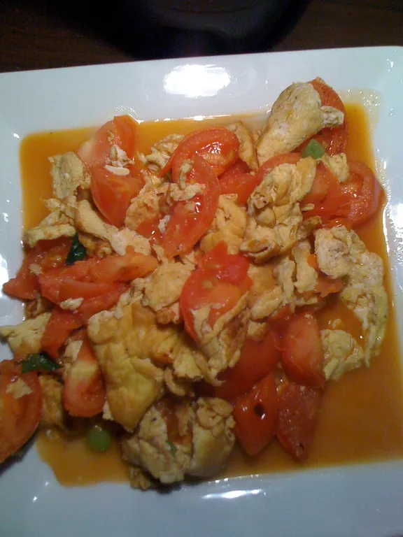
番茄炒鸡蛋
Godofnanjing · Tomato and eggs.JPG · CC BY-SA 3.0
第 3 步 · 炒软番茄
保留分开烹调顺序；不采用油冒白烟或含糊的大勺盐量。本版中火、油不冒烟，盐先少后补。
核对原页与实际步骤
主要资料：The Woks of Life · Sarah
下厨房 · 猫厨房 · 番茄炒蛋
鸡蛋先炒盛出，番茄另煮出汁后合炒。
App 步骤 原锅加余油，中火炒番茄并加一小撮盐。炒到边缘变软、铲子轻压就出汁；锅干而番茄还硬，沿锅边慢慢加 1–2 汤匙水，调小火稍焖，别硬烧。
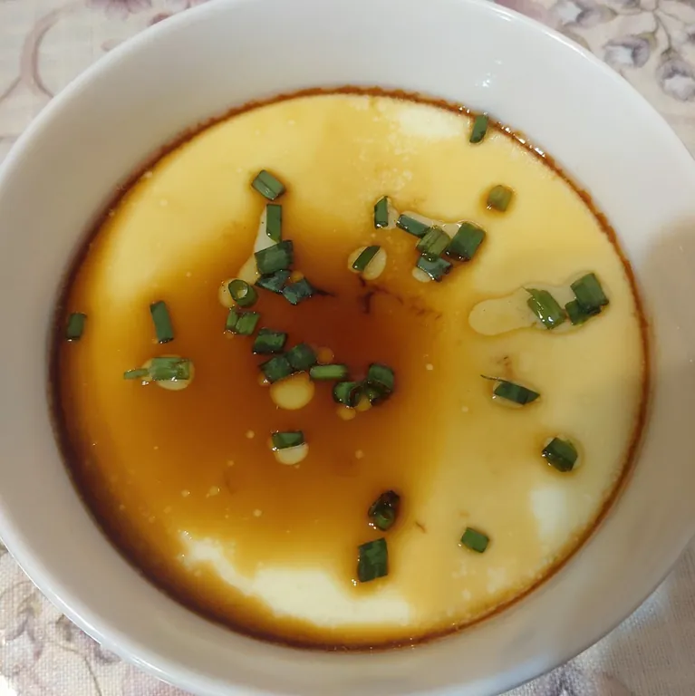
家常蒸蛋
HowToCook 菜谱贡献者 · 鸡蛋羹 · Unlicense
第 2 步 · 盖盘蒸蛋
保留本版蛋液与水 1∶1.5、宽浅碗和中心熟度检查；不照搬原文 2 倍水，也不把 15 分钟当通用熟透保证。
核对原页与实际步骤
主要资料：China Sichuan Food · Elaine
下厨房 · 楼一一一 · 水蒸蛋（只要掌握三点，做出光滑特别简单）
蒸碗覆盘，锅中水沸后再入锅蒸。
App 步骤 碗上盖耐热小盘挡住滴水，放稳在蒸架上。蒸锅水开后放入，盖锅盖，转中小火让水持续轻轻沸腾、不猛烈翻滚。先蒸约 10 分钟再检查，别频繁开盖；留意锅水，不能烧干。
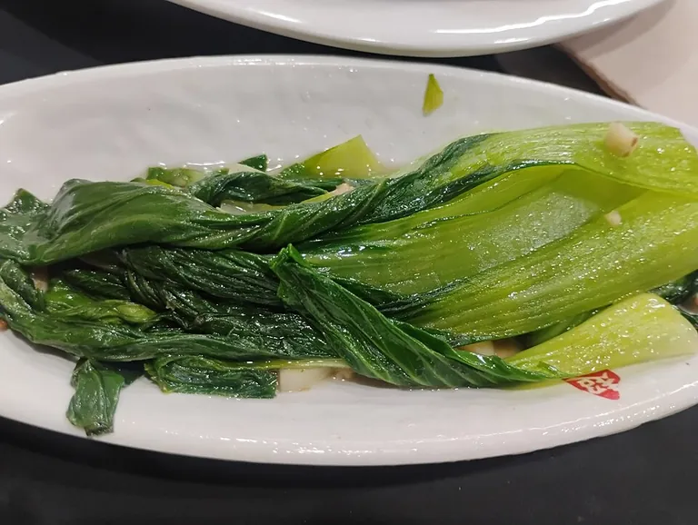
清炒小白菜
Ralff Nestor Nacor · Stir Fried Bok Choy, Aug 2025.jpg · CC BY-SA 4.0
第 2 步 · 大火炒菜
粗梗切细再先下锅，菜叶等梗开始变软再下；大份量用小锅时分批炒。
核对原页与实际步骤
主要资料：The Woks of Life · Kaitlin
下厨房 · 瞬间777 · 清炒小青菜
作者把菜帮和叶分开，蒜碎出香后先炒菜帮。
App 步骤 锅里加油，中火热到油容易流动，不等冒烟。姜蒜有则小火炒到闻见香味，先下厚梗翻炒，再下叶。转中大火不停翻动，铲不开就分批，不把叶子硬压在锅底。

番茄蛋花汤
NNU-10-HanRongrong · Tomato and egg soup.jpg · CC BY 3.0
第 3 步 · 淋蛋花
小灶用清汤底，小滚时细流淋蛋；先让蛋花凝住再推动汤勺。
核对原页与实际步骤
主要资料：HowToCook 中文开源菜谱 · HowToCook 社区贡献者
下厨房 · 欢欢早安 · 番茄蛋花汤
番茄炒出红汁后加水，原方勾薄芡再分次倒蛋。
App 步骤 调成小滚，蛋液绕着锅细细淋入，等蛋丝变色定形再轻推。煮到没有透明生蛋液、蛋花完全凝固，再尝汤补盐，有葱最后撒。别为了蛋花好看而提前关火。

葱油拌面
Suginami · 葱花葱油拌面.jpg · CC0
第 2 步 · 煸葱油
本版做热拌面，用普通生抽，不要求虾籽酱油。葱段粗细不同，加葱绿后先检查薄的葱尖。
核对原页与实际步骤
主要资料：The Woks of Life · Judy
下厨房 · Ray-小单味 · 苏式葱油拌面
葱白先下锅，葱绿后放，利用余温出香。
App 步骤 油和葱白先入锅，小火慢煸，葱白变软再加葱绿。闻到葱香、葱边变金褐色就把上色的先夹出；细葱尖先夹出，厚葱段继续煸；夹出的葱还有余温，上色会再深一点。
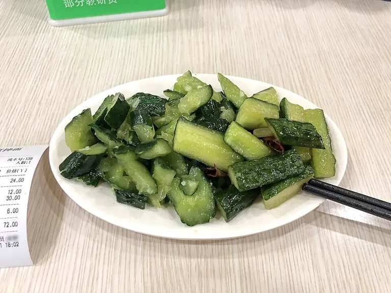
蒜香拍黄瓜
N509FZ · Smacked cucumbers at Changranju Restaurant, Beijing (20210501180457).jpg · CC BY-SA 4.0
第 1 步 · 拍黄瓜
不照搬原料栏与正文不一致的盐量，也不用薄刀重拍。生抽先少放，额外盐可省，喜欢甜味才加少量糖。
核对原页与实际步骤
主要资料：The Woks of Life · Judy
下厨房 · 下厨房用户_geqhb（小羽私厨） · 拍黄瓜
拍裂后切成入口小块，先调汁再拌。
App 步骤 黄瓜洗净擦干，切掉两端。放入干净食品袋，在稳固砧板上用擀面杖轻敲到裂开，再取出切一口块，别用薄刀猛拍。蒜切末；所有器具要干净，不能刚切完生肉就直接拌凉菜。
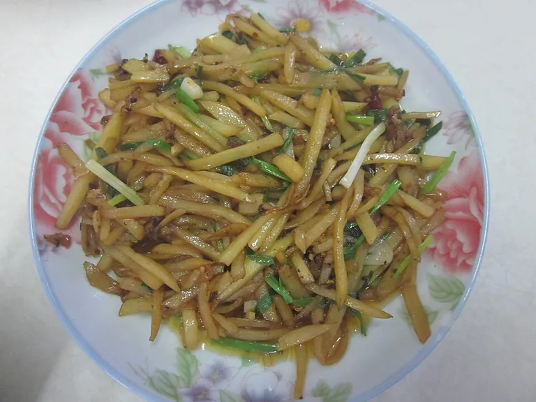
酸辣土豆丝
Huangdan2060 · Hunan cuisine, vinegar potato wire.jpg · CC BY 3.0
第 1 步 · 切丝冲洗
只参考清洗与状态观察；本版仍保留短焯后炒熟的路径，不是原文免焯水版本。半透明只是线索，还要检查较粗的一根没有生硬粉芯。
核对原页与实际步骤
主要资料：HowToCook 中文开源菜谱 · HowToCook 社区贡献者
下厨房 · 黄漫漫 · 不用焯水一样炒出脆脆的酸辣土豆丝
切丝后洗去表面淀粉，炒至半透明，醋分次加入。
App 步骤 土豆去皮，先切一个平面放稳，再切约 2–3 毫米均匀细丝；用刨丝器时护住手。清水冲掉表面淀粉。入沸水略焯约 10 秒就捞出沥干，这只是预处理，稍后仍要炒熟。蒜、青椒有才切。
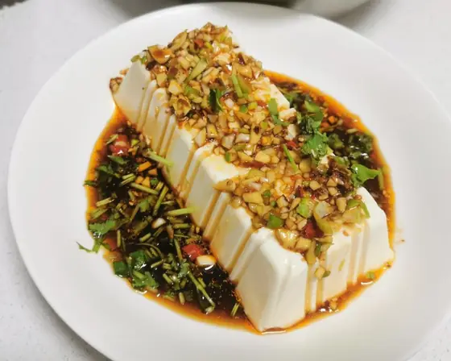
家常凉拌豆腐
来源于下厨房 · 半生瓜 · 凉拌豆腐，爽口下饭超简单 · 非商业转载说明
第 3 步 · 淋汁
豆腐先按包装要求加热，再把盘底的水沥掉；蘸汁从半份开始，避免嫩豆腐拌碎。
核对原页与实际步骤
主要资料：HowToCook 中文开源菜谱 · HowToCook 社区贡献者
下厨房 · 半生瓜 · 凉拌豆腐，爽口下饭超简单
内酯豆腐装盘沥水，另碗调好醋和生抽再淋。
App 步骤 豆腐放干净浅碗，温热时就能淋汁吃，不必在室温放到冰凉。葱、辣椒油可省。用勺从碗边轻推，别大力搅；想吃凉的及时放冰箱冷却，临吃再拌。
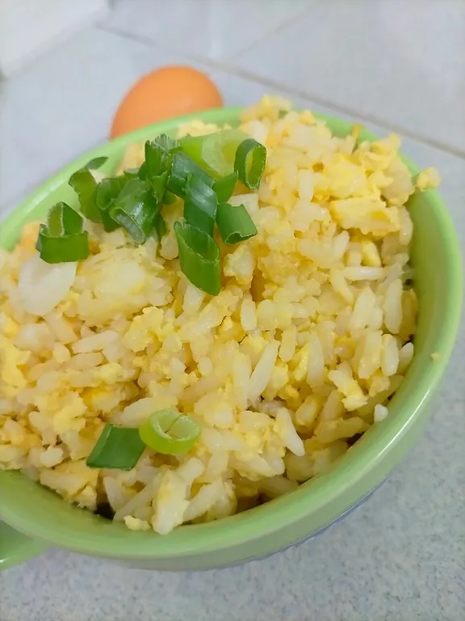
家常蛋炒饭
Euniceyeoh07 · Chinese egg fried rice.jpg · CC BY-SA 4.0
第 2 步 · 炒蛋和饭
先把妥善冷藏的熟饭拨散；饭多就分批炒热，葱绿留到出锅时撒。
核对原页与实际步骤
主要资料：Made With Lau · Daddy Lau / Randy Lau
下厨房 · 张记小灶 · 家常蛋炒饭：只用鸡蛋葱花，炒出高级感
葱白和葱绿分开，蛋液底面定形后划散，再把饭团炒开。
App 步骤 锅里加油，中火到油能流动但不冒烟。蛋液下锅，轻推成柔软小块就加饭。用铲子侧边拨开饭团、翻到锅底均匀受热，不用使劲压碎米粒；一次只炒这一碗，锅装太满就分批。
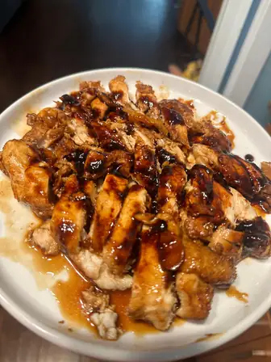
蜜汁鸡丁
来源于下厨房 · 三宝妈家常菜 · 照烧鸡胸肉 · 非商业转载说明
原作者同用鸡胸肉、蜂蜜和酱油，先煎再收汁，装盘前切成小段。本版先切丁再煎。
第 3 步 · 蜜汁煮透
小灶把蜂蜜留到煎鸡丁之后，避免甜汁先焦；酱汁已稠而肉心未达 74°C 时，加水继续煮。
核对原页与实际步骤
主要资料：Good Food · Charlotte Pike
下厨房 · 厂尌 · 黑椒蜜汁鸡胸肉
原作者先给鸡胸肉裹蜜汁，煎到两面上色后补水盖锅焖煮。
App 步骤 倒入调好的蜜汁，煮开转中小火，让小泡持续冒起，翻动使每块都裹汁。用食品温度计从侧面测几块最大鸡丁，中心达到74°C；不足就补一点水继续煮并复查。鸡肉熟后才尝汁，淡了少量加生抽、太甜且有柠檬可挤几滴柠檬汁。小火收到汁薄薄挂住肉就停，不必收成糖浆。
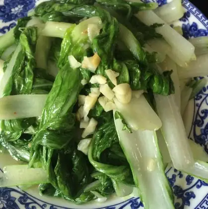
蒜蓉小白菜
来源于下厨房 · 王77 · 蒜蓉小白菜 · 非商业转载说明
第 2 步 · 炒蒜下菜
备菜时把洗好的白菜放漏篮；闻到蒜香就下厚梗，留出余地下叶，不必等蒜末变褐。
核对原页与实际步骤
主要资料：The Woks of Life · Bill
下厨房 · 王77 · 蒜蓉小白菜
作者先控干白菜，蒜末刚出香时就下菜。
App 步骤 油入锅，中小火下蒜末，闻见蒜香、颜色仍浅时立刻下菜梗，随后放菜叶。调至中大火翻动；不把蒜炒到棕黑，也不让空锅冒烟。小锅装不下就分两批。
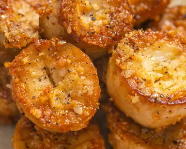
黄油酱香杏鲍菇
来源于下厨房 · 蜜桃厨房小主 · 〖黄油蒜香杏鲍菇〗 · 非商业转载说明
第 2 步 · 煎熟
本版用薄片，只在贴锅面上色、能轻推时翻面；黄油留到末段低火拌香。
核对原页与实际步骤
主要资料：The Woks of Life · Judy
下厨房 · 蜜桃厨房小主 · 〖黄油蒜香杏鲍菇〗
厚切杏鲍菇先煎出金黄表面，再把菇拨开，加入黄油和调味。
App 步骤 平底锅加少量食用油，中火铺单层菇片，留些空隙，分批煎。先让接触锅底的一面定住、出现金黄斑点再翻；两面上色、菇片变软可弯时盛出。锅太满会先出水，不会马上变焦香。
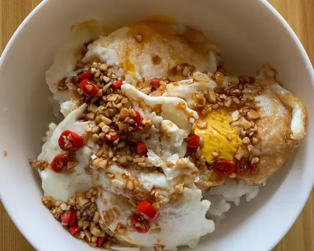
酱油煎蛋饭
来源于下厨房 · 耿直李大妈 · 松兰（老式）拌饭 · 非商业转载说明
原作者的拌饭用了多颗煎蛋和辣椒。小灶按一人份煎蛋、淋酱油汁。
第 3 步 · 淋酱汁
将酱汁调稀、分次拌入热饭，本版让蛋白和蛋黄充分凝固后再盖到饭上。
核对原页与实际步骤
主要资料：The Woks of Life · Sarah
下厨房 · 耿直李大妈 · 松兰（老式）拌饭
原方盖锅煎蛋，另碗用酱油和少量水调拌饭汁。
App 步骤 先把熟蛋放饭上，锅中有葱可炒软。生抽先用部分，兑所列2汤匙水，小火煮开；糖和料酒可省。先淋一点酱汁拌着尝，再决定加多少，别把一杯饭泡成咸汤。

清香蛋花汤
NeoBatfreak · Egg drop soup (蛋花湯).jpg · CC BY-SA 4.0
第 3 步 · 淋蛋与出锅
用清汤也能出蛋花：水面仅轻轻翻动，蛋液细流入锅，凝成絮状再推开。
核对原页与实际步骤
主要资料：美食天下 · 花式炒咸菜
下厨房 · 王雪岩1984 · 一碗漂亮又鲜嫩无比的基础蛋花汤
作者把蛋液充分打散，锅开后调小火，慢慢倒入。
App 步骤 蛋液绕圈细细倒入，先停手等边缘凝固，再轻轻拨散。保持加热至蛋花全部熟透、没有透明生蛋液。尝味补一点盐，香油几滴就够，香菜按喜好放。

番茄蛋花汤面
来源于下厨房 · PauCifer · 番茄鸡蛋汤面 · 非商业转载说明
第 2 步 · 煮番茄面
小灶直接在番茄汤里煮面；先炒软番茄再加水，面条吸汤后用少量热水调稀。
核对原页与实际步骤
主要资料：The Woks of Life · Judy
下厨房 · PauCifer · 番茄鸡蛋汤面
原作者先炒出番茄红汁，另一锅煮面，再合锅调味。
App 步骤 少油中火炒番茄，有蒜可先短炒出香。番茄塌软出汁后加约600毫升水，煮开下面，边煮边拨散，按包装煮到无硬芯。吸水后太稠逐次补热水；高汤只替换等量水，不另加一份。

香辣两面黄
joyosity · Pan-fried Noodles · CC BY
煎面成品实拍，可对照面条的金黄焦边。原图未注明调味，小灶版另拌辣油酱汁。
第 2 步 · 煎两面
只借鉴煎面；本版拌辣味调料。摊薄后等底面结壳再翻，整张难翻时分块操作。
核对原页与实际步骤
主要资料：The Woks of Life · Sarah
下厨房 · 呤儿 · 韭黄肉丝两面黄
两面黄的面条先沥水、整形成薄饼，在平底锅中将两面分别煎黄。
App 步骤 平底锅薄铺油，中小火把面铺成薄层，先别来回翻。用铲轻抬边缘，底面有金黄色、能整体松动再翻；不便整张翻就分成两三块翻面，两面金黄即可。
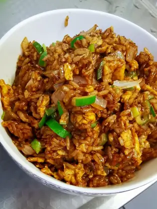
酱油炒饭
来源于下厨房 · 吖铭 · 酱油炒饭 · 非商业转载说明
第 3 步 · 酱油调味
小灶先炒松热饭，再把酱油分次拌开；饭粒已均匀着色就先尝咸淡。
核对原页与实际步骤
主要资料：The Woks of Life · Judy
下厨房 · 吖铭 · 酱油炒饭
作者先把酱油调料与米饭拌匀，再与洋葱、鸡蛋合炒。
App 步骤 每批先加部分生抽，翻匀尝味。鱼露、蚝油同样有盐，有用就减生抽；老抽糖料酒葱按喜好加，不必凑齐。冷饭复热用食品温度计确认各处至少74°C，热透后即出锅，不为追求深色一直加酱油。
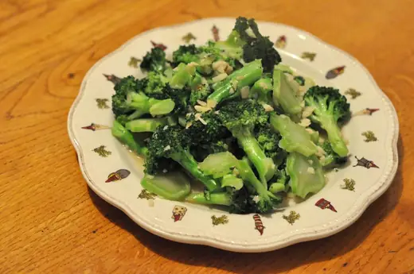
蒜香西兰花
来源于下厨房 · 机器猫姑娘 · 蒜蓉西兰花 · 非商业转载说明
第 3 步 · 蒜汁
本版把蒜香料汁另锅煮开浇菜，沥去花球夹带的水，少量淋汁再尝。
核对原页与实际步骤
主要资料：HowToCook 中文开源菜谱 · HowToCook 社区贡献者
下厨房 · 机器猫姑娘 · 蒜蓉西兰花
作者先焯西兰花并沥干，蒜末出香后再炒菜。
App 步骤 锅内放油，小火把蒜炒出香味、仍浅色就倒入预调汁煮开。先淋一部分到西兰花，拌一朵尝味，再决定加多少；不是一定要把咸汁全部倒完。

虾仁炒鸡蛋
Ser Amantio di Nicolao · Baby shrimp with scrambled egg.jpg · CC0
第 3 步 · 加蛋
新手先将虾炒熟再倒蛋，铲子从锅边往中间推；流动的蛋液完全凝固即可盛出。
核对原页与实际步骤
主要资料：The Woks of Life · Bill
下厨房 · Sophiephie · 虾仁炒蛋
原方把虾仁与蛋液拌在一起，中火用铲慢推成滑蛋。
App 步骤 转中小火，锅底薄薄补油，再倒蛋液。边缘凝住后用铲子从底部往中间轻推，形成大而软的蛋块，让剩余蛋液流到锅底。虾拌在蛋块里，蛋液全部凝固、不再流动便出锅；有葱香油最后少量加。不要为了焦黄多炒，尝熟蛋后再补盐。

培根蛋炒饭
来源于下厨房 · Yang妈美食 · 培根蛋炒饭 · 非商业转载说明
参考培根、米饭和鸡蛋的成品外观，作者另加了蔬菜丁。
第 2 步 · 炒培根鸡蛋
本版省去牛肉末等配料。观察培根出油量再决定是否补油，米饭炒透后再补盐。
核对原页与实际步骤
主要资料：The Woks of Life · Bill
下厨房 · Leoanan · 普通的蛋炒饭
原方小火煸培根出油，再用锅里的油炒配料和米饭。
App 步骤 少油中火炒培根，等脂肪析出、边缘微卷，按包装要求炒熟。油积成一滩就留够润锅的量，其余盛出。洋葱有则炒到半透明，再倒蛋液轻推成小块，别把蛋炒干。

西兰花烧豆腐
来源于下厨房 · Z开芯 · 西兰花豆腐 · 非商业转载说明
原作者将西兰花摆在豆腐四周，小灶把两者合在锅里烧。
第 3 步 · 调味收汁
小灶将西兰花放进煎过豆腐的锅，加汤煮到厚茎熟软，最后才薄薄收汁。用铲背轻推豆腐保持完整。
核对原页与实际步骤
主要资料：The Woks of Life · Sarah
下厨房 · Z开芯 · 西兰花豆腐
原作者先焯西兰花，豆腐两面煎黄后加汁炖，轻推收汁。
App 步骤 老抽、糖、香油可省，料酒若用要在仍有汤时加入煮开。先尝咸度再补生抽。淀粉水重新搅匀后一点点加，汤汁煮开、略能挂住食材就停；不用淀粉可留清汁，不烧到干底。

手撕包菜（素版）
来源于下厨房 · 执剑踏云 · 手撕包菜 · 非商业转载说明
第 1 步 · 撕包菜
参考撕小、先备调味和炒软后调味。小灶保留少盐起步、其他调料可省的素版，不叠加原文多种咸味调料，也不把小锅塞满。
核对原页与实际步骤
主要资料：The Woks of Life · Judy
下厨房 · Cola_aa · 手撕包菜
包菜撕成小块，预先调汁，炒软后再加汁。
App 步骤 包菜去掉硬芯，叶子撕成约一口大小，厚叶脉切薄，洗净沥到不滴水。蒜、干辣椒有才准备；要用的调味先量好放手边。680 克菜体积很大，小锅请分两批，调料也分着用。
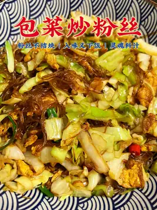
包菜炒粉丝
来源于下厨房 · 陈家胖胖青 · 包菜炒粉丝🔥不坨不结块，香到舔盘 · 非商业转载说明
第 1 步 · 泡粉丝
按粉丝包装先泡至可弯，一夹成团就用筷子拨松；入锅少量补水让粉丝吸汁。
核对原页与实际步骤
主要资料：The Woks of Life · Judy
下厨房 · 陈家胖胖青 · 包菜炒粉丝🔥不坨不结块，香到舔盘
温水浸软粉丝后剪短，沥水，后入锅抖散与包菜合炒。
App 步骤 绿豆粉丝按包装泡到能弯曲、还有韧性，沥水剪短。包菜切细丝，粗梗切更薄并沥干；姜蒜葱干辣椒有才备好，另留约120毫升水备用。

菠菜肉末拌面
来源于下厨房 · 皮卡喵 · 蔬菜牛肉拌面：儿童辅食 · 非商业转载说明
原作者同用菠菜、切碎牛肉与面条，另配胡萝卜丝和鸡蛋。
第 3 步 · 拌面
本版用牛肉末和菠菜，留一小杯面汤；肉末熟透后用少量面汤稀释肉汁再拌。
核对原页与实际步骤
主要资料：The Woks of Life · Sarah
下厨房 · Livvie · 肉末拌面
原作者分开炒肉末、煮面烫青菜，并留少量面汤帮助拌开。
App 步骤 熟肉里放部分生抽和一点面水煮开，再拌入面和菠菜，翻到均匀热透。尝一口再补生抽或盐；老抽、胡椒、香油、蜂蜜、辣椒油都是口味选择，不需要全加。

青菜油泼面
HowToCook 菜谱贡献者 · 陕西油泼面 · Unlicense
第 3 步 · 热油拌匀
用稳固耐热碗，先沥掉碗底积水；少量油淋向调料，拌匀后再决定是否补醋。
核对原页与实际步骤
主要资料：The Woks of Life · Sarah
下厨房 · 好食客小太阳 · 油泼面（家常简单版）
作者把煮好的面沥水入碗，把蒜末和辣椒面放在面上后泼油拌开。
App 步骤 小锅放油，中小火热到油面轻微波动、不冒烟就离火。身体避开碗口，靠近面上的辣椒碎小心慢淋，防止溅油。充分拌匀再尝盐；若不熟悉泼油，可把辣椒碎放温油小火短炒出香后一起拌面。

姜葱炒虾仁
Neven Mrgan · Ginger scallion shrimp · CC BY-NC-SA
第 3 步 · 调味出锅
小灶先用姜葱煸香再炒虾，调料提前量好。虾熟时加葱绿、翻到刚软就尝味，不必勾芡。
核对原页与实际步骤
主要资料：The Woks of Life · Bill
下厨房 · 她是弯弯呀 · 葱姜炒虾仁
原作者先配好碗汁，煎虾仁后加葱姜，最后用料汁收尾。
App 步骤 下葱绿翻几下到刚软，盐先一小撮；喜欢酱香可改用少量生抽，别两样一起倒足。料酒有则沿锅边少量加并煮开，香油、白胡椒、糖均可省。尝一只熟虾再调整，够味就关火盛出。

韭菜炒鸡蛋
来源于下厨房 · 文琦 · 韭菜炒鸡蛋 · 非商业转载说明
第 3 步 · 合炒
韭菜洗后沥干再切；韭菜变软才让鸡蛋回锅，一起热透即可。
核对原页与实际步骤
主要资料：HowToCook 中文开源菜谱 · HowToCook 社区贡献者
下厨房 · 文琦 · 韭菜炒鸡蛋
原作者先炒鸡蛋盛出，再快炒韭菜，合锅即盛。
App 步骤 余油先炒韭菜根段，再放叶段，翻到整体塌软、由生硬变柔韧。把蛋块放回，加少量盐轻翻；所有蛋液完全凝固、没有流动生蛋液时出锅，别为了等韭菜而一直煎蛋。
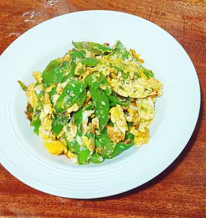
青椒炒鸡蛋
来源于下厨房 · 张记小灶 · 零失败青椒炒鸡蛋，5分钟快手下饭菜，家常味最香 · 非商业转载说明
第 3 步 · 合炒
本版先炒蛋盛出，再炒软青椒后合锅，为新手拆开控制熟度，并非复刻原法；厚壁椒要多给时间，不承诺零失败。
核对原页与实际步骤
主要资料：美食天下 · 老老猪的小小猪
下厨房 · xcf2019 · 青椒炒蛋 米饭杀手 下饭
原法将碎椒与蛋混合，中火摊开后炒至蛋液凝固。
App 步骤 补少量油，先炒青椒到有光泽、稍塌软，夹一块放凉尝，能咬断且没有生硬口感。再放蛋块轻翻到无流动蛋液，尝后补少量盐；糖只是可选的小撮，不必多放。
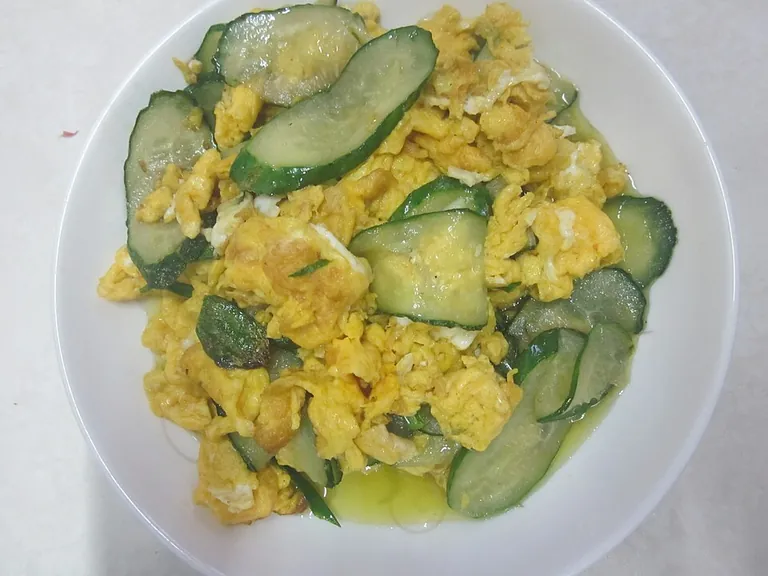
黄瓜炒鸡蛋
Huangdan2060 · Hunan cuisine, Cucumber fried with Eggs.jpg · CC BY 3.0
第 3 步 · 炒黄瓜
小灶把成块的蛋先盛出；黄瓜略软仍有形时回蛋，避免鸡蛋全程在锅里变干。
核对原页与实际步骤
主要资料：美食天下 · 不做妖精好多年
下厨房 · 云姐的幸福日子 · 黄瓜炒鸡蛋
作者把黄瓜切薄片，蛋液先下锅，鸡蛋成块后再加入瓜片。
App 步骤 原锅加余油，黄瓜片翻炒到颜色稍深、边缘开始透亮，仍保留一点脆。放回蛋块，加少量盐，翻到蛋液完全凝固后立刻出锅。鸡精可省，不把黄瓜炒到软烂才停。

紫菜蛋花汤
来源于下厨房 · 食尚煮妇 · 紫菜蛋汤 · 非商业转载说明
第 3 步 · 淋蛋液
小灶把两者分开下：先让紫菜舒展开，再往小滚的汤中细流淋蛋，形成较薄的蛋花。
核对原页与实际步骤
主要资料：美食天下 · 四月豆
下厨房 · 食尚煮妇 · 紫菜蛋汤
原方将撕碎的紫菜泡进蛋液，再分团放入热汤。
App 步骤 转小滚，将蛋液绕圈缓缓淋入，蛋花定形后再轻推。继续加热到全凝固、无透明蛋液，尝后补盐；有香菜最后撒，别让汤长时间大滚把蛋煮老。

芹菜炒香干
来源于下厨房 · 米二乔 · 芹菜炒香干（豆腐干） · 非商业转载说明
第 1 步 · 切配
粗芹菜梗顺长剖细再切段，香干切成相近长度的条。两者炒熟后再尝味，按香干本身的咸度补盐。
核对原页与实际步骤
主要资料：美食天下 · 国民马大姐豆制品
下厨房 · 米二乔 · 芹菜炒香干（豆腐干）
原方给芹菜去筋、斜切成片，香干也切片再与芹菜同炒。
App 步骤 芹菜洗净，粗茎纵切细再切约 3 厘米段；香干切相近长度的条，先看包装是否要求加热。青椒蒜有才切。若用淀粉，用少量凉水调开，别把干粉直接撒锅里。
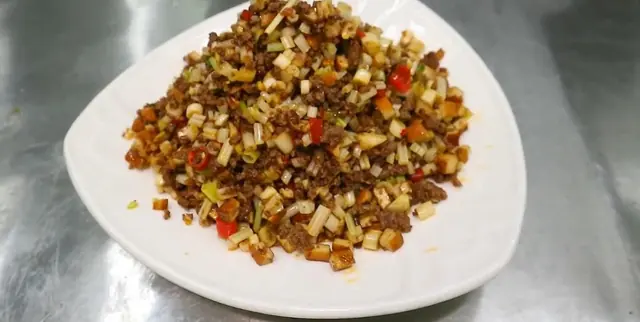
肉末香干炒芹菜
来源于下厨房 · 美食作家王刚 · 芹菜炒肉末（完成装盘步骤） · 非商业转载说明
原作者将牛肉末与香干丁、芹菜丁同炒。小灶使用猪肉末。
第 3 步 · 炒蔬菜
本版先拨散并炒熟肉末，再放香干和芹菜；切成接近大小的小粒，能均匀裹上肉汁。
核对原页与实际步骤
主要资料：美食天下 · 宁小麦
下厨房 · 美食作家王刚 · 厨师长教你：“芹菜炒肉末”的家常做法，味道很赞，非常下饭
作者把香干和芹菜切细粒，牛肉末与香干先炒，芹菜后下。
App 步骤 下芹菜和香干翻匀，让香干沾上肉汁。沿锅边加少许水，炒到芹菜颜色亮、能轻易咬断但仍有脆感，香干内部也热透。尝味后才补盐；花椒粉喜欢就少撒，别盖住芹菜香。
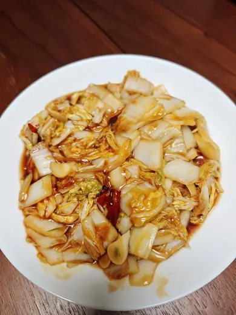
醋溜白菜
来源于下厨房 · 圆圆圈_ · 醋溜白菜 · 非商业转载说明
第 2 步 · 炒白菜
厚帮切薄先炒，叶片软下来后再合醋汁；汁刚裹匀就盛盘，避免白菜久煮出水。
核对原页与实际步骤
主要资料：美食天下 · 淇家的小厨房
下厨房 · 圆圆圈_ · 醋溜白菜
作者把白菜帮叶分开，帮的边缘略透后加叶，再倒预调醋汁。
App 步骤 锅中少油，中小火把葱炒香，先下白菜帮翻到边缘微透，再下叶。保持翻动到叶子塌软、厚帮能咬断。花椒粉有且喜欢可加；锅里已有菜汁就不用再加很多水。

红烧冬瓜
HowToCook 菜谱贡献者 · 红烧冬瓜 · Unlicense
第 3 步 · 收汁
省去花刀和多种酱料，冬瓜切匀即可。盖锅时看软硬，开盖时看挂汁，两个时点分开判断。
核对原页与实际步骤
主要资料：美食天下 · 大草海
下厨房 · 古贝私厨 · 红烧冬瓜
去皮去瓤切块，盖锅焖软，开盖后收汁。
App 步骤 有青椒此时放入，煮到稍软且没有生硬口感。开盖看汤汁：还有很多就中火略收，用勺推开瓜块，盘底还留一点能拌饭的汁就停。尝味再决定是否加剩余酱油，不为颜色深而多加。

蒜蓉油麦菜
来源于下厨房 · naaaaaa · 蒜蓉油麦菜 · 非商业转载说明
第 2 步 · 炒蒜菜
小灶主取蒜香。蒜碎刚出香就下沥干的菜段，菜量大分批炒，以免蒜焦菜仍生。
核对原页与实际步骤
主要资料：美食天下 · 香香83
下厨房 · naaaaaa · 蒜蓉油麦菜
原方将油麦菜切段，先炒蒜末和辣椒等香料，再放菜翻炒。
App 步骤 锅里放油到能薄润锅底，中小火下蒜末，闻到香味但没变棕时先下梗，再放叶。调中大火翻动到叶子塌软、梗不再生硬。菜堆得翻不动就分批，不让下面的蒜一直焦着。

虎皮青椒
HowToCook 菜谱贡献者 · 虎皮青椒 · Unlicense
第 2 步 · 煎青椒
先观察贴锅面的皱纹，再决定何时翻面。生抽和醋只按本版的小份量起调。
核对原页与实际步骤
主要资料：美食天下 · 花雨曼陀罗
下厨房 · SuSu苏苏儿 · 虎皮青椒
青椒沥干，先煎出皱皮再加入蒜与调汁。
App 步骤 锅底薄薄一层油，中小火把青椒铺一层。用铲轻压让椒皮贴锅，先掀起一只看底面；有褐色斑点、椒皮起皱，再把这一批翻面。目标是零星虎皮，不是整片黑炭；油冒烟就减火，不往冒烟油锅里泼水。
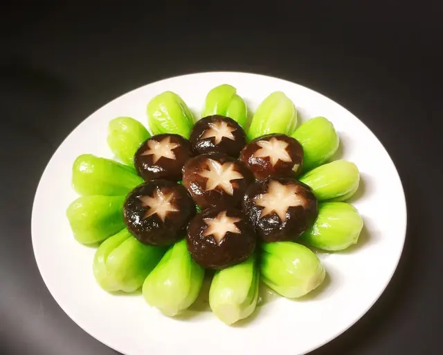
香菇油菜
来源于下厨房 · 五月孤芳 · 香菇油菜 · 非商业转载说明
第 2 步 · 炒菜炒菇
小灶让鲜菇充分受热再合菜；粗菜梗纵剖，不让已经软的菜叶陪着菇久煮。
核对原页与实际步骤
主要资料：美食天下 · 小艾厨娘
下厨房 · 五月孤芳 · 香菇油菜
作者将青菜和香菇分开处理，再合锅淋芡汁，菜梗比菜叶先入热水。
App 步骤 锅里少油，中火，有葱先炒香。油菜先炒到叶软、梗能戳入，盛出。原锅补少量油，下香菇片铺开翻炒，等出水后继续炒到菇片柔软、中心不再硬韧；不要只把表面烫热就合锅。

蒜苔炒肉丝
来源于下厨房 · 琥珀君W · 蒜苔炒肉丝 · 非商业转载说明
第 3 步 · 合炒
蒜苔先去老梗。咬不动的粗段可补少量水多煮片刻，把已熟的肉丝留到最后合锅。
核对原页与实际步骤
主要资料：美食天下 · 一慕倾城
下厨房 · 琥珀君W · 蒜苔炒肉丝
原方将肉和蒜苔分次下锅，蒜苔入锅后补一点水煮软再调味。
App 步骤 原锅留薄油，蒜苔中火翻炒到颜色变亮、能弯折，尝一段无硬芯、无明显生辛味再放回肉丝。若炒干仍硬，可加少量水盖盖焖软再开盖。合炒热透后先尝再补盐，肉已熟就不必久炒。
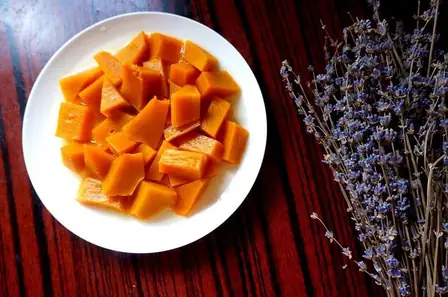
清蒸南瓜
来源于下厨房 · 小美的美食 · 营养蒸--清蒸南瓜 · 非商业转载说明
第 3 步 · 检查软度
挑盘中最厚的一块从侧面戳到中心；薄块先软时先夹出，余下继续蒸。
核对原页与实际步骤
主要资料：HowToCook 中文开源菜谱 · HowToCook 社区贡献者
下厨房 · 小美的美食 · 营养蒸--清蒸南瓜
原作者将南瓜切块装盘，等蒸锅水沸再入锅，用筷子检查软度。
App 步骤 开盖时让蒸汽朝远离身体的方向散开，用筷子戳最厚块的中心，能轻松穿透才取出。仍硬就确认锅内有水，继续蒸 3–5 分钟再查。关火后用隔热手套或夹盘器稳稳取盘，盘内积水很烫。
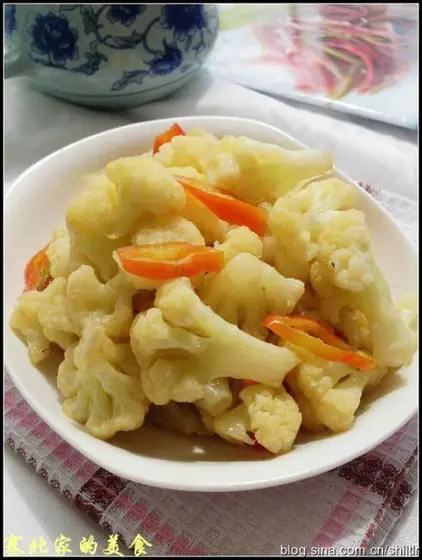
清炒花菜
来源于下厨房 · 塞北主妇 · 清炒菜花 · 非商业转载说明
第 2 步 · 焯花菜
把较粗花梗剖开，使它和小花朵同时受热；焯后捞一朵试梗，较硬的在炒后补水短焖。
核对原页与实际步骤
主要资料：HowToCook 中文开源菜谱 · HowToCook 社区贡献者
下厨房 · 塞北主妇 · 清炒菜花
原方掰花菜成小朵、焯水，再炒蒜片和花菜。
App 步骤 足量水烧到沸腾再下花菜，先煮约 2–3 分钟。夹一块粗茎检查，应从硬脆开始变软，但不用煮到一夹就碎；然后沥干，后面还要炒和短焖。
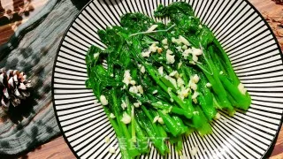
白灼菜心
HowToCook 菜谱贡献者 · 白灼菜心 · Unlicense
第 2 步 · 白灼
粗梗切段或剖薄再下锅，嫩菜心也可以整棵做；本版蚝油可省，料汁按口味分次淋。
核对原页与实际步骤
主要资料：HowToCook 中文开源菜谱 · HowToCook 社区贡献者
下厨房 · 美味虾卷 · 白灼菜心
菜心的梗端先受热，再烫叶片，最后单独做汁。
App 步骤 锅中水完全沸腾后加几滴油，先下菜梗约 1 分钟，再下菜叶继续煮。水量要让菜能浸到，不够就加水重新烧开。粗茎能被筷子戳入、叶软再捞出沥水；盐只在焯水时可选，不必用满。

可乐鸡翅
Pauloleong2002 · Home made chicken wings with coca cola.jpg · CC BY-SA 4.0
第 3 步 · 煮熟收汁
借鉴先煎、再煮、后收汁的顺序；本版保留焯水预处理。最厚肉处须测到 74°C，再小火收汁，不能用酱汁浓度判断鸡翅已熟。
核对原页与实际步骤
主要资料：HowToCook 中文开源菜谱 · HowToCook 社区贡献者
下厨房 · yanyanfoodtube · 可乐鸡翅 Coca Cola Chicken wings
中小火煎上色，加可乐炖熟后再收汁。
App 步骤 翻动鸡翅使两面都浸到汁，用食品温度计测最厚肉处、避开骨头，几只最大的均达到74°C再收汁。先尝煮熟的汤汁，可乐已有甜味，糖通常不用加，盐和老抽也按需少放。转小火勤翻，汁能挂在翅上就关火，留一点汁比熬干保险。

葱姜焖虾
来源于下厨房 · 陈西西-c · 姜葱无水焗虾 · 非商业转载说明
第 1 步 · 垫锅摆虾
本版用洋葱垫底、加少量料酒或水。单层铺虾，起蒸汽后调小火，锅底发干就沿边补水。
核对原页与实际步骤
主要资料：HowToCook 中文开源菜谱 · HowToCook 社区贡献者
下厨房 · 陈西西-c · 姜葱无水焗虾
原方在厚锅底铺姜蒜和葱，将虾均匀摊开，再盖锅焗。
App 步骤 洋葱切块、姜切片铺满锅底，选能盖严的厚底锅。虾清理后沥水，单层铺在上面；冻虾先冷藏解冻。生虾接触过的刀板、碗、手洗净，另备干净熟食盘。

白萝卜丝清汤
来源于下厨房 · 99后两人生活记 · 虾米萝卜丝汤🦐 · 非商业转载说明
参考虾米版的萝卜丝切法和清汤颜色，小灶这道用素汤。
第 2 步 · 煮萝卜
小灶改为萝卜丝与清水同煮，不加榨菜。夹起时萝卜丝已能弯软、中心透亮，再尝汤调盐。
核对原页与实际步骤
主要资料：HowToCook 中文开源菜谱 · HowToCook 社区贡献者
下厨房 · 胖妻的厨房日记 · 美味白萝卜汤(没有异味的鲜汤)
作者把白萝卜擦丝，汤水先煮开，再下萝卜丝，最后调味。
App 步骤 萝卜丝与800毫升冷水同入锅，烧开转中小火，让汤持续轻滚。煮到萝卜半透明、夹起能弯软，尝一根应没有生硬辣口感，再进入调味。

番茄豆腐蛋花羹
HowToCook 菜谱贡献者 · 西红柿豆腐汤羹 · Unlicense
第 2 步 · 煮番茄豆腐
本版省去原方菌菇。豆腐轻轻滑入汤里，用勺背沿锅边推开，薄芡分次加。
核对原页与实际步骤
主要资料：HowToCook 中文开源菜谱 · HowToCook 社区贡献者
下厨房 · 春暖花开9628wm · 番茄豆腐鸡蛋汤
原方先炒出番茄汁再加热水，汤滚后放豆腐，另调淀粉和蛋液。
App 步骤 少油中火炒番茄，有姜先炒香。番茄出汁变软后加350毫升水煮开，豆腐沿碗边轻轻滑入；改小滚，汤勺推锅底而不翻砸豆腐，煮到豆腐中心热透。
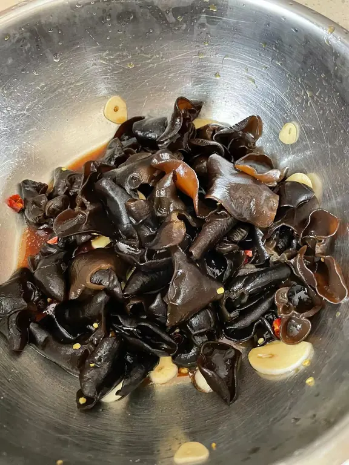
凉拌木耳
HowToCook 菜谱贡献者 · 凉拌木耳 · Unlicense
第 1 步 · 处理木耳
参考先煮后拌；泡发、冷藏与异常丢弃按下方食安中心指引处理，原站短时间煮制不作为所有木耳的熟度保证。
核对原页与实际步骤
主要资料：HowToCook 中文开源菜谱 · HowToCook 社区贡献者
下厨房 · 妮妮Ameile · 凉拌木耳
木耳泡发后煮制，沥水再与调料拌匀。
App 步骤 只用按包装新近泡发的木耳，先冲洗再用干净容器泡。室温泡发一般不超过 2 小时，需更久就冷藏；不要隔夜放室温。泡好去硬根、洗净沙粒并尽快烹煮，别泡好又放桌面等几小时。黏滑、有异味或存放情况不清楚的不用。
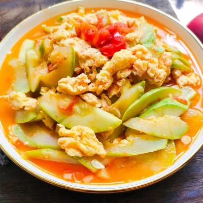
西葫芦炒鸡蛋
HowToCook 菜谱贡献者 · 西葫芦炒鸡蛋 · Unlicense
第 4 步 · 合锅
本版保留可选番茄；按瓜片软硬判断回蛋时机，不要求两分钟内炒熟。
核对原页与实际步骤
主要资料：HowToCook 中文开源菜谱 · HowToCook 社区贡献者
下厨房 · 随心煮意 · 西葫芦炒鸡蛋
瓜切半月薄片，鸡蛋炒成块先盛出，最后合锅。
App 步骤 先看菜汁，很多就先把汁略收一点，再放回鸡蛋轻翻。蛋液完全凝固、整锅热透后尝味补盐，立即盛出；不用让蛋陪西葫芦一直煮。
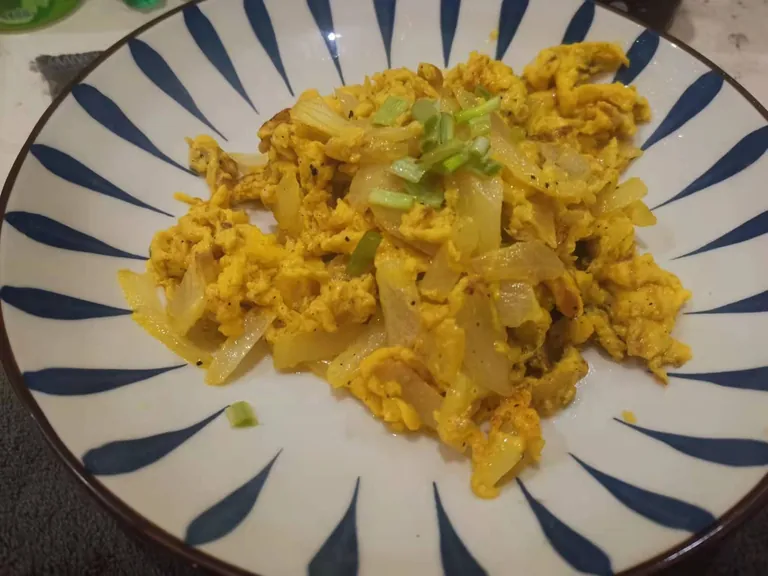
洋葱炒鸡蛋
HowToCook 菜谱贡献者 · 洋葱炒鸡蛋 · Unlicense
第 1 步 · 拌蛋
本版采用洋葱与蛋同锅的做法，所以切得更薄。想吃更软的洋葱，可以先把洋葱单独炒软。
核对原页与实际步骤
主要资料：HowToCook 中文开源菜谱 · HowToCook 社区贡献者
下厨房 · 家常小菜6346 · 超级简单的洋葱炒鸡蛋
洋葱切丝；作者先摊蛋盛出，洋葱炒软后再合锅。
App 步骤 洋葱顺着切面切薄片，再横切成短丝，避免长丝缠在锅铲上，越厚越难和蛋一起熟。鸡蛋在碗里打散，加一小撮盐，拌入洋葱；有葱就切好备用。生蛋碗不要用来装炒好的菜。

蒜蓉空心菜
HowToCook 菜谱贡献者 · 蒜蓉空心菜 · Unlicense
第 2 步 · 炒蒜下菜
粗梗切短或纵剖，趁蒜末刚出香时先炒梗；叶片最后翻入，软下来就检查梗是否熟透。
核对原页与实际步骤
主要资料：HowToCook 中文开源菜谱 · HowToCook 社区贡献者
下厨房 · Forever_良和 · 蒜蓉空心菜
作者将空心菜梗叶分开，先炒蒜和菜梗，再下叶片。
App 步骤 锅放油，小火下蒜末，刚有蒜香、颜色还浅就下菜梗，转中大火翻炒。梗稍变色后再下叶，分次翻到锅底，不把满锅菜压成一团。

葱煎豆腐
来源于下厨房 · 贺子楠_ · 葱煎豆腐 · 非商业转载说明
第 2 步 · 煎豆腐
豆腐沥干后单层摆好。用铲尖推一下底边，能轻松移动时再翻，可减少粘锅和碎裂。
核对原页与实际步骤
主要资料：HowToCook 中文开源菜谱 · HowToCook 社区贡献者
下厨房 · 贺子楠_ · 葱煎豆腐
原方将豆腐切厚块，小火煎黄后夹出，葱段炒香再与豆腐合拢。
App 步骤 不粘平底锅放约 1 汤匙油铺成薄膜，小火到中小火，豆腐单层放入。先别推，等边缘微黄、轻推能移动，再用宽铲托住翻面；两面金黄即可，不必煎到硬壳。

小米粥
来源于下厨房 · 80后男人的厨房 · 小米粥 · 非商业转载说明
第 3 步 · 慢熬
小灶按米粒软烂程度停火。泡米与否、锅的厚薄都会影响用时，锅底开始粘时降火并轻搅。
核对原页与实际步骤
主要资料：HowToCook 中文开源菜谱 · HowToCook 社区贡献者
下厨房 · 80后男人的厨房 · 小米粥
作者水开下小米，小火留缝慢煮，中途搅动让粥渐稠。
App 步骤 转中小火，锅盖留缝，维持轻轻冒泡，慢煮约15–20分钟，其间不时搅底。米粒胀软、舀起不再硬砂感才好；未软就继续煮，水少补热水。关火后还会变稠，别急着收得太干。
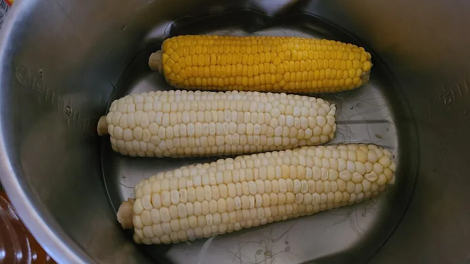
水煮玉米
OnionBulb · BoiledCornOnTheCob20211211.jpg · CC BY-SA 4.0
第 3 步 · 检查熟度
先确认是甜玉米还是糯玉米；夹出一穗稍凉，取中段一粒检查芯的软硬，按口感续煮。
核对原页与实际步骤
主要资料：HowToCook 中文开源菜谱 · HowToCook 社区贡献者
下厨房 · 0047_u137 · 水煮玉米
原方留少量内层苞叶，加水盖过玉米煮，依嫩老调整时间。
App 步骤 夹出一根放稳，取粒稍放凉尝软度：熟透应无生硬粉芯，甜玉米爽脆、糯玉米柔韧，不要求同一种口感。未熟放回续煮，熟了沥水，晾到不烫口再吃。
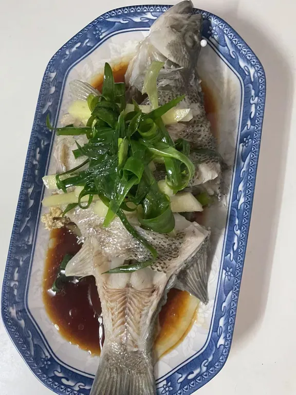
清蒸鲈鱼
HowToCook 菜谱贡献者 · 清蒸鲈鱼 · Unlicense
第 3 步 · 淋汁
采用换新葱丝的做法。原方按约 500 克的鱼估时，小灶按最厚处检查熟度；淋热油可省。
核对原页与实际步骤
主要资料：HowToCook 中文开源菜谱 · HowToCook 社区贡献者
美食天下 · 小董妞@厨房 · 年年有鱼（余）——清蒸鲈鱼
葱姜分两份，第一份随鱼蒸，另一份在出锅调味时使用。
App 步骤 熟后用隔热手套稳稳取盘，先夹掉蒸过的葱姜，再用勺舀走盘边多余的蒸汁；盘子平放，鱼身不容易滑动。少量淋蒸鱼豉油，先留一半免得咸；摆上干爽的新葱姜丝。可小火温热少量油后小心淋上，不烧到冒烟；怕溅油就直接省略，尝一口鱼再决定补不补豉油。

蚝油生菜
来源于下厨房 · 安妮拉就是我 · 快手蚝油生菜 · 非商业转载说明
第 2 步 · 焯熟
只借鉴分批与菜汁分做；本版用沸水焯熟，不照搬 80–90°C 关火短烫，也不把多种咸味料全加进去。
核对原页与实际步骤
主要资料：HowToCook 中文开源菜谱 · HowToCook 社区贡献者
下厨房 · 小美的美食 · 家常菜 蚝油生菜
生菜分批处理后沥水，蒜香酱汁另做再淋。
App 步骤 水烧开后加几滴油，生菜分批放入，轻压让叶梗都接触热水。焯到叶片塌软、厚梗熟而还能弯折，立即捞出充分沥水放干净盘，不让菜泡在焯水里。

菠菜炒鸡蛋
HowToCook 菜谱贡献者 · 菠菜炒鸡蛋 · Unlicense
第 1 步 · 焯菠菜
焯好的菠菜先沥水切短。等蛋块已定形才合锅，可避免积水稀释蛋液。
核对原页与实际步骤
主要资料：HowToCook 中文开源菜谱 · HowToCook 社区贡献者
下厨房 · pepperandpineapple · 菠菜炒鸡蛋
原作者先焯菠菜，另炒蛋，再把菠菜放回锅合炒。
App 步骤 菠菜掰开洗净根部泥沙，切掉老根。沸水中先放梗再压入叶，焯到梗叶变软，捞出沥干，稍凉后轻挤余水、切短。鸡蛋加一小撮盐打散，另备干净盘。
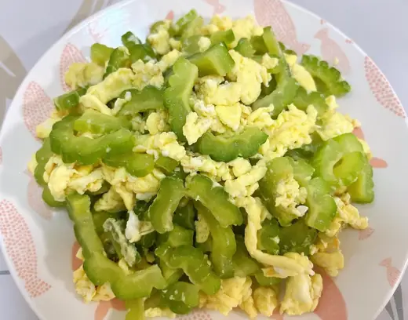
苦瓜炒鸡蛋
来源于下厨房 · 滑冰的鸡蛋黄- · 苦瓜炒鸡蛋🥚 · 非商业转载说明
第 1 步 · 处理苦瓜
本版选择焯水这一条路线，瓜片沥干再炒；不用把盐腌和焯水的用量叠加。
核对原页与实际步骤
主要资料：美食天下 · 莼菜虾仁
下厨房 · 滑冰的鸡蛋黄- · 苦瓜炒鸡蛋🥚
作者剔去苦瓜籽瓤，并列出盐腌冲洗或沸水处理两种做法。
App 步骤 苦瓜纵切，刮去籽和白瓤，切薄片。沸水焯到颜色变亮、片能弯折，捞出沥干，减少苦味也更容易炒匀。鸡蛋加一小撮盐打散；有葱切碎，备干净盘。

清炒莴笋
来源于下厨房 · Lark · 〖清炒莴笋〗｜超美味的家常菜做法 · 非商业转载说明
第 3 步 · 快炒
小灶先短腌莴笋后沥水，炒熟后再尝；已有底味时最后的盐只需少量。
核对原页与实际步骤
主要资料：美食天下 · 小岚私厨
下厨房 · Lark · 〖清炒莴笋〗｜超美味的家常菜做法
原方先炒香蒜末和椒，再下莴笋快炒，最后调味。
App 步骤 锅热放油，中大火下莴笋摊开翻炒，炒到颜色更透亮、最厚片熟透而仍脆。先尝一片再决定补不补盐，熟了立即盛出，别为等焦边一直炒。

清炒藕片
来源于下厨房 · 不是厨子的煮夫 · 清炒藕片 · 非商业转载说明
第 1 步 · 切藕
本版省去另锅焯水，用锅里少量水焖熟；藕片先切成相近厚度，洗掉淀粉并沥干。
核对原页与实际步骤
主要资料：美食天下 · 覀覀：ナ0ナ
下厨房 · 不是厨子的煮夫 · 清炒藕片
作者把藕切片后淘洗表面淀粉，再焯水、翻炒。
App 步骤 莲藕去皮，冲净孔洞里的泥沙，切成厚薄相近的薄片，清水快速冲掉表面淀粉后沥干。先把水和盐放手边；有姜葱再切好。
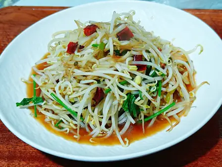
清炒绿豆芽
来源于下厨房 · 张记小灶 · 脆嫩爆炒绿豆芽｜不出水不软烂 快手家常菜 · 非商业转载说明
第 2 步 · 炒熟
将锅底与上层豆芽翻换，让整锅充分受热；锅小就分批，不照搬原作者的快炒分钟数。
核对原页与实际步骤
主要资料：美食天下 · 花鱼儿
下厨房 · 张记小灶 · 脆嫩爆炒绿豆芽｜不出水不软烂 快手家常菜
原方先把豆芽沥干，炒香配料后才倒豆芽，下锅后持续翻动。
App 步骤 热锅放油，中大火下豆芽，摊开并不断把底部翻到上面。量大分批炒，不只烫表面；持续加热到豆芽全部软下来、每处都滚烫，没有生硬豆腥。脆感可以留，但不能为了脆而半生出锅。

韭菜炒豆芽
来源于下厨房 · 厦门媳妇山城妹 · 韭菜炒豆芽 · 非商业转载说明
第 2 步 · 炒蔬菜
豆芽先下锅翻匀，充分受热后再放韭菜；最后一起炒熟，韭菜更容易保留香味。
核对原页与实际步骤
主要资料：美食天下 · 爱做饭的小媛媛
下厨房 · 厦门媳妇山城妹 · 韭菜炒豆芽
作者先把豆芽炒软再拌入韭菜，利用两种菜自身的水分。
App 步骤 锅热放油，先下沥干的豆芽，中大火翻动，把底部和上层不断换位。等豆芽均匀受热、明显变软再放韭菜。锅小就分批，菜能在锅里翻开。

白菜炖豆腐
来源于下厨房 · 多乐妈妈 · 白菜炖豆腐 · 非商业转载说明
原作者用调味汁炖白菜豆腐，成品颜色较深，小灶做法较清淡。
第 3 步 · 再炖白菜
本版走清炖路线，豆腐先小火炖，白菜帮先于叶入锅。用勺背轻推，避免把豆腐翻散。
核对原页与实际步骤
主要资料：美食天下 · 敏zhu
下厨房 · 多乐妈妈 · 白菜炖豆腐
原方先煎豆腐，炒软白菜后加入豆腐和料汁同炖。
App 步骤 先下白菜帮，略煮软后压入菜叶，参考再炖约 5 分钟。最厚菜帮能轻松咬断、豆腐中心热透才完成，不够软就继续煮；关火前尝汤少量加盐，盛时用勺托底。

家常麻婆豆腐
HowToCook 菜谱贡献者 · 麻婆豆腐 · Unlicense
第 2 步 · 炒底料
借鉴酱料处理和轻推豆腐；不照搬麻辣香锅复合调料。本版老豆腐、可省肉末与淀粉，是家常简化版，不宣称正宗或完整复刻。
核对原页与实际步骤
主要资料：美食天下 · 斋厨房
下厨房 · 奚姥姥 · 麻婆豆腐
豆瓣酱先切细，肉末与调料炒香，豆腐少翻动，末段以水淀粉收稠。
App 步骤 锅中放油，中火把可选牛肉末拨散炒熟，用食品温度计确认中心至少71°C；不用肉就从本步炒豆瓣酱开始。转小火下少量豆瓣酱，炒到油带红色、闻到酱香就加水，不炒成黑渣。半碗水先加大部分，煮开形成能围住豆腐的汤汁。
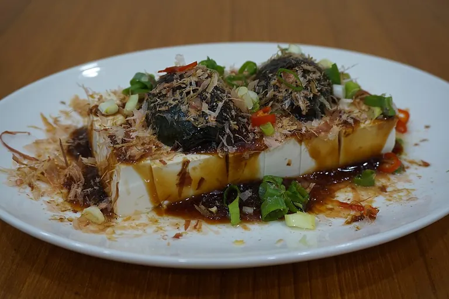
皮蛋豆腐
Tbatb · Tofu with Century Egg 01.jpg · CC BY-SA 4.0
第 1 步 · 准备豆腐
先按豆腐包装确认食用方式，需要加热的先煮透；沥水放凉后再摆盘淋汁。
核对原页与实际步骤
主要资料：HowToCook 中文开源菜谱 · HowToCook 社区贡献者
下厨房 · 斯佳丽 · 皮蛋豆腐
作者分别切豆腐和皮蛋，码在盘中，最后淋预先调好的汁。
App 步骤 先看嫩豆腐包装是否可直接食用、是否需加热，再按包装指示开封取出。需要加热的按说明煮熟，不确定就先煮熟；不把“嫩”当成即食。沥去水分，轻轻放进干净盘，碎成块也不影响吃。

凉拌金针菇
ulterior epicure · Cold enoki mushroom salad · CC BY-NC-ND
第 2 步 · 煮熟
菇团拆成细束再下沸水，确保全部彻底加热。沥干再淋汁，不用原方的固定短焯时间判断熟度。
核对原页与实际步骤
主要资料：HowToCook 中文开源菜谱 · HowToCook 社区贡献者
下厨房 · NB轮回 · 凉拌金针菇
原作者先煮金针菇等配菜，捞出后才与凉拌汁拌合。
App 步骤 足量水烧开再放菇，拨散让所有菌菇浸在沸水中。水重新沸腾后先按约 2 分钟提醒检查，遵守包装要求，继续煮到每束充分熟透；大团必须拆散，计时不代表安全，金针菇不能生食。

清蒸茄子
来源于下厨房 · 小米爱吃米 · 家常清蒸茄子 · 非商业转载说明
第 2 步 · 蒸软
茄块厚度尽量一致，用筷子戳最厚处；中心柔软后就能轻撕成条，调味汁分次拌。
核对原页与实际步骤
主要资料：美食天下 · 康康1818
下厨房 · 小米爱吃米 · 家常清蒸茄子
原方把茄子剖开，水开后入锅蒸，蒸软才撕条淋汁。
App 步骤 蒸锅加足水烧开，放稳盘子，盖好保持蒸汽不断。蒸到最厚处筷子能轻松穿透、内部没有硬白芯；只看外皮皱了不够。取盘避开蒸汽，倒去明显积水但留一点茄汁。
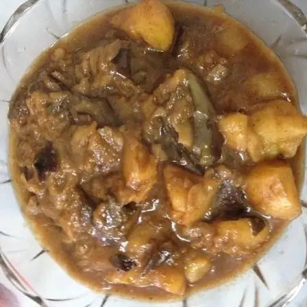
茄子炖土豆
来源于下厨房 · 夏小冷 · 茄子炖土豆（东北详细版） · 非商业转载说明
第 3 步 · 炖软
本版保留块形。焖到筷子能轻易穿过最厚土豆块再收汁，用勺背轻推茄子。
核对原页与实际步骤
主要资料：HowToCook 中文开源菜谱 · HowToCook 社区贡献者
下厨房 · 夏小冷 · 茄子炖土豆（东北详细版）
原作者把茄子先炒软，放入土豆加水同炖，末段还会压成泥。
App 步骤 加水到接近没过食材，煮开转小火盖好，让汤轻轻咕嘟。间或翻底，水少了但土豆还硬就补热水。到筷子能轻松穿过最大土豆块、茄子轻压就软再开盖。有蒜收尾放入煮出香气，尝熟汤再补少许生抽；留些稠汤拌饭，不必炖到全干。

清炒丝瓜
来源于下厨房 · 向你扔了一坨放心肉 · 清炒丝瓜🥒 · 非商业转载说明
第 3 步 · 加水煮软
锅底出现瓜汁后先停加水，观察最厚块的中心是否柔软。菜汁多时开盖稍收再调味。
核对原页与实际步骤
主要资料：美食天下 · 斌joanliu
下厨房 · 向你扔了一坨放心肉 · 清炒丝瓜🥒
原方将丝瓜削皮切块，中火翻炒至自身出水，再按软度出锅。
App 步骤 沿锅边先加一小口热水，中小火煮约 4 分钟起检查。最厚块熟软、轻压能分开即可，水干而芯还硬就少量补水再煮；最后加一小撮盐翻匀，尝味发现异常苦味整份丢弃。
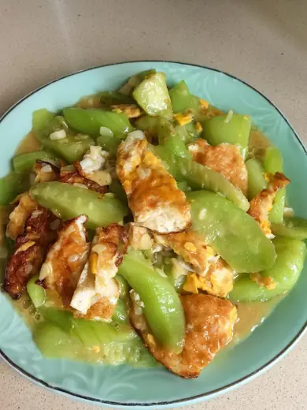
丝瓜炒鸡蛋
来源于下厨房 · 咖喱咖喱耶 · 丝瓜炒鸡蛋（家常菜） · 非商业转载说明
第 3 步 · 合炒
小灶先让瓜条熟软，汤汁过多先略收，再放回蛋块轻拌，这样两者都能保持口感。
核对原页与实际步骤
主要资料：美食天下 · 芊芊美食记WQ
下厨房 · 咖喱咖喱耶 · 丝瓜炒鸡蛋（家常菜）
作者先煎蛋盛出，底油炒丝瓜，再加回鸡蛋一起完成加热。
App 步骤 锅留底油，中火炒丝瓜，边缘透亮后若锅干就补一小口水，煮到最厚条熟软。先让过多汁水稍收，再回锅鸡蛋轻翻热透，少量补盐；有葱最后撒，发现丝瓜异常苦味则整份丢弃。

蒜蓉蒸金针菇
来源于下厨房 · E路拾缘 · 蒜蓉蒸金针菇 · 非商业转载说明
第 2 步 · 炒蒜蓉
蒜末闻到香味就离火，薄铺到拆散的菇束上；蒸到全熟后再用盘汁调味，避免蒜蓉发苦。
核对原页与实际步骤
主要资料：美食天下 · 鑫姐厨房
下厨房 · E路拾缘 · 蒜蓉蒸金针菇
原方沥干金针菇，利用锅中余温炒香蒜末，再把蒜蓉铺在菇上蒸。
App 步骤 小锅放少许油，小火下蒜末，慢慢翻到出香味、颜色仍浅就关小火，加入少量生抽拌匀。小米辣可同炒，不吃辣省略；蒜汁均匀铺在菇上，别只堆中心。

豆豉鲮鱼油麦菜
HowToCook 菜谱贡献者 · 豆豉鲮鱼油麦菜 · Unlicense
第 1 步 · 备菜去刺
先检查大块鱼肉的硬骨，豆豉分次放；本版菜叶先炒熟再合罐头，最后尝味决定是否加盐。
核对原页与实际步骤
主要资料：HowToCook 中文开源菜谱 · HowToCook 社区贡献者
下厨房 · -孙小碗- · 豆豉鲮鱼油麦菜
作者先挑掉鲮鱼中间的骨头、掰成小块，并留用罐头里的豆豉。
App 步骤 油麦菜逐片洗净沥干，切好夹的段，粗梗和叶分开放。罐头先看包装正常、未胀罐漏液，打开后检查并拣出明显硬刺，鱼分小块；不要默认罐头鱼完全无刺。有蒜切末。
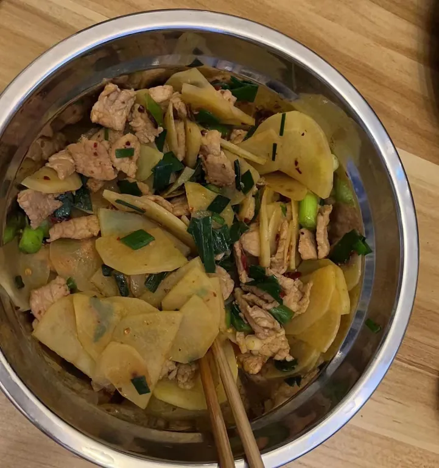
土豆片炒肉
HowToCook 菜谱贡献者 · 瘦肉土豆片 · Unlicense
第 1 步 · 切配
小灶把土豆先短焯再合肉，切片尽量一样厚，能弯而不碎时捞出，避免与肉片久炒。
核对原页与实际步骤
主要资料：HowToCook 中文开源菜谱 · HowToCook 社区贡献者
下厨房 · 飞翔吧咏儿 · 土豆片炒肉
作者把土豆切成薄片并冲洗表面淀粉，再与薄肉片炒熟。
App 步骤 土豆去皮切约2毫米薄片，厚薄接近就行；蒜苗有则切段。肉切薄片，拌部分生抽，有淀粉薄薄裹一层，冷藏腌约10分钟。先切菜再用生肉专用刀板切肉，最后洗净手和用具。
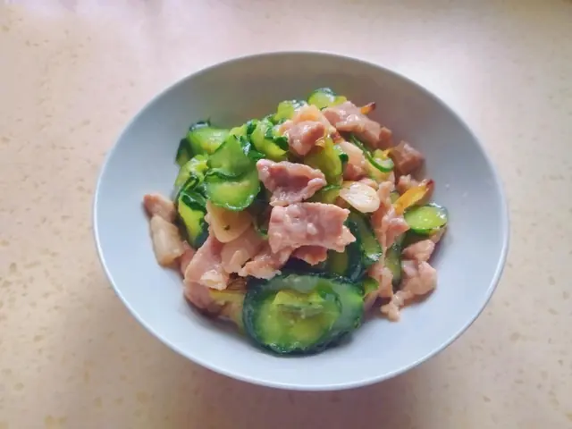
黄瓜炒肉
来源于下厨房 · athe · 黄瓜炒肉 · 非商业转载说明
第 3 步 · 炒黄瓜
本版直接用鲜瓜片，先沥干表面水。肉片确认熟透再加瓜片，只需炒到瓜边略软即可盛出。
核对原页与实际步骤
主要资料：HowToCook 中文开源菜谱 · HowToCook 社区贡献者
下厨房 · athe · 黄瓜炒肉
原方黄瓜盐腌后挤水，肉先炒出锅，快炒黄瓜后让肉回锅。
App 步骤 肉熟后下黄瓜，翻到每片沾上肉汁、边缘稍软但中间仍脆爽即可；别让黄瓜陪肉煮很久。尝一片熟肉与黄瓜，再决定是否补一小撮盐。黄瓜出一点汁正常，够味就出锅，不用炒到干巴巴。

洋葱炒肉片
来源于下厨房 · 晏。 · 洋葱炒肉（甜面酱版） · 非商业转载说明
作者用甜面酱炒洋葱和猪肉，颜色较深。小灶用生抽调味。
第 3 步 · 炒洋葱合锅
本版按洋葱的软度决定合锅时机，肉片已熟只需回温；甜面酱不是本版必需调料。
核对原页与实际步骤
主要资料：HowToCook 中文开源菜谱 · HowToCook 社区贡献者
下厨房 · 狗尾巴草 · 洋葱小炒肉
原方先炒肉片盛出，洋葱丝变软、边缘透亮时再加肉回锅。
App 步骤 原锅用余油炒洋葱，到片子柔软、边缘半透明且闻到甜香，再少量淋生抽。想更甜软就中小火多翻一会儿，不用强求焦边。放回熟肉拌热，黑胡椒、番茄酱有且喜欢再少加；尝后调整，酱能润住洋葱就关火。
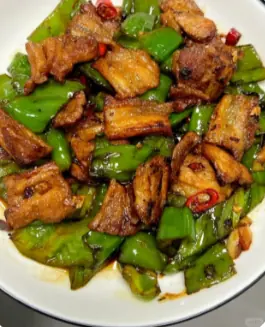
青椒炒肉
来源于下厨房 · 酸奶口味 · 青椒炒肉 · 非商业转载说明
第 2 步 · 先煸青椒
本版先煸青椒再炒肉，青椒表面起皱就盛出；留意辣椒厚度，按实际状态调整火候。
核对原页与实际步骤
主要资料：HowToCook 中文开源菜谱 · HowToCook 社区贡献者
下厨房 · 酸奶口味 · 青椒炒肉
原作者把五花肉与青椒分别煎煸，看到椒皮有焦斑后回锅调味。
App 步骤 青椒下锅中小火翻动、轻压，让它变软并出现少量浅褐斑就先盛出。用不粘锅时抹一层薄油，不空锅干烧，也不追求满皮焦黑。厚肉椒需要久一点，薄皮椒更快。
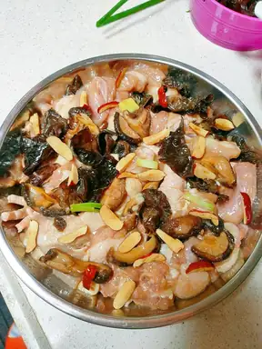
香菇蒸鸡
来源于下厨房 · 番茄无心 · 广东传统家常菜:香菇蒸鸡 · 非商业转载说明
香菇与鸡肉蒸熟后的装盘参考，原作者另加了红枣等配料。
第 2 步 · 铺盘蒸
本版用鲜香菇与去骨鸡腿，不沿用冲洗生鸡或固定 15–20 分钟即可熟的假设；蒸后测几块最大鸡肉中心，均到 74°C 才取出。
核对原页与实际步骤
主要资料：美食天下 · fangqao
下厨房 · EllieKongSG · 广式家常菜香菇蒸鸡，鲜嫩又方便百吃不厌
宽浅盘单层平铺，避免鸡块重叠，开水上锅。
App 步骤 鸡肉和香菇在耐热浅盘单层摊开，鸡块不重叠，不堆成小山；中间略薄，香菇别整层压住鸡肉。蒸锅水开且蒸汽足后入盘，盖好持续蒸，先设15分钟提醒。盘厚、肉块大需更久；查看水位，补水沿锅边加热水，别淋进鸡盘。
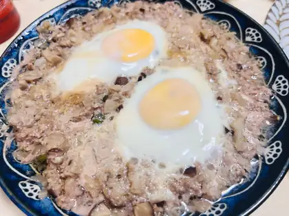
肉饼炖蛋
来源于下厨房 · 绯喵喵 · 肉饼炖蛋 · 非商业转载说明
第 2 步 · 铺成薄饼
肉饼铺成均匀薄层，压窝时把四周的厚肉摊开；出锅前测最厚肉心并确认鸡蛋全熟。
核对原页与实际步骤
主要资料：HowToCook 中文开源菜谱 · HowToCook 社区贡献者
下厨房 · 绯喵喵 · 肉饼炖蛋
作者把拌好的肉末铺平，在中间压出浅窝打蛋，再入蒸锅。
App 步骤 用宽浅耐热盘把肉馅铺成厚薄均匀的薄饼，约一厘米上下即可，不堆厚。中间压一个浅窝，打入另一个蛋，别把肉挤成四周很厚的墙；饼面不平也不影响吃。
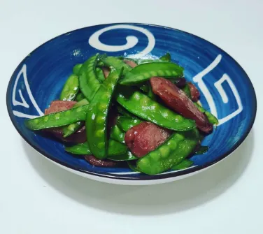
荷兰豆炒腊肠
HowToCook 菜谱贡献者 · 荷兰豆炒腊肠 · Unlicense
第 3 步 · 炒匀
确认腊肠包装要求，生制品先按说明做熟。荷兰豆全熟后再合锅，先尝腊肠咸味再决定是否补盐。
核对原页与实际步骤
主要资料：HowToCook 中文开源菜谱 · HowToCook 社区贡献者
下厨房 · pepperandpineapple · 荷兰豆炒腊肠
原方先焯荷兰豆，腊肠斜切薄片炒香，再把荷兰豆倒回锅中。
App 步骤 锅中薄油，小火炒熟腊肠，到香气出来、边缘略卷就下荷兰豆。中火翻到整锅热透，腊肠的油香均匀裹在豆荚上就停。先尝豆荚和腊肠一起的味道，缺味才少量加生抽，通常不再放盐。
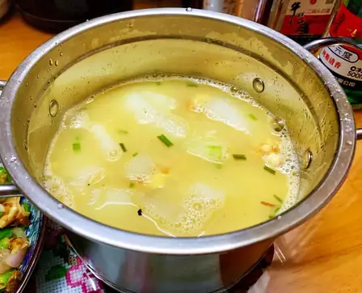
冬瓜虾皮汤
来源于下厨房 · 透明小果冻 · 冬瓜虾皮汤 · 非商业转载说明
第 2 步 · 炒后加水
汤底保留虾皮香味，略炒出香就加水；瓜片厚薄均匀，待中心也透亮再尝汤调盐。
核对原页与实际步骤
主要资料：美食天下 · 米拉Miira
下厨房 · 透明小果冻 · 冬瓜虾皮汤
作者将冬瓜去皮去瓤切薄，先炒香虾皮，再加水煮瓜片。
App 步骤 锅中少油中小火炒虾皮，有姜一同放，闻到香味就放冬瓜翻匀，不把虾皮煎焦。加约1–2碗水煮开，水量够喝就行。

黄瓜皮蛋汤
来源于下厨房 · 胃你够了 · 黄瓜皮蛋汤 · 非商业转载说明
第 2 步 · 煎香煮汤
皮蛋底边定形再轻轻翻。热水沿锅边慢慢倒，等汤底有味再下瓜片，保留清爽口感。
核对原页与实际步骤
主要资料：HowToCook 中文开源菜谱 · HowToCook 社区贡献者
下厨房 · sissith · 黄瓜皮蛋汤
原方将皮蛋切瓣小火略煎，添热水煮汤，黄瓜在后段加入。
App 步骤 锅中油中小火加热，下皮蛋让表面略定形再翻，有蒜一起短煎出香，蒜不要煎黑。沿锅边慢慢加约500毫升水，避开蒸汽，煮开。

金针菇清汤
webmasterHCS · enoki-egg-drop-soup · CC BY-SA
金针菇蛋花清汤实拍，参考加蛋版本。作者撒了少量葱花。
第 2 步 · 煮熟菌菇
本版去掉番茄底，将拆散的菇束与清水同煮，确保每束都浸在汤里。全锅持续受热、菇束彻底熟透后调味。
核对原页与实际步骤
主要资料：HowToCook 中文开源菜谱 · HowToCook 社区贡献者
下厨房 · 心灵手巧常 · 🔥低脂低卡好喝到爆炸的番茄金针菇汤
参考番茄金针菇汤里煮菇的次序：先让汤滚，再放去根的金针菇煮软。
App 步骤 菇和水入锅煮开，拨松让每一撮都浸在汤中。重新沸腾后约3分钟起检查，持续加热至全熟；时间只是提醒，不能用刚倒入的热汤烫一下代替煮。

玉米排骨汤
HowToCook 菜谱贡献者 · 玉米排骨汤 · Unlicense
第 2 步 · 慢炖
本版把玉米和焯过的排骨一同炖，汤面持续冒小泡。排骨软烂、玉米芯附近的籽粒煮透再调味。
核对原页与实际步骤
主要资料：HowToCook 中文开源菜谱 · HowToCook 社区贡献者
下厨房 · 云卷云姝 · 排骨玉米汤
作者排骨冷水下锅焯水、撇沫，换水炖排骨，中途再放鲜玉米。
App 步骤 排骨玉米放汤锅，加约1升热水煮开后转小火，只保持小泡连续冒出。先炖约20分钟，盖子留适当缝，期间检查水量，快露出食材时补热水，不让烧干。

海带豆腐汤
来源于下厨房 · 大栾栾 · 海带豆腐汤 · 非商业转载说明
原作者的海带豆腐汤另加虾仁等配料；这里参考海带与豆腐的大小和汤色。
第 3 步 · 煮豆腐
小灶省去虾仁。试一片厚海带是否已软；再把豆腐轻轻滑入汤里，保持微滚让中心热透。
核对原页与实际步骤
主要资料：美食天下 · 卤蛋厨房
下厨房 · 大栾栾 · 海带豆腐汤
原作者把泡发海带切段，水开后先入海带，再放内酯豆腐。
App 步骤 豆腐沿碗边滑入，轻推而不猛翻，约10分钟起检查：海带能咬断、豆腐中心热透。厚海带按包装延长，豆腐已经热可先盛出。最后尝汤再少量加盐，有葱再撒。
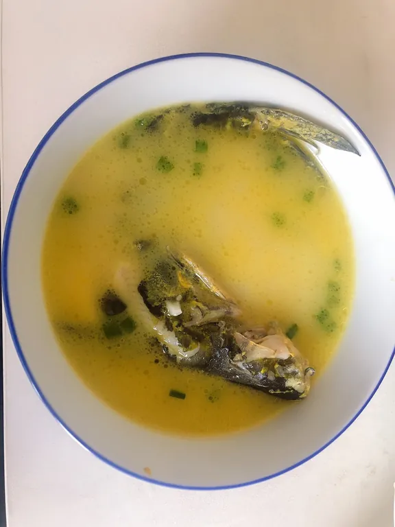
昂刺鱼豆腐汤
HowToCook 菜谱贡献者 · 昂刺鱼豆腐汤 · Unlicense
第 2 步 · 煎后煮汤
鱼表面擦干、下锅摊稳，底面能推动再翻。加汤后减少翻动，到点检查厚处鱼肉，别只看汤色。
核对原页与实际步骤
主要资料：HowToCook 中文开源菜谱 · HowToCook 社区贡献者
下厨房 · 西柚 · 昂刺鱼炖豆腐
作者让店家处理昂刺鱼，先小火将鱼的两面略煎，再和豆腐加水同炖。
App 步骤 锅中放油中火加热，鱼轻放入后先别推动，表面定形能松动再翻面，有姜一起煎香。沿边慢慢加约1升热水，避开溅油，保持沸腾约10分钟，留意水量；不用把不粘锅空烧冒烟。

番茄炒虾仁
来源于下厨房 · 糯米小桃子酱 · 番茄虾仁 · 非商业转载说明
第 3 步 · 炒番茄合锅
把时间留给番茄。虾仁已炒熟后先等在干净盘里，汤汁能挂住锅铲时再回锅裹汁。
核对原页与实际步骤
主要资料：美食天下 · 金娃美食
下厨房 · 糯米小桃子酱 · 番茄虾仁
作者先炒虾盛起，再把番茄丁边压边炒出汁，最后让虾回锅。
App 步骤 原锅少油，小火炒香可选蒜末，再中火炒番茄，加一小撮盐帮助出汁。到丁块塌软、铲子轻压能出红汁，偏干补一两汤匙水；汁太稀先煮浓。熟虾回锅拌匀热透，尝味后补盐，汁润着虾即可，不让虾长时间陪番茄收汁。
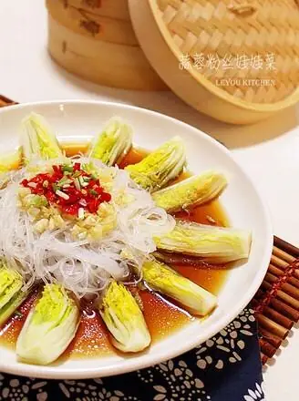
蒜蓉粉丝蒸娃娃菜
来源于下厨房 · 玥月superman · 蒜蓉粉丝蒸娃娃菜 · 非商业转载说明
第 2 步 · 摆盘
本版把厚菜帮切薄，粉丝铺松后淋入少量料汁和水；蒸好同时检查菜帮和盘底粉丝的软硬。
核对原页与实际步骤
主要资料：美食天下 · RLing
下厨房 · 玥月superman · 蒜蓉粉丝蒸娃娃菜
原方把粉丝泡开，娃娃菜切瓣，摆盘后浇蒜蓉调汁一起蒸。
App 步骤 菜帮和叶薄薄铺在粉丝上，不压成厚实一堆。撒蒜末，淋少许油，生抽先淋少量；若粉丝已沥得很干，沿盘边加一两汤匙清水帮助受热，别让整盘漂在水里。

清蒸红薯
GeorgeTan#5 · Simple breakfast - steamed sweet potatoes · CC CC0
第 2 步 · 蒸红薯
小灶使用普通蒸锅，水面低于蒸架。选大小接近的红薯，最厚处也能轻松穿透时才出锅。
核对原页与实际步骤
主要资料：美食天下 · 花式炒咸菜
下厨房 · 桃之灰灰 · 蒸红薯（红薯最营养的吃法——电高压锅版本）
原作者洗净红薯后，放在蒸架上，水加在蒸架下方，用电高压锅蒸。
App 步骤 蒸锅加足量水但不碰到红薯，水开后盖盖中火保持稳定蒸汽。设30分钟提醒检查，不是熟透保证；期间水不足需避开蒸汽补热水，不能干烧。
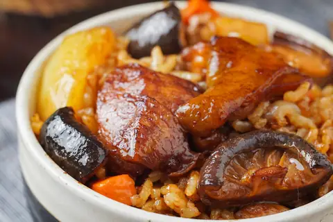
香菇鸡肉焖饭
来源于下厨房 · 日食记 · 〖香菇鸡肉焖饭〗 · 非商业转载说明
第 2 步 · 炒香配料
炒香鸡块后加入本版的香菇和可选蔬菜；鸡肉上色后还要继续随饭煮，开盖时检查鸡肉中心。
核对原页与实际步骤
主要资料：美食天下 · 桃子所
下厨房 · 日食记 · 〖香菇鸡肉焖饭〗
原方将去骨鸡腿先和洋葱煸炒，加香菇、蔬菜和米，再交给电饭煲焖熟。
App 步骤 少油中火，有姜先炒香，鸡丁和香菇下锅拨散，有胡萝卜丁也一起下锅，炒到鸡肉外层变色、香菇变软出香。生抽先少量放；带少量汁铺在米上，不再随意加一碗水，也不把配料压实搅到底。外层变色不代表鸡心已熟。
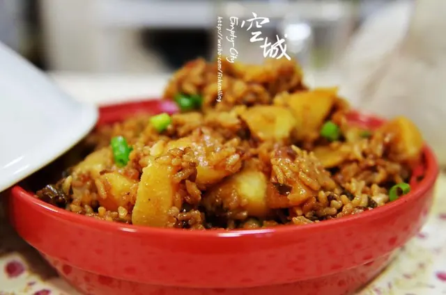
土豆焖饭
来源于下厨房 · 此处是空城 · 土豆焖饭（电饭锅版） · 非商业转载说明
第 2 步 · 煎炒土豆
土豆只需煎出香味，随后与米一起焖熟。锅内水按电饭煲刻度，起锅前检查土豆中心。
核对原页与实际步骤
主要资料：美食天下 · 花桑卓玛
下厨房 · 此处是空城 · 土豆焖饭（电饭锅版）
原作者将土豆切成小块并沥干，先在炒锅将边角煎黄，再与生米同煮。
App 步骤 少油中火炒土豆，有葱姜可先炒香。炒到表面出现几处浅金黄色即可，不要求每一面都上色；盐先少量加，生抽喜欢再放，避免焦黑。
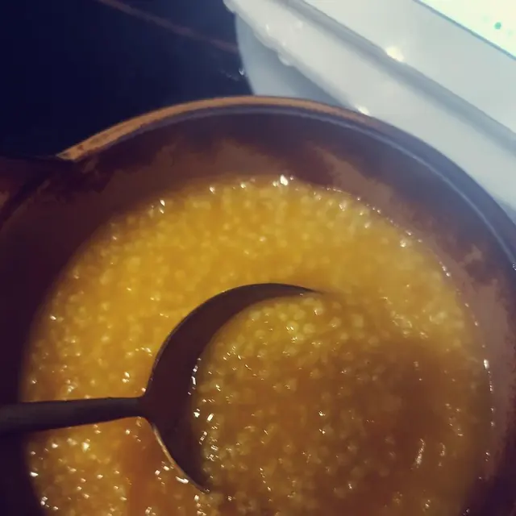
南瓜粥
来源于下厨房 · 丽丽娟子的美食 · 小美版养生小米南瓜粥 · 非商业转载说明
原图用小米煮南瓜；本版以大米为主，小米可选，粥粒会稍大。
第 1 步 · 准备谷物
本版用普通锅，南瓜厚薄一致更易软。根据粥的稠度和瓜块的软度停火，不套用压力锅时间。
核对原页与实际步骤
主要资料：美食天下 · 金娃美食
下厨房 · 心灵做菜 · 南瓜粥（原味）
原方南瓜先切小块，再和洗净的米放进压力锅，利用南瓜本身的甜味。
App 步骤 大米淘洗，南瓜去皮去瓤切相近小丁；小米和去核红枣有且喜欢再备。按人数取米，普通锅加足量水并留沸腾空间，宁可稀些后收，别把锅装满。

鸡蛋面糊饼
来源于下厨房 · 长点肉吧 · 鸡蛋面糊饼 · 非商业转载说明
第 2 步 · 摊薄饼
小灶将蛋拌入面糊，用平底锅薄摊。面糊一次少舀，边缘能揭起、表面基本定形再翻。
核对原页与实际步骤
主要资料：美食天下 · 果妈美食坊
下厨房 · 长点肉吧 · 鸡蛋面糊饼
作者在电饼铛上刷薄油，舀入一勺面糊，刮平定形后再淋蛋。
App 步骤 平底锅薄刷油，中小火倒一小勺面糊，转锅或用勺背摊成薄层。边缘定形、表面由湿亮变暗、铲子能伸入底部时再翻；第一张小一点更好掌握。
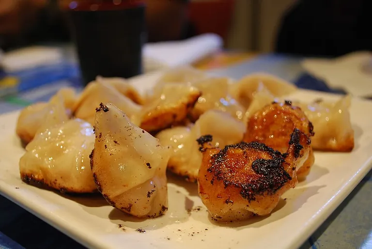
懒人水煎饺
avlxyz · 煎饺 Fried dumplings - Shanghai Noodle AUD7.50 for 15.jpg · CC BY-SA 2.0
第 2 步 · 加水焖熟
先核对包装适用做法，按大小调整水和焖的时间。确认馅熟透后再开盖煎脆，底部颜色只说明上色。
核对原页与实际步骤
主要资料：HowToCook 中文开源菜谱 · HowToCook 社区贡献者
下厨房 · 3N的小披风 · 平底锅煎速冻饺子
作者把速冻饺子放入平底锅，先煎、加水盖焖，待水干再煎底。
App 步骤 按包装加水，通常约到饺子一半高，盖锅煮约8–10分钟起检查，10分钟提醒不是熟透保证。水不够时降火沿边小心补热水。用食品温度计测较大饺子馅心：猪牛肉末至少71°C，含鸡禽肉至少74°C；未达温继续盖锅加热。

皮蛋瘦肉粥
Peachyeung316 · A century eggs and Pork Congee from Chi Kee Congee Shop.jpg · CC BY-SA 4.0
第 3 步 · 检查调味
本版用电饭煲同煮，放肉时先抖开成团的肉丝；开盖既要看粥稠度，也要确认肉已热透。
核对原页与实际步骤
主要资料：HowToCook 中文开源菜谱 · HowToCook 社区贡献者
下厨房 · 尚食之文 · 皮蛋瘦肉粥
原作者把肉切丝并拨散、皮蛋切丁，等米粥变稠再将其合入粥中。
App 步骤 程序结束先看米粒是否软烂，用勺拆开肉丝团，确认内外熟透；用食品温度计确认这份含肉料理中心至少74°C。未达温重新有效加热。盐少量尝后补，有葱胡椒再加；稠了补热水后再煮开。

凉拌海带丝
来源于下厨房 · 岩岩爱吃肉 · 凉拌海带丝 · 非商业转载说明
第 2 步 · 煮海带
干海带、盐渍海带分别按包装泡发或脱盐，煮到合适软度再沥水；少量淋汁，尝完再补。
核对原页与实际步骤
主要资料：美食天下 · 丽彩（五谷杂粮）
下厨房 · 岩岩爱吃肉 · 凉拌海带丝
作者先泡发海带丝并煮制，捞出控水才拌蒜香料汁。
App 步骤 水沸后下已处理海带，拨散煮，先约 5 分钟起检查，并优先满足包装的煮制要求。厚丝继续煮到熟、咬得断又有韧性；用干净漏勺捞起沥水，不用生水冲凉。

清蒸山药
来源于下厨房 · 简单篮子 · 快手清蒸山药 · 非商业转载说明
第 2 步 · 蒸熟
小灶以普通蒸锅为准，按厚度切匀。筷子从最厚处穿进中心没有硬芯，才夹出装盘。
核对原页与实际步骤
主要资料：美食天下 · gaopingzhao
下厨房 · 简单篮子 · 快手清蒸山药
原方把山药削皮切段装盘，可随饭蒸，也可水开后架在蒸锅中。
App 步骤 蒸锅加足水烧开，放稳盘子，盖好转到能保持蒸汽的火力，参考蒸约 30 分钟。中途留意水量，若需补水用热水并避开蒸汽，不能把锅烧干。
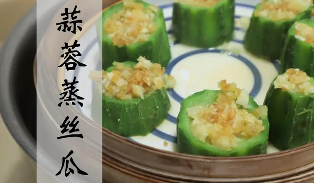
蒜蓉蒸丝瓜
来源于下厨房 · 高冷鱼大人 · 〖广东家常菜〗脆嫩爽口的蒜蓉蒸丝瓜，真的绝绝子！ · 非商业转载说明
第 2 步 · 摆盘调味
本版可直接用碎蒜铺盘，分散在大小接近的丝瓜块上，每块都有蒜香；厚块仍要检查熟度。
核对原页与实际步骤
主要资料：美食天下 · lin悠然
下厨房 · 高冷鱼大人 · 〖广东家常菜〗脆嫩爽口的蒜蓉蒸丝瓜，真的绝绝子！
原方把蒜切碎，一半先炒香再拌余下的蒜，分放在丝瓜上蒸。
App 步骤 丝瓜平铺耐热盘，片间留点缝，蒜蓉分散铺上，均匀撒一小撮盐、淋少许油。别把盐集中在几片上，也不提前腌很久，以免出大量水。

香煎鸡胸肉
来源于下厨房 · 执剑踏云 · 香煎鸡胸肉 · 非商业转载说明
第 2 步 · 小火煎
把厚处片薄，留出间隙再煎。颜色用于决定翻面，出锅要测最厚部位中心达到 74°C。
核对原页与实际步骤
主要资料：美食天下 · 晚妈美食
下厨房 · 执剑踏云 · 香煎鸡胸肉
作者把鸡胸切片腌味，平底锅刷薄油，小火煎到两面上色。
App 步骤 不粘锅放薄油，中小火到油可流动但不冒烟，下鸡片摊开留空隙，锅小分批。一面浅金黄、可轻推时翻面，继续温和加热；不要一直用铲子压挤肉汁。两面金黄只是外观，还要检查中心。
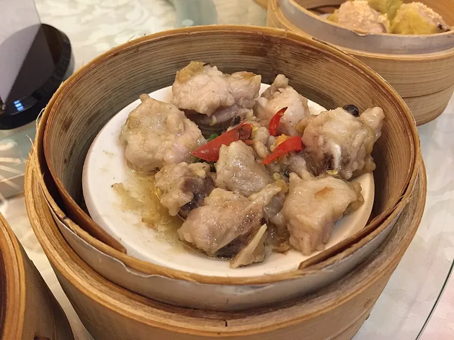
豉汁蒸排骨
bryan... from Taipei, Taiwan · Food 豉汁蒸排骨, 新葡苑, Shin Pu Yuan, 台北 (21531923392).jpg · CC BY-SA 2.0
第 2 步 · 铺盘蒸
同一盘骨块尽量一样大并单层摆放，避免中间堆高。豆豉本身咸，蒸熟尝味后再决定是否补盐。
核对原页与实际步骤
主要资料：HowToCook 中文开源菜谱 · HowToCook 社区贡献者
下厨房 · 梓晴 · 豉汁蒸排骨
原方将豆豉切碎拌小排骨，使用浅盘平铺，水烧开后上锅蒸。
App 步骤 排骨在耐热浅盘单层摆开，不叠在一起。水开、蒸汽足再放盘，盖好保持沸腾，先设20分钟提醒检查。大块需要更久；锅水将少沿边补热水，别烧干。蒸得久一些会更软，但不是到点就一定能吃。

清炒平菇
来源于下厨房 · 吼吼哈嘿嘿 · 超简单的清炒平菇 · 非商业转载说明
平菇炒软后的样子，原作者的版本另加了彩椒。
第 2 步 · 炒熟
小灶直接炒菇，薄撕成条，先让水汽逸出，再观察较厚菇柄是否熟软，最后才收汁。
核对原页与实际步骤
主要资料：美食天下 · 小乙美食
下厨房 · 吼吼哈嘿嘿 · 超简单的清炒平菇
原方把平菇先焯水沥干，再与蒜和蔬菜同炒。
App 步骤 锅放油，中小火炒蒜至有香味、未变褐，没有蒜直接下菇。转中火把菇拨散翻炒，出水后保持加热，翻到每片受热，直到菌柄也熟软、全部热透；不把刚塌软当作熟透。

凉拌豆腐皮
Gary Soup · Cucumber-tofu skin salad at China North Dumpling · CC BY
第 1 步 · 煮豆腐皮
按手中豆腐皮的品种和包装要求煮透；拌汁前沥去水，黄瓜丝最后合入，调味更均匀。
核对原页与实际步骤
主要资料：美食天下 · 香香的小厨房
下厨房 · 周周萌萌 · 凉拌千张
原方先把千张放进沸水煮，再沥水、切丝、调味。
App 步骤 先确认是本菜用的湿豆腐皮，不是需要长时间泡发的干腐竹；按包装处理后切细丝。水沸下锅，拨散煮约 3 分钟起检查，依包装继续煮到熟透、柔软；用干净漏勺捞出沥干，不用生水冲凉。

蒜香黄油牛排
来源于HowToCook · HowToCook 社区贡献者 · 牛排成品参考 · HowToCook 仓库 Unlicense；保留来源
来源作者的成品参考；配料、摆盘与本版家常做法可能不同。
整道菜的做法核对（补充资料的采用范围见下方）
先煎牛排外壳，再降火浇黄油。厚度按 2–3 厘米；不用薄火锅肉片替代。
核对原页与实际步骤
主要资料：HowToCook · HowToCook 社区贡献者（逐页提交记录见原页）
RecipeTin Eats · Nagi · How to Cook Steak - like a chef! - RecipeTin Eats
核对厚切牛排先煎上色、降火加黄油浇淋和静置的方法；中心熟度另以食品安全来源复核。
App 步骤 1. 擦干调味：牛排450克、盐2克、黑胡椒粉1克。不开火。冷藏解冻后用纸吸干牛排两面，撒盐和黑胡椒；蒜拍裂。生熟刀板分开。表面没有明显水珠。
2. 煎出外壳：食用油15毫升、全部牛排。中大火。锅热后加油，牛排平铺，每面先煎约2分钟，再按厚度继续煎；不要反复按压。表面褐色，能自然离锅再翻面。
3. 浇黄油并测温：无盐黄油20克、蒜3瓣。转中小火。加入黄油和蒜，锅稍倾斜，用勺反复浇汁；用食品温度计测最厚处，不足就继续煎。中心达到63°C；黄油起泡但不焦黑。
4. 静置切片：煎好的牛排和锅中肉汁。关火。放到干净盘中静置至少3分钟，再逆纹切片，把肉汁淋回。静置完成后再切，不能省略。
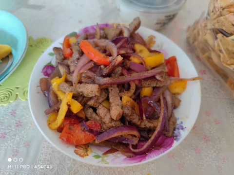
黑椒牛柳
来源于HowToCook · HowToCook 社区贡献者 · 黑椒牛柳成品参考 · HowToCook 仓库 Unlicense；保留来源
来源作者的成品参考；配料、摆盘与本版家常做法可能不同。
整道菜的做法核对（补充资料的采用范围见下方）
牛柳逆纹切，分批炒才不容易出水。彩椒可换青椒；黑胡椒是这道菜的主要风味。
核对原页与实际步骤
主要资料：HowToCook · HowToCook 社区贡献者（逐页提交记录见原页）
The Woks of Life · Bill · How to Velvet Beef for Stir-fry - The Woks of Life
核对牛肉逆纹切、薄浆腌制和分批预炒的方法，不将嫩化剂或原文生肉冲洗引入本版。
App 步骤 1. 切条腌肉：牛里脊300克、生抽5毫升、淀粉3克、油5毫升。不开火。牛肉逆纹切5毫米厚条，拌入腌料冷藏10分钟；洋葱和彩椒切条。条状厚薄相近，肉表面裹薄浆。
2. 调汁炒肉：生抽10毫升、淀粉3克、黑胡椒2克、水40毫升；油10毫升。中大火。先调匀酱汁；油热后分批摊开牛柳煎炒，表面变色后盛到暂存盘，后面还要回锅煮透。锅底有煎香的薄褐色，肉不是泡在水里。
3. 合炒收汁：洋葱100克、彩椒150克、余油5毫升、全部牛柳和酱汁。中火。炒蔬菜约3分钟至略软；回锅牛柳，重新搅匀酱汁倒入，煮到肉熟透。食品温度计测厚肉条达到63°C，离火静置至少3分钟后吃。酱汁薄薄包住牛柳；未达温度继续加热。

小炒黄牛肉
来源于HowToCook · HowToCook 社区贡献者 · 小炒黄牛肉成品参考 · HowToCook 仓库 Unlicense；保留来源
来源作者的成品参考；配料、摆盘与本版家常做法可能不同。
整道菜的做法核对（补充资料的采用范围见下方）
芹菜先炒，牛肉回锅时快速合匀。小米辣可减为1根；泡椒本身含盐，先不另加盐。
核对原页与实际步骤
主要资料：HowToCook · HowToCook 社区贡献者（逐页提交记录见原页）
The Woks of Life · Bill · How to Velvet Beef for Stir-fry - The Woks of Life
核对牛肉逆纹切、薄浆腌制和分批预炒的方法，不将嫩化剂或原文生肉冲洗引入本版。
App 步骤 1. 准备小炒料：牛里脊300克、生抽5毫升、淀粉5克；全部蔬菜。不开火。牛肉逆纹切薄片，拌生抽和淀粉冷藏10分钟；芹菜切3厘米段，辣椒切圈，香菜切段。肉片不成大团，菜切好再开火。
2. 分批炒肉：油10毫升、腌好的牛肉。中大火。摊开肉片分两批炒至表面变色，盛出待回锅；暂存盘不能直接用来盛成品。肉片散开，锅中不大量积水。
3. 炒芹菜合锅：余油10毫升、芹菜150克、泡椒20克、小米辣2根、生抽10毫升、水30毫升、香菜10克。中火。先炒芹菜和辣椒约3分钟，加入牛肉、生抽和水煮透。食品温度计测厚肉片达到63°C后关火拌香菜，静置至少3分钟再吃。芹菜可弯曲，肉片熟透，锅底留少量汁。

广式萝卜牛腩
来源于HowToCook · HowToCook 社区贡献者 · 广式萝卜牛腩成品参考 · HowToCook 仓库 Unlicense；保留来源
来源作者的成品参考；配料、摆盘与本版家常做法可能不同。
整道菜的做法核对（补充资料的采用范围见下方）
牛腩先炖软，再加萝卜避免煮散。南乳与柱侯酱已咸，本版不另加盐；使用普通炖锅。
核对原页与实际步骤
主要资料：HowToCook · HowToCook 社区贡献者（逐页提交记录见原页）
The Woks of Life · Judy · Chinese Braised Beef Stew with Daikon - The Woks of Life
核对牛肉先炖软、根菜后加及保留汤量的方法；不把牛肉配方直接当作羊肉或其他汤的定量来源。
App 步骤 1. 焯牛腩备料：牛腩500克、姜10克、葱1根；白萝卜400克。大火煮开。牛腩切3厘米块，冷水没过肉，加姜和葱，沸后煮3分钟撇沫捞出沥干；萝卜切3厘米块。浮沫捞净，肉块表面沥干。
2. 炒香酱料：油10毫升、姜10克、蒜4瓣、南乳15克、柱侯酱20克、生抽10毫升、糖8克。中小火。先炒姜蒜，再放牛腩和压碎的南乳及其余酱料翻匀；酱料易糊，要不停铲底。闻到酱香，锅底没有焦黑。
3. 小火炖牛腩：水约900毫升、八角1个。煮沸后小火。水加至略没过肉，加盖轻沸炖约2小时；每20分钟翻动检查，水低于肉一半时补热水100毫升。牛腩可用筷子穿入，仍硬就继续炖。
4. 加萝卜炖软：白萝卜400克。小火。放萝卜炖约30分钟，再检查牛腩；萝卜中心无硬芯后开盖稍收汁，夹出八角。牛腩软而不散，萝卜半透明，留汁拌饭。

番茄土豆炖牛肉
来源于HowToCook · HowToCook 社区贡献者 · 西红柿土豆炖牛肉成品参考 · HowToCook 仓库 Unlicense；保留来源
来源作者的成品参考；配料、摆盘与本版家常做法可能不同。
整道菜的做法核对（补充资料的采用范围见下方）
番茄先炒出汁，土豆留到后段。采用普通炖锅，不沿用原文压力锅时间；土豆不要一开始就放。
核对原页与实际步骤
主要资料：HowToCook · HowToCook 社区贡献者（逐页提交记录见原页）
The Woks of Life · Judy · Chinese Braised Beef Stew with Daikon - The Woks of Life
核对牛肉先炖软、根菜后加及保留汤量的方法；不把牛肉配方直接当作羊肉或其他汤的定量来源。
App 步骤 1. 切块焯肉：牛腩500克、姜10克；全部蔬菜。大火。牛腩切3厘米块冷水下锅，沸后撇沫煮3分钟捞出；番茄切块、洋葱切丁、土豆切3厘米块。肉沥干，土豆暂泡清水防变色。
2. 炒出番茄汁：油15毫升、洋葱150克、番茄400克。中火。先炒洋葱至半透明，加番茄炒约5分钟；用铲背轻压番茄，再加入牛腩。番茄变软出红汁，不是干块。
3. 炖软牛肉：生抽15毫升、糖5克、水900毫升。煮开转小火。加盖轻沸炖90分钟，每20分钟检查并翻动，缺水时每次补热水100毫升；肉仍硬可再炖30分钟。筷子能穿进肉块后再放土豆。
4. 土豆入锅：沥干的土豆300克、盐先1克，余1克尝后加。小火。炖20–30分钟，轻推避免土豆破碎；肉和土豆都软后尝汁，按需要加余盐。土豆中心无硬芯，汤汁略浓即可。

酱牛肉
来源于HowToCook · HowToCook 社区贡献者 · 酱牛肉成品参考 · HowToCook 仓库 Unlicense；保留来源
来源作者的成品参考；配料、摆盘与本版家常做法可能不同。
整道菜的做法核对（补充资料的采用范围见下方）
牛腱慢炖后冷藏，逆纹切片才整齐。时间包含冷藏；不把整锅卤汁放在室温过夜。
核对原页与实际步骤
主要资料：HowToCook · HowToCook 社区贡献者（逐页提交记录见原页）
The Woks of Life · Judy · Chinese Braised Beef Stew with Daikon - The Woks of Life
核对牛肉先炖软、根菜后加及保留汤量的方法；不把牛肉配方直接当作羊肉或其他汤的定量来源。
App 步骤 1. 焯牛腱：牛腱800克、姜10克、葱1根。大火。牛腱切成不超过8厘米的大块，冷水没过，加姜葱煮开，撇沫煮5分钟，捞出沥水。浮沫基本捞净，生熟用具分开。
2. 调卤汁：姜10克、黄豆酱25克、生抽30毫升、老抽5毫升、糖10克、八角2个、桂皮1段、水约1500毫升。煮开转小火。牛肉与所有卤料同入炖锅，水没过肉，轻沸加盖炖约2–3小时；每30分钟翻动并查水位，缺水补热水。筷子可穿透牛腱，筋变柔软，不用大火翻滚。
3. 冷却冷藏：煮好的牛肉、少量卤汁。关火。捞肉到浅盒，分小份加少量卤汁；及时冷藏，不等整锅自然凉透，烹调后2小时内放入冰箱。冷藏至少3小时，肉变紧实便于切片。
4. 逆纹切片：冷藏后的牛肉。不开火。用清洁刀板垂直肌肉纹理切2–3毫米薄片，取本次食用量，其余继续冷藏。切片完整，纹理短，不顺纹切成长丝。

家常红烧肉
来源于HowToCook · HowToCook 社区贡献者 · 简易红烧肉成品参考 · HowToCook 仓库 Unlicense；保留来源
来源作者的成品参考；配料、摆盘与本版家常做法可能不同。
整道菜的做法核对（补充资料的采用范围见下方）
先煸出部分油，再小火焖到软糯。省去鹌鹑蛋和豆皮配菜；不用额外炒深色糖色。
核对原页与实际步骤
主要资料：HowToCook · HowToCook 社区贡献者（逐页提交记录见原页）
The Woks of Life · Judy · Shanghai-Style Braised Pork Belly (Hong Shao Rou) - The Woks of Life
核对煸肉后加液体、轻沸慢炖及开盖收汁的方法；不同肉类的时间按本版大小另作编辑估计。
App 步骤 1. 焯肉切块：五花肉500克、姜5克、料酒10毫升。大火。五花肉切3厘米块，冷水没过肉，加姜和料酒煮开，撇沫煮3分钟捞出擦干。肉块不滴水，避免入锅溅油。
2. 煸肉上色：五花肉、姜10克、糖15克。中小火。不另放油，翻煎肉块至表面浅金黄，舀出多余油脂留薄底油；下姜和糖翻匀。肥肉出油，糖融化但不焦黑。
3. 加汁慢焖：生抽20毫升、老抽5毫升、料酒10毫升、葱1根、水700毫升。烧开后小火。加盖轻沸炖约75分钟，每20分钟翻肉查水位，过干加热水100毫升继续炖。筷子可轻松穿透肉皮，未软就延长。
4. 收浓肉汁：锅中全部肉和汤汁。中火。挑出葱结，开盖边推边收汁约5分钟；汁能挂肉就关火，不收成干糖浆。肉表面有光泽，锅底仍有可流动的汁。
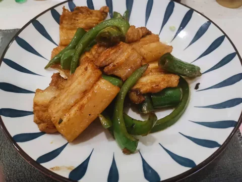
回锅肉
来源于HowToCook · HowToCook 社区贡献者 · 回锅肉成品参考 · HowToCook 仓库 Unlicense；保留来源
来源作者的成品参考；配料、摆盘与本版家常做法可能不同。
整道菜的做法核对（补充资料的采用范围见下方）
猪肉先煮后切薄片，再煸出卷边。以蒜苗和豆瓣酱为主要风味，不用生肉直接快炒替代回锅。
核对原页与实际步骤
主要资料：HowToCook · HowToCook 社区贡献者（逐页提交记录见原页）
The Woks of Life · Bill · Twice Cooked Pork: Chinese Sichuan Recipe - The Woks of Life
核对猪肉均匀切配、先熟后回锅或分开加热的方法；炸猪排的裹粉油温来自原菜记录，不来自回锅肉。
App 步骤 1. 煮熟整块肉：五花肉300克、姜10克、水没过肉。煮沸后小火。加盖煮约25分钟，厚块延长；食品温度计测中心至少63°C后离火静置3分钟，再取出稍散热。中心达温并完成静置，不能只看表面颜色。
2. 切片备菜：煮好的肉、蒜苗120克、青椒100克、姜5克。不开火。肉切2毫米片，蒜苗白绿分开切段，青椒切块，姜切片；用干净刀板。肉片薄而不断，蒜苗白段与叶段分开。
3. 煸肉炒酱：肉片、姜5克、辣豆瓣酱15克。中小火。肉片入锅翻煸出油至边缘微卷，油太多舀出一部分；加入姜和豆瓣酱炒出香味。肉片微卷不焦硬，豆瓣酱无糊味。
4. 加菜合炒：蒜苗120克、青椒100克、生抽5毫升、糖3克。中火。先下蒜苗白段和青椒炒2分钟，再下绿叶、生抽和糖翻炒至蔬菜熟软。蒜苗梗能弯曲，酱汁均匀包肉。
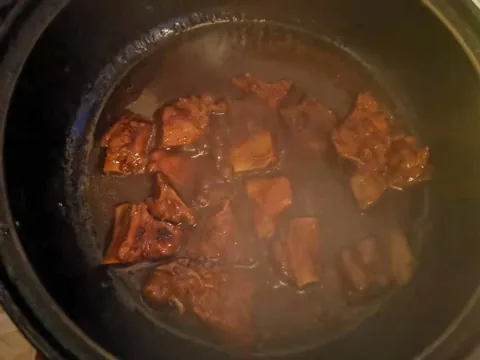
糖醋排骨
来源于HowToCook · HowToCook 社区贡献者 · 糖醋排骨成品参考 · HowToCook 仓库 Unlicense；保留来源
来源作者的成品参考；配料、摆盘与本版家常做法可能不同。
整道菜的做法核对（补充资料的采用范围见下方）
用焖熟再收汁的办法做糖醋排骨。采用补充来源的炖煮路线，省去原文大量油炸；糖醋汁不必收得很干。
核对原页与实际步骤
主要资料：HowToCook · HowToCook 社区贡献者（逐页提交记录见原页）
The Woks of Life · Judy · Shanghai Sweet and Sour Ribs - The Woks of Life
核对先把肉煮熟软、最后收浓糖醋汁的原则；锅包肉保留裹浆油炸，未直接采用排骨炖法。
App 步骤 1. 焯排骨：排骨400克、姜5克。大火。排骨切4厘米段，冷水没过排骨，沸后撇沫煮3分钟；捞出沥干并擦掉表面水珠。下油锅前不滴水。
2. 煎香排骨：油10毫升、姜10克、排骨。中火。翻煎约5分钟，待排骨表面浅金黄后加入调料，不需要煎到内部全熟。四周浅金黄，没有焦黑斑。
3. 加汁焖熟：生抽15毫升、糖25克、陈醋15毫升、水600毫升。煮开转小火。加盖焖约40分钟，每15分钟检查水量，肉不软时补热水100毫升再焖。肉能轻松从骨边拨开，不能只看时间。
4. 收汁补醋：陈醋余10毫升。中火。开盖翻动收浓汤汁，最后倒入余醋翻匀；汁刚能挂住排骨就关火。汁有光泽能流动，不是发黑黏硬的糖浆。

土豆炖排骨
来源于HowToCook · HowToCook 社区贡献者 · 土豆炖排骨成品参考 · HowToCook 仓库 Unlicense；保留来源
来源作者的成品参考；配料、摆盘与本版家常做法可能不同。
整道菜的做法核对（补充资料的采用范围见下方）
排骨先焖，土豆后放，收汁时轻推。不叠加黄豆酱和蚝油，减少咸味调料；使用普通炖锅。
核对原页与实际步骤
主要资料：HowToCook · HowToCook 社区贡献者（逐页提交记录见原页）
The Woks of Life · Judy · Shanghai-Style Braised Pork Belly (Hong Shao Rou) - The Woks of Life
核对煸肉后加液体、轻沸慢炖及开盖收汁的方法；不同肉类的时间按本版大小另作编辑估计。
App 步骤 1. 焯排骨备土豆：排骨600克、姜10克、葱1根；土豆300克。大火。排骨冷水下锅，沸后撇沫煮3分钟捞出沥干；土豆去皮切3厘米块暂浸水。排骨沥干，土豆块大小一致。
2. 煸香炖煮：油15毫升、姜10克、生抽20毫升、老抽5毫升、糖8克、八角1个、水800毫升。先中火，再小火。先煸排骨和姜约3分钟，加入调味料和水煮开，盖锅轻沸炖40分钟；每15分钟查水位。肉接近软嫩，缺水补热水避免干烧。
3. 加土豆：沥干的土豆300克。小火。下土豆再焖约20分钟，轻推一次防粘底；土豆仍硬则继续焖，每次检查别压碎。筷子能穿透土豆中心，排骨熟软。
4. 稍收浓汁：锅中排骨和土豆。中火。开盖收汁约3分钟，轻轻推动锅底；夹出八角，再关火装盘。留一些汤汁，不把土豆炒成泥。

红烧猪蹄
来源于HowToCook · HowToCook 社区贡献者 · 红烧猪蹄成品参考 · HowToCook 仓库 Unlicense；保留来源
来源作者的成品参考；配料、摆盘与本版家常做法可能不同。
整道菜的做法核对（补充资料的采用范围见下方）
猪蹄需慢炖软糯，不靠短时间上色判断。采用普通炖锅，避免把不同压力锅的时间直接套用。
核对原页与实际步骤
主要资料：HowToCook · HowToCook 社区贡献者（逐页提交记录见原页）
The Woks of Life · Judy · Shanghai-Style Braised Pork Belly (Hong Shao Rou) - The Woks of Life
核对煸肉后加液体、轻沸慢炖及开盖收汁的方法；不同肉类的时间按本版大小另作编辑估计。
App 步骤 1. 焯猪蹄：猪蹄800克、姜10克、葱1根。大火。冷水没过猪蹄，煮开撇去浮沫，再煮5分钟，捞出沥干；请商家剁块，不自行劈硬骨。表面无浮沫，沥干不滴水。
2. 炒色加汤：油10毫升、姜15克、生抽25毫升、老抽5毫升、糖15克、八角2个、桂皮1段、水1200毫升。中火。先翻炒猪蹄和姜3分钟，加其余调料及水，水应接近没过猪蹄，煮开。调料混匀，锅底没有糊糖。
3. 慢炖至软：锅中全部猪蹄与汤汁。小火。加盖轻沸炖约2小时，每20分钟翻动并补热水保持至少半淹；不软可再炖30分钟。筷子能穿透皮肉，骨边肉容易拨开。
4. 收汁装盘：锅中熟猪蹄。中火。挑出八角桂皮，开盖收汁5–10分钟，铲底防粘；汁能裹住猪蹄时离火。汤汁浓而可流动，冷后还会更稠。

老式锅包肉
来源于HowToCook · HowToCook 社区贡献者 · 老式锅包肉成品参考 · HowToCook 仓库 Unlicense；保留来源
来源作者的成品参考；配料、摆盘与本版家常做法可能不同。
整道菜的做法核对（补充资料的采用范围见下方）
薄肉片挂湿淀粉，糖醋汁最后快速裹。深油炸需有油温计；不沿用原文极短炸制及高达220度的复炸。
核对原页与实际步骤
主要资料：HowToCook · HowToCook 社区贡献者（逐页提交记录见原页）
The Woks of Life · Judy · Shanghai Sweet and Sour Ribs - The Woks of Life
核对先把肉煮熟软、最后收浓糖醋汁的原则；锅包肉保留裹浆油炸，未直接采用排骨炖法。
App 步骤 1. 沉淀淀粉：土豆淀粉170克、水400毫升；猪里脊300克、盐2克。不开火。淀粉加水拌匀静置1小时后倒掉上层清水留湿浆；肉切5毫米片拌盐冷藏，葱姜切丝、蒜切片。湿淀粉可裹住肉，过硬才每次补水5毫升。
2. 挂浆分批炸：全部肉片与湿淀粉；炸油约700毫升。油温计控制170°C。深锅装油不超过三分之一，肉片逐片挂浆分批炸约3–5分钟，翻动防粘；食品温度计测厚片中心63°C后捞到架上静置至少3分钟。外壳浅金黄；未达中心温度继续炸，不靠上浮判断熟透。
3. 调汁炒香：白醋40毫升、糖45克、生抽5毫升；另油10毫升、葱20克、姜10克、蒜2瓣。中火。糖醋和生抽拌匀；用另一个锅炒香葱姜蒜，倒汁煮到起密小泡。糖完全融化，汁略稠但没变成硬糖。
4. 快速裹汁：炸熟的全部肉片。中大火后关火。把肉片放进糖醋汁快速翻匀，表面沾汁就盛出，不在汁里长时间煮。外壳仍有脆感，锅中无大滩汁。

青椒酿肉
来源于HowToCook · HowToCook 社区贡献者 · 青椒酿成品参考 · HowToCook 仓库 Unlicense；保留来源
来源作者的成品参考；配料、摆盘与本版家常做法可能不同。
整道菜的做法核对（补充资料的采用范围见下方）
肉馅不要塞太厚，煎后加汁焖透。青椒可纵向对半更方便填馅；按本版开放式填馅，不照整只塞满的时间。
核对原页与实际步骤
主要资料：HowToCook · HowToCook 社区贡献者（逐页提交记录见原页）
The Woks of Life · Judy · How to Make Stir-fry: The Right Way! - The Woks of Life
核对先备齐材料、分开处理熟得快慢不同的食材、最后合炒的次序；不是该菜全部配方的交叉复刻。
App 步骤 1. 拌肉馅：肉末250克、姜10克、葱1根、生抽10毫升、淀粉5克。不开火。葱姜剁末拌进肉馅，朝一个方向搅到略黏；青椒对半去籽，沥干后内侧撒余下3克淀粉。馅有黏性，椒内壁干爽。
2. 填馅煎定型：全部肉馅、青椒300克、油20毫升。中小火。肉馅铺进椒中，厚度不超过1.5厘米；肉面朝下轻放，煎定型后翻面，再煎椒皮。肉馅成片不掉落，椒皮起皱。
3. 加汁焖透：生抽10毫升、老抽3毫升、水120毫升。烧开转中小火。加调料水，盖锅焖10分钟起检查；食品温度计插入最厚肉馅中心达到71°C，未达到继续焖。馅中心达温，青椒软而完整。
4. 收汁：锅中全部青椒和汁。中火。开盖略收汁，铲子从底部托起青椒装盘，淋上汤汁。酱汁略稠即可，不把肉馅煎干。

冬瓜酿肉
来源于HowToCook · HowToCook 社区贡献者 · 冬瓜酿肉成品参考 · HowToCook 仓库 Unlicense；保留来源
来源作者的成品参考；配料、摆盘与本版家常做法可能不同。
整道菜的做法核对（补充资料的采用范围见下方）
薄冬瓜片包小份肉，蒸汽持续才熟透。纠正原资料冬瓜切片厚度与过量盐；不加入未明确分配的鸡蛋。
核对原页与实际步骤
主要资料：HowToCook · HowToCook 社区贡献者（逐页提交记录见原页）
The Woks of Life · Bill · Cantonese Steamed Fish: A 20 Minute Recipe - The Woks of Life
核对水开后上蒸架、维持稳定蒸汽和按厚度检查；仅支持蒸制方法，肉馅或虾的熟度另核对。
App 步骤 1. 软化冬瓜片：冬瓜400克。水沸后中火。去皮去瓤，切2毫米薄片，沸水中煮约1分钟至可弯曲，捞出摊凉沥干，不使用原文厚片硬卷。片能弯曲但仍完整。
2. 调馅包卷：肉末250克、姜10克、葱1根、生抽10毫升、盐2克、淀粉5克。不开火。葱姜剁末拌进肉馅；每片冬瓜包约一茶匙肉，肉芯直径不超过2厘米，收口朝下放耐热盘。肉卷大小相近，盘中留空隙。
3. 蒸熟肉卷：全部冬瓜肉卷；蒸锅水按锅具刻度。水开后中火。蒸15分钟起检查，保持水持续沸腾且不烧干；用食品温度计测肉馅中心达到71°C，否则续蒸再查。冬瓜透明，肉馅中心达温。
4. 勾薄芡：盘中汤汁、淀粉3克、水50毫升。小火煮开。用防烫夹取盘，汤汁倒入小锅；淀粉与水先搅匀再倒入煮开，浇回肉卷。芡汁半透明、可流动，不是厚糊。

茭白炒肉
来源于HowToCook · HowToCook 社区贡献者 · 茭白炒肉成品参考 · HowToCook 仓库 Unlicense；保留来源
来源作者的成品参考；配料、摆盘与本版家常做法可能不同。
整道菜的做法核对（补充资料的采用范围见下方）
茭白先焯，肉条分开炒，再合锅。把含糊的水量补成明确用量；不依赖鸡精调味。
核对原页与实际步骤
主要资料：HowToCook · HowToCook 社区贡献者（逐页提交记录见原页）
The Woks of Life · Judy · How to Make Stir-fry: The Right Way! - The Woks of Life
核对先备齐材料、分开处理熟得快慢不同的食材、最后合炒的次序；不是该菜全部配方的交叉复刻。
App 步骤 1. 切片腌肉：茭白250克、猪瘦肉150克、生抽5毫升、淀粉5克。不开火。茭白去老皮切3毫米片；猪肉切3毫米条拌生抽淀粉，冷藏10分钟，姜蒜切碎。肉条薄而均匀，茭白无硬老皮。
2. 焯茭白：切好的茭白、没过菜的水。沸水中火。茭白入沸水煮约1分钟，捞出充分沥干，锅擦干后再加油。茭白略软但未煮散。
3. 炒肉与合锅：油20毫升分两次、姜5克、蒜2瓣、生抽5毫升、盐1克、水30毫升。中火。先用10毫升油炒肉变色盛出；余油炒姜蒜和茭白，再放回肉和调料水煮透。食品温度计测厚肉条63°C后离火静置至少3分钟。茭白熟软、肉达温，汁刚裹住食材。
农家一碗香
来源于HowToCook · HowToCook 社区贡献者 · 农家一碗香成品参考 · HowToCook 仓库 Unlicense；保留来源
来源作者的成品参考；配料、摆盘与本版家常做法可能不同。
整道菜的做法核对（补充资料的采用范围见下方）
鸡蛋先盛出，五花肉煸香后再合炒。补齐原食材表遗漏的鸡蛋和油；青椒可用不辣品种。
核对原页与实际步骤
主要资料：HowToCook · HowToCook 社区贡献者（逐页提交记录见原页）
The Woks of Life · Judy · How to Make Stir-fry: The Right Way! - The Woks of Life
核对先备齐材料、分开处理熟得快慢不同的食材、最后合炒的次序；不是该菜全部配方的交叉复刻。
App 步骤 1. 切配炒蛋：鸡蛋2个、油10毫升；五花肉200克、青椒150克、姜5克、蒜2瓣。中火。先把肉切2毫米片，椒切块，姜蒜切碎；鸡蛋打匀入油锅炒成凝固蛋块，盛到干净盘。没有流动蛋液，蛋块不要炒干。
2. 煸炒五花肉：肉片、姜蒜、豆瓣酱10克。中小火。肉片入原锅煸至边缘浅金黄，放姜蒜豆瓣酱翻炒，油太多可舀出一部分。肉片出油略卷，酱不焦黑。
3. 合炒煮透：青椒150克、生抽10毫升、糖2克、水30毫升、熟蛋块。中火。加青椒和调料水炒焖至椒熟软；食品温度计测厚肉片63°C后回锅鸡蛋翻匀，离火静置至少3分钟。椒无生硬感，肉达温，鸡蛋吸附薄酱汁。
香煎五花肉
来源于HowToCook · HowToCook 社区贡献者 · 香煎五花肉成品参考 · HowToCook 仓库 Unlicense；保留来源
来源作者的成品参考；配料、摆盘与本版家常做法可能不同。
整道菜的做法核对（补充资料的采用范围见下方）
薄肉片分批平铺，生菜用另一套干净用具。不使用原文未称重的整条肉，也不将生豆瓣酱直接抹在菜叶上。
核对原页与实际步骤
主要资料：HowToCook · HowToCook 社区贡献者（逐页提交记录见原页）
The Woks of Life · Bill · Twice Cooked Pork: Chinese Sichuan Recipe - The Woks of Life
核对猪肉均匀切配、先熟后回锅或分开加热的方法；炸猪排的裹粉油温来自原菜记录，不来自回锅肉。
App 步骤 1. 切片腌肉：五花肉300克、生抽10毫升、姜10克、蒜2瓣。不开火。肉切2毫米片，姜蒜切碎，拌生抽冷藏腌10分钟；生菜另用清洁用具洗净沥干。生菜不接触腌生肉的碗和筷子。
2. 分批煎肉：油5毫升、腌好的五花肉。中火。平铺肉片分批煎，两面浅金黄后继续煎熟，用食品温度计测厚片至少63°C，盛到干净盘静置3分钟。边缘微脆但不焦黑，肉中心达温。
3. 配生菜装盘：生菜150克、甜面酱15克、熟五花肉。关火。确认甜面酱包装可直接食用，否则按包装加热；把菜叶和肉分别盛出，吃时少量蘸酱包卷。生熟用具已分开，酱少放避免过咸。

宫保鸡丁
来源于HowToCook · HowToCook 社区贡献者 · 宫保鸡丁成品参考 · HowToCook 仓库 Unlicense；保留来源
来源作者的成品参考；配料、摆盘与本版家常做法可能不同。
整道菜的做法核对（补充资料的采用范围见下方）
酱汁预先调好，熟花生最后再放。使用熟花生，纠正原文过大的花生比例；鸡肉不冲洗，不靠变白判断熟透。
核对原页与实际步骤
主要资料：HowToCook · HowToCook 社区贡献者（逐页提交记录见原页）
The Woks of Life · Judy · Kung Pao Chicken: An Authentic Chinese Recipe - The Woks of Life
核对鸡肉切匀、冷藏腌制和调料预备；宫保版本另核对花生最后放，其他鸡菜不套用宫保酱汁。
App 步骤 1. 腌鸡调汁：鸡腿肉300克、生抽5毫升、淀粉4克；生抽10毫升、醋10毫升、糖8克、淀粉4克、水50毫升。不开火。鸡肉切1.5厘米丁拌前一份腌料冷藏10分钟；后一份调料调成碗汁。葱切段、姜蒜切片、干椒剪段。肉丁均匀，碗汁无干淀粉结团。
2. 煎鸡炒香料：油20毫升、鸡丁、姜10克、蒜2瓣、干辣椒3个、葱50克、花椒粉0.5克。先中火后小火。先用15毫升油炒鸡丁表面变色盛出；余油小火炒香姜蒜干椒葱和花椒粉，不炒糊。香料出香但未发黑。
3. 合锅勾汁：全部鸡丁、碗汁、熟花生40克。中火。鸡丁回锅，重搅碗汁倒入煮3–5分钟，食品温度计测厚鸡丁74°C；达温后放熟花生翻匀立刻关火。鸡丁中心达温，汁薄而亮，花生仍脆。

口水鸡
来源于HowToCook · HowToCook 社区贡献者 · 口水鸡成品参考 · HowToCook 仓库 Unlicense；保留来源
来源作者的成品参考；配料、摆盘与本版家常做法可能不同。
整道菜的做法核对（补充资料的采用范围见下方）
鸡腿煮熟再切，红油汁单独调。以成品辣椒油代替高温泼油；不用生肉原盘盛凉菜。
核对原页与实际步骤
主要资料：HowToCook · HowToCook 社区贡献者（逐页提交记录见原页）
The Woks of Life · Judy · Poached Chicken w/ Scallion Ginger Sauce - The Woks of Life
核对鸡肉轻沸煮制、熟后处理和独立调汁的方法；不沿用仅看肉汁清澈判断熟度。
App 步骤 1. 轻沸煮鸡：鸡腿肉500克、姜20克、葱1根、水没过鸡肉。煮开后小火。水和姜葱煮开下鸡腿，再次沸腾后保持轻沸约25分钟；食品温度计避开骨头测最厚处74°C，不足续煮。最厚处达温后才取出，不以无血水代替测温。
2. 散热切块：煮熟的鸡腿。关火。移到清洁浅盘稍散热，温热不烫手后去骨切块；暂不吃就及时冷藏，烹调后2小时内入冰箱。刀板和手保持清洁，不用生鸡肉刀板直接切。
3. 调汁淋鸡：生抽15毫升、醋10毫升、糖4克、辣椒油20毫升、花椒粉1克、蒜2瓣、葱1根、熟花生20克。不开火。蒜葱切末，花生压碎；其余调料搅到糖溶化，淋鸡肉后撒葱花生，现拌现吃。料汁均匀，鸡肉切面可挂汁。
凉拌鸡丝
来源于HowToCook · HowToCook 社区贡献者 · 凉拌鸡丝成品参考 · HowToCook 仓库 Unlicense；保留来源
来源作者的成品参考；配料、摆盘与本版家常做法可能不同。
整道菜的做法核对（补充资料的采用范围见下方）
鸡胸保持轻沸，熟后顺纹撕丝。先在冰箱解冻；不直接照原文给冷冻肉多煮两分钟。
核对原页与实际步骤
主要资料：HowToCook · HowToCook 社区贡献者（逐页提交记录见原页）
The Woks of Life · Judy · Poached Chicken w/ Scallion Ginger Sauce - The Woks of Life
核对鸡肉轻沸煮制、熟后处理和独立调汁的方法；不沿用仅看肉汁清澈判断熟度。
App 步骤 1. 煮透鸡胸：鸡胸肉300克、姜15克、水约1200毫升。煮开后小火。冷藏解冻的鸡胸放入姜水，轻沸煮约15–20分钟；食品温度计测最厚处74°C，不足则继续煮。水只轻微冒泡，鸡肉中心达温。
2. 放温撕丝：熟鸡胸。关火。捞到干净盘中稍放温，用干净手或叉子顺纹撕成细丝；不要用自来水冲凉即食肉。鸡丝粗细接近，内部无冷硬块。
3. 拌入调味：生抽10毫升、陈醋10毫升、糖3克、花椒油5毫升。不开火。调料在清洁碗中搅匀再拌入鸡丝，现拌现吃；暂不吃应及时冷藏。糖溶解，鸡丝均匀湿润但不泡汁。

姜炒鸡
来源于HowToCook · HowToCook 社区贡献者 · 姜炒鸡成品参考 · HowToCook 仓库 Unlicense；保留来源
来源作者的成品参考；配料、摆盘与本版家常做法可能不同。
整道菜的做法核对（补充资料的采用范围见下方）
嫩姜先炒香，鸡块加啤酒焖透。使用去骨鸡腿肉便于切匀；啤酒可换等量水，风味不同，不保证酒精煮尽。
核对原页与实际步骤
主要资料：HowToCook · HowToCook 社区贡献者（逐页提交记录见原页）
The Woks of Life · Judy · Kung Pao Chicken: An Authentic Chinese Recipe - The Woks of Life
核对鸡肉切匀、冷藏腌制和调料预备；宫保版本另核对花生最后放，其他鸡菜不套用宫保酱汁。
App 步骤 1. 切配腌鸡：鸡腿肉400克、生抽5毫升；姜100克、蒜4瓣、泡椒20克、小米辣1根。不开火。鸡肉切2厘米块拌生抽冷藏10分钟；姜切薄片，其余切碎，接触生鸡后清洗手和刀板。肉块大小一致，姜片薄。
2. 炒姜鸡：食用油20毫升、全部姜片、鸡块。中火。姜片入油锅炒约1分钟，再平铺鸡肉煎炒至表面浅金黄；此时内部未必熟。锅底无大量水，姜没有焦黑。
3. 焖透收汁：啤酒200毫升、生抽10毫升、老抽3毫升、蒜及两种椒。烧开转中小火。翻匀后加盖焖约12分钟；食品温度计测最厚鸡块74°C后开盖收汁，不足续焖。鸡肉达温，剩少量浓汁，勿烧干。

新疆大盘鸡
来源于HowToCook · HowToCook 社区贡献者 · 新疆大盘鸡成品参考 · HowToCook 仓库 Unlicense；保留来源
来源作者的成品参考；配料、摆盘与本版家常做法可能不同。
整道菜的做法核对（补充资料的采用范围见下方）
鸡块先炖，土豆吸汁后再放彩椒。用去骨腿肉降低切配难度；本版不含皮带面。
核对原页与实际步骤
主要资料：HowToCook · HowToCook 社区贡献者（逐页提交记录见原页）
The Woks of Life · Judy · Shanghai-Style Braised Pork Belly (Hong Shao Rou) - The Woks of Life
核对煸肉后加液体、轻沸慢炖及开盖收汁的方法；不同肉类的时间按本版大小另作编辑估计。
App 步骤 1. 切块备料：鸡腿肉600克、土豆400克、彩椒150克、葱30克、姜15克、蒜4瓣。不开火。鸡肉切3厘米块，土豆去皮切3厘米块，彩椒切块，葱姜蒜切片段，生熟刀板分开。土豆鸡块大小相近。
2. 煸鸡加汤：油20毫升、鸡肉、姜蒜、干椒3个、花椒1克、生抽20毫升、糖10克、水700毫升。中火炒，煮开转小火。先煸鸡块至表面金黄，加姜蒜干椒花椒炒香，再加调料水盖锅炖20分钟。汤轻沸，未烧干；鸡油和香料香气明显。
3. 放土豆煮透：土豆400克。小火。土豆入锅再焖20分钟，用食品温度计测厚鸡块74°C，不足继续焖；水太少每次补热水100毫升。土豆筷子可穿透，鸡肉中心达温。
4. 加彩椒收汁：彩椒150克、葱30克。中火。开盖加彩椒和葱炒煮3分钟至蔬菜熟软，轻推不压碎土豆，留些浓汁。彩椒软而有形，土豆不成糊。
啤酒鸭
来源于HowToCook · HowToCook 社区贡献者 · 啤酒鸭成品参考 · HowToCook 仓库 Unlicense；保留来源
来源作者的成品参考；配料、摆盘与本版家常做法可能不同。
整道菜的做法核对（补充资料的采用范围见下方）
鸭皮先煸出油，再加啤酒慢炖。啤酒不能保证煮至无酒精；避酒者换等量水，风味随之改变。
核对原页与实际步骤
主要资料：HowToCook · HowToCook 社区贡献者（逐页提交记录见原页）
The Woks of Life · Judy · Shanghai-Style Braised Pork Belly (Hong Shao Rou) - The Woks of Life
核对煸肉后加液体、轻沸慢炖及开盖收汁的方法；不同肉类的时间按本版大小另作编辑估计。
App 步骤 1. 焯鸭块：鸭肉800克、姜10克、水没过鸭肉。大火。冷水下鸭块，水开撇浮沫煮3分钟，捞出沥干；锅擦干后再加油。鸭块表面沥干，避免溅油。
2. 煸鸭炒香：油10毫升、姜10克、蒜6瓣、辣豆瓣酱15克。中火。先煸鸭块约5分钟让皮出油，油多舀去一些；加入姜蒜豆瓣酱炒香。鸭皮微黄，锅中无糊酱。
3. 啤酒慢炖：啤酒600毫升、生抽15毫升、老抽5毫升、糖8克、八角1个。煮开转小火。加盖炖45–60分钟，每15分钟查水量，干时补热水100毫升。食品温度计测最厚处74°C且肉软，再开盖稍收汁。鸭肉达温且能咬动，不靠单一时间判断。
空气炸锅脆皮鸡翅
来源于HowToCook · HowToCook 社区贡献者 · 空气炸锅脆皮现腌炸鸡成品参考 · HowToCook 仓库 Unlicense；保留来源
原作者使用鸡腿的成品切面参考；本版使用鸡翅中，大小、形状与加热时间不同，以本版步骤和中心温度为准。
整道菜的做法核对（补充资料的采用范围见下方）
薄裹粉并刷油，炸篮只铺一层。明确采用短时冷藏腌制版；不把空气炸锅时间直接用于带骨大鸡腿。
核对原页与实际步骤
主要资料：HowToCook · HowToCook 社区贡献者（逐页提交记录见原页）
The Woks of Life · Judy · Kung Pao Chicken: An Authentic Chinese Recipe - The Woks of Life
核对鸡肉切匀、冷藏腌制和调料预备；宫保版本另核对花生最后放，其他鸡菜不套用宫保酱汁。
App 步骤 1. 腌鸡翅：鸡翅300克、生抽15毫升、蒜粉2克、红甜椒粉2克、黑胡椒粉1克。不开火。鸡翅冷藏解冻擦干，拌入腌料后冷藏30分钟；生鸡肉不冲洗，处理后洗手和用具。翅表面均匀沾料，没有冻硬中心。
2. 薄裹粉刷油：面粉40克、淀粉20克、蒜粉2克、红甜椒粉1克、油10毫升。空气炸锅预热180°C。混匀干粉，鸡翅逐个薄裹并抖掉浮粉，全部油分两面刷上；备好食品温度计检查鸡肉熟度。表面没有大片干粉，炸篮单层留缝。
3. 翻面烤熟：全部裹粉鸡翅。空气炸锅180°C。先烤10分钟翻面，再烤8分钟起检查；食品温度计避骨测最厚处74°C，不足续烤2分钟再查。表皮金黄，鸡肉中心达温，不能仅看颜色。

蒜香黄油虾
来源于HowToCook · HowToCook 社区贡献者 · 蒜香黄油虾成品参考 · HowToCook 仓库 Unlicense；保留来源
来源作者的成品参考；配料、摆盘与本版家常做法可能不同。
整道菜的做法核对（补充资料的采用范围见下方）
虾先煎，黄油蒜末低火炒香再合锅。省略白葡萄酒；黄油不能长时间大火烧。
核对原页与实际步骤
主要资料：HowToCook · HowToCook 社区贡献者（逐页提交记录见原页）
The Woks of Life · Judy · Chinese Boiled Shrimp with Ginger Scallion Sauce - The Woks of Life
核对虾应煮至肉熟透、及时离锅及蘸汁分开处理；仅支持虾的加热终点，不代表所有调味相同。
App 步骤 1. 处理虾仁：虾仁250克、盐1克、蒜4瓣、柠檬1/4个。不开火。虾仁冷藏解冻去虾线，沥干擦干撒盐；蒜切末，柠檬去籽备用。虾仁无硬冻芯，表面不滴水。
2. 煎虾炒蒜：油10毫升、虾仁、黄油25克、蒜末。先中火，后小火。油热平铺虾仁，两面各煎约1分钟，先盛出；降小火化黄油炒蒜约30秒，别炒黑。蒜浅金黄，黄油起细泡。
3. 回锅淋柠檬：全部虾仁、柠檬1/4个的汁。中小火。虾仁回锅翻拌约1–2分钟至最厚处也白色不透明；确认熟透后挤柠檬汁翻匀关火。内部无透明肉芯，虾身弯曲但未缩成紧团。

油焖大虾
来源于HowToCook · HowToCook 社区贡献者 · 油焖大虾成品参考 · HowToCook 仓库 Unlicense；保留来源
来源作者的成品参考；配料、摆盘与本版家常做法可能不同。
整道菜的做法核对（补充资料的采用范围见下方）
带壳虾先煎，再少量加水焖透。将原文两小碗水改为明确水量，缩短收汁但不只凭虾壳变红判断。
核对原页与实际步骤
主要资料：HowToCook · HowToCook 社区贡献者（逐页提交记录见原页）
The Woks of Life · Judy · Chinese Boiled Shrimp with Ginger Scallion Sauce - The Woks of Life
核对虾应煮至肉熟透、及时离锅及蘸汁分开处理；仅支持虾的加热终点，不代表所有调味相同。
App 步骤 1. 备虾葱姜：虾350克、葱20克、姜15克。不开火。剪虾须虾枪，开背去虾线并擦干；葱切段、姜切细末，料汁提前量好。虾壳无明显水滴。
2. 煎虾两面：油20毫升、葱姜、全部虾。中火。先炒香葱姜，再单层下虾煎至两面变色，轻压虾头出香，不要用手按。壳变红但此时仍需焖到内部熟透。
3. 焖熟收汁：料酒15毫升、糖8克、盐1克、水100毫升。煮开转中小火。盖锅焖3分钟起查厚虾肉，肉完全白色不透明才开盖收汁，翻动至汁挂壳。虾肉无透明芯，留薄汁，不烧成干糖。

白灼虾
来源于HowToCook · HowToCook 社区贡献者 · 白灼虾成品参考 · HowToCook 仓库 Unlicense；保留来源
来源作者的成品参考；配料、摆盘与本版家常做法可能不同。
整道菜的做法核对（补充资料的采用范围见下方）
沸水下虾，熟透就捞，蘸汁另外调。采用补充来源的水煮路线，与原仓库无水焖虾方法区分。
核对原页与实际步骤
主要资料：HowToCook · HowToCook 社区贡献者（逐页提交记录见原页）
The Woks of Life · Judy · Chinese Boiled Shrimp with Ginger Scallion Sauce - The Woks of Life
核对虾应煮至肉熟透、及时离锅及蘸汁分开处理；仅支持虾的加热终点，不代表所有调味相同。
App 步骤 1. 处理虾调汁：虾350克、姜15克、葱1根、生抽15毫升、陈醋10毫升。不开火。虾剪须去线；姜取5克切末与生抽醋调蘸汁，剩余姜切片，葱切段。生虾用具不接触蘸汁碗。
2. 水开下虾：水1200毫升、姜片10克、葱段、全部虾。大火煮开后中火。姜葱水煮沸下虾，轻推，重新沸腾后约2–4分钟起查最大一只；必要时续煮。最厚虾肉白色不透明，不能只看壳红。
3. 沥水装盘：煮熟的虾、调好的蘸汁。关火。用干净漏勺捞出沥水，盛盘配独立蘸汁，现煮现吃；不在热水里久泡。虾肉熟而有弹性，盘中不积煮虾水。

蒜蓉蒸虾
来源于HowToCook · HowToCook 社区贡献者 · 蒜蓉虾成品参考 · HowToCook 仓库 Unlicense；保留来源
来源作者的成品参考；配料、摆盘与本版家常做法可能不同。
整道菜的做法核对（补充资料的采用范围见下方）
虾开背铺平，蒜蓉不堆成厚块。本版自己炒蒜蓉，不依赖未说明配方的蒜蓉酱；不另泼高温油。
核对原页与实际步骤
主要资料：HowToCook · HowToCook 社区贡献者（逐页提交记录见原页）
The Woks of Life · Bill · Cantonese Steamed Fish: A 20 Minute Recipe - The Woks of Life
核对水开后上蒸架、维持稳定蒸汽和按厚度检查；仅支持蒸制方法，肉馅或虾的熟度另核对。
App 步骤 1. 开背备蒜：虾300克、蒜30克。不开火。虾去须虾线，从背部剪开但不切断，展开平铺耐热盘；蒜切细末。虾背展开，盘中尽量不叠放。
2. 炒蒜蓉：油15毫升、蒜30克、生抽10毫升。小火。油和蒜末入锅慢炒约1分钟至出香，关火拌生抽，均匀分到每只虾背上。蒜色浅黄未发黑，料不堆太厚。
3. 蒸到熟透：全部蒜蓉虾、蒸锅水。水开后中大火。放入蒸架盖锅，蒸5分钟起检查，较大虾续蒸；虾最厚处白色不透明，用防烫夹取盘。持续有蒸汽，虾无透明生肉芯。

阳朔啤酒鱼
来源于HowToCook · HowToCook 社区贡献者 · 阳朔啤酒鱼成品参考 · HowToCook 仓库 Unlicense；保留来源
来源作者的成品参考；配料、摆盘与本版家常做法可能不同。
整道菜的做法核对（补充资料的采用范围见下方）
鱼先煎定型，番茄炒软后加啤酒焖。请商家去鳞去内脏，家庭版不保留鱼鳞；啤酒可等量换水，风味不同。
核对原页与实际步骤
主要资料：HowToCook · HowToCook 社区贡献者（逐页提交记录见原页）
The Woks of Life · Judy · Chinese Braised Fish (Hong Shao Yu) - The Woks of Life
核对鱼身擦干、煎定型后翻面及加汁温和煮制；鱼种、调味与时间取本版家常配方。
App 步骤 1. 擦干备鱼：鲤鱼750克、全部蔬菜。不开火。鱼剖成可平放的两半并擦干；番茄青椒切块，姜蒜切片，葱切段；鱼刺仍需食用时挑除。鱼表面无水珠，锅能平放鱼身。
2. 煎鱼炒底料：油25毫升、姜20克、蒜5瓣、蒜蓉辣酱15克、番茄300克。中火。先煎鱼每面约3分钟至定型后盛出；原锅炒姜蒜辣酱和番茄至番茄软出汁。翻鱼时整片托起，皮脱锅再翻。
3. 加啤酒焖鱼：啤酒330毫升、水100毫升、生抽15毫升、糖5克、煎鱼。煮开转中小火。放鱼加盖焖15分钟，间中把汤淋在鱼上；用食品温度计测最厚处63°C，未达温续煮。鱼肉可分成片且达温，锅底有汤。
4. 加椒收汁：青椒150克、葱1根。中火。加入青椒再煮3分钟至熟软，开盖稍收汁撒葱，托起整鱼盛盘。汤汁浓但仍可流动，鱼不反复翻碎。
鳊鱼炖豆腐
来源于HowToCook · HowToCook 社区贡献者 · 鳊鱼炖豆腐成品参考 · HowToCook 仓库 Unlicense；保留来源
来源作者的成品参考；配料、摆盘与本版家常做法可能不同。
整道菜的做法核对（补充资料的采用范围见下方）
鱼煎好后加汤，豆腐沿锅边放入。减少原文盐量；不用老豆腐替换成容易碎的内酯豆腐。
核对原页与实际步骤
主要资料：HowToCook · HowToCook 社区贡献者（逐页提交记录见原页）
The Woks of Life · Judy · Chinese Braised Fish (Hong Shao Yu) - The Woks of Life
核对鱼身擦干、煎定型后翻面及加汁温和煮制；鱼种、调味与时间取本版家常配方。
App 步骤 1. 备鱼豆腐：鳊鱼550克、老豆腐350克、姜15克、蒜3瓣、葱1根。不开火。鱼擦干两面浅划刀，豆腐切2厘米块，姜蒜切片葱切段，生鱼刀板清洁后再处理熟食。鱼不滴水，豆腐块完整。
2. 煎鱼加汤：油20毫升、姜蒜葱、生抽15毫升、老抽3毫升、糖5克、水500毫升。中火。鱼两面各煎3分钟左右，定型再翻；加入姜蒜葱炒香，再加调料水烧开。鱼皮浅金黄，调料入汤不糊底。
3. 放豆腐炖熟：老豆腐350克。小火。豆腐沿锅边放入，轻沸炖15分钟，偶尔淋汤；用食品温度计测鱼最厚处63°C，未达温续煮，最后稍收汁。豆腐热透，鱼肉达温可拨散，留汤汁。
蛏抱蛋
来源于HowToCook · HowToCook 社区贡献者 · 蛏抱蛋成品参考 · HowToCook 仓库 Unlicense；保留来源
来源作者的成品参考；配料、摆盘与本版家常做法可能不同。
整道菜的做法核对（补充资料的采用范围见下方）
蛏子先煮开壳，蛋液再分小饼煎透。减少原文炸油量；不采用原文混入的瘦肉炸制说明。
核对原页与实际步骤
主要资料：HowToCook · HowToCook 社区贡献者（逐页提交记录见原页）
RecipeTin Eats · Nagi · Omelette - RecipeTin Eats
核对蛋液在锅中温和加热、推向中心或折叠的方法；本版选全熟终点，非流心蛋版本。
App 步骤 1. 煮蛏取肉：蛏子400克、水没过蛏子。沸水中火。按购买说明处理吐沙并刷净外壳，入沸水煮至开壳且肉熟透；丢弃煮后不开壳的蛏子，取肉沥干。蛏肉无沙粒，死蛏和破壳异味者不用。
2. 调蛋糊：鸡蛋2个、洋葱50克、淀粉10克、水20毫升、生抽5毫升、蛏肉。不开火。洋葱切细丁，淀粉先兑水搅匀，再与蛋液、生抽、洋葱和蛏肉混合。粉浆无硬团，蛋液能流动。
3. 分份煎熟：全部蛋糊、食用油20毫升。中小火。分成4份薄饼煎，每面约2–3分钟；食品温度计测中心71°C，不足延长，不做厚大饼。两面浅金黄，中心蛋液凝固且达温。

葱油桂鱼
来源于HowToCook · HowToCook 社区贡献者 · 葱油桂鱼成品参考 · HowToCook 仓库 Unlicense；保留来源
来源作者的成品参考；配料、摆盘与本版家常做法可能不同。
整道菜的做法核对（补充资料的采用范围见下方）
鱼蒸熟后淋热葱汁，少盐突出鱼味。根据鱼厚检查而非固定蒸20分钟；不把鱼类寄生虫风险简单按淡海水区分。
核对原页与实际步骤
主要资料：HowToCook · HowToCook 社区贡献者（逐页提交记录见原页）
The Woks of Life · Bill · Cantonese Steamed Fish: A 20 Minute Recipe - The Woks of Life
核对水开后上蒸架、维持稳定蒸汽和按厚度检查；仅支持蒸制方法，肉馅或虾的熟度另核对。
App 步骤 1. 备鱼摆盘：桂鱼500克、姜15克、葱1根。不开火。去净鳞内脏，擦干鱼，在厚处浅划刀，姜切片、葱切段，部分垫鱼底部分放鱼身。鱼平放耐热盘，厚肉部位有划口。
2. 开水蒸熟：鱼盘、蒸锅按刻度加水。水沸后中火。蒸约12分钟起检查，用食品温度计测厚鱼肉63°C，未达温再蒸2分钟复查；用防烫夹取盘。鱼肉达温且可拨成片，蒸锅不烧干。
3. 热葱汁淋鱼：葱1根、油15毫升、蒸鱼豉油15毫升、水20毫升。小火。葱切细丝，油锅小火炒香葱丝，再加豉油和水煮开；淋到熟鱼上，不额外泼滚烫油。葱刚软，酱汁热透而未烧干。
地三鲜
来源于HowToCook · HowToCook 社区贡献者 · 地三鲜成品参考 · HowToCook 仓库 Unlicense；保留来源
来源作者的成品参考；配料、摆盘与本版家常做法可能不同。
整道菜的做法核对（补充资料的采用范围见下方）
三种蔬菜分批煎，最后薄芡合炒。采用补充来源的少油煎焖路线，不深油炸；土豆必须熟软。
核对原页与实际步骤
主要资料：HowToCook · HowToCook 社区贡献者（逐页提交记录见原页）
The Woks of Life · Judy · Stir-fried Eggplant, Potatoes & Peppers (Di San Xian) - The Woks of Life
核对蔬菜沥干、分批煎至熟软、最后合锅调味；烤制版本只借鉴含水量与熟软状态，不套用炒锅时间。
App 步骤 1. 切块调汁：三种蔬菜、蒜3瓣；生抽15毫升、糖4克、淀粉5克、水50毫升。不开火。土豆去皮，蔬菜切约2厘米块并擦干；蒜切末，调料加水调成碗汁。蔬菜块大小相近，入油锅前无明显水滴。
2. 分批煎蔬菜：油30毫升、土豆200克、青椒150克、茄子250克、水30毫升。中火转中小火。先用20毫升油煎土豆约8分钟至可扎透，加青椒炒1分钟盛出；加余10毫升油煎茄子，补水盖锅焖3–5分钟至软。土豆无硬芯，茄子内层不白硬。
3. 合锅挂汁：余油10毫升、蒜末、全部蔬菜和碗汁。中火。炒香蒜末，放回土豆青椒；碗汁重新搅匀倒入，翻拌到汁微稠就关火。酱汁薄薄挂菜，无淀粉硬块。

干锅花菜
来源于HowToCook · HowToCook 社区贡献者 · 干锅花菜成品参考 · HowToCook 仓库 Unlicense；保留来源
来源作者的成品参考；配料、摆盘与本版家常做法可能不同。
整道菜的做法核对（补充资料的采用范围见下方）
花菜焯后充分沥水，五花肉煸香再合炒。原资料蒜瓣与蒜叶混写，本版统一用蒜瓣；不需要专用干锅。
核对原页与实际步骤
主要资料：HowToCook · HowToCook 社区贡献者（逐页提交记录见原页）
The Woks of Life · Judy · Chinese Dry Pot Cauliflower with Pork Belly - The Woks of Life
同菜对照：花菜切小朵，猪肉先炒，合锅后加少量液体焖熟；本版先焯花菜并明确猪肉中心温度。
App 步骤 1. 焯花菜切肉：花菜400克、五花肉120克、蒜3瓣、小米辣1根。沸水中火。花菜切小朵洗净，沸水煮1分钟捞出沥干；肉切2毫米片，蒜切片、椒切圈。花菜不滴水，肉片薄而均匀。
2. 煸肉炒蒜：油10毫升、肉片、蒜片、辣椒。中火。先煸肉片至边缘微卷，再放蒜椒炒香；煸出的油过多可舀掉一些。肉片浅金黄，蒜不焦黑。
3. 合炒熟透：花菜、生抽10毫升、糖3克、水30毫升。中火。加入花菜调味翻炒，补水短焖；食品温度计测厚肉片63°C后关火静置至少3分钟，花菜需熟而可咬断。菜梗无生硬芯，肉达温，锅底无多余水。

蒜蓉烤茄子
来源于HowToCook · HowToCook 社区贡献者 · 烤茄子成品参考 · HowToCook 仓库 Unlicense；保留来源
来源作者的成品参考；配料、摆盘与本版家常做法可能不同。
整道菜的做法核对（补充资料的采用范围见下方）
茄子先烤软，再铺蒜蓉烤香。烤箱温度是设备设定值，不是茄子中心温度；大茄子需延长。
核对原页与实际步骤
主要资料：HowToCook · HowToCook 社区贡献者（逐页提交记录见原页）
The Woks of Life · Judy · Stir-fried Eggplant, Potatoes & Peppers (Di San Xian) - The Woks of Life
核对蔬菜沥干、分批煎至熟软、最后合锅调味；烤制版本只借鉴含水量与熟软状态，不套用炒锅时间。
App 步骤 1. 备茄子酱料：茄子300克、油10毫升；蒜4瓣、小米辣1根、生抽10毫升、孜然粉1克、油10毫升。烤箱预热200℃。茄子擦干，用叉扎几个孔，表皮刷前10毫升油；蒜椒切末和其余调料油拌成酱。茄子无水滴，已扎孔，烤盘可耐高温。
2. 先烤软：刷油的茄子。烤箱200℃中层。烤20分钟起检查，用夹子轻压；仍硬就再烤5分钟复查，取出时戴隔热手套。外皮起皱，夹子轻压能凹下。
3. 铺酱再烤：全部蒜蓉酱。烤箱200℃。纵向划开茄子但不切断底皮，拨松内瓤铺酱，再烤5–8分钟；蒜易焦，提前检查。茄肉全软，蒜末浅金黄未焦黑。
上汤娃娃菜
来源于HowToCook · HowToCook 社区贡献者 · 上汤娃娃菜成品参考 · HowToCook 仓库 Unlicense；保留来源
来源作者的成品参考；配料、摆盘与本版家常做法可能不同。
整道菜的做法核对（补充资料的采用范围见下方）
先煎香配料再加水，娃娃菜煮到梗软。补齐午餐肉用量；不宣称清水汤等同餐厅上汤。
核对原页与实际步骤
主要资料：HowToCook · HowToCook 社区贡献者（逐页提交记录见原页）
The Woks of Life · Judy · How to Make Stir-fry: The Right Way! - The Woks of Life
核对先备齐材料、分开处理熟得快慢不同的食材、最后合炒的次序；不是该菜全部配方的交叉复刻。
App 步骤 1. 备菜切丁：全部食材。不开火。娃娃菜纵切6瓣洗净，金针菇去根撕开，皮蛋按包装处理后切丁，午餐肉切丁，姜蒜切片。菜根无泥，菇根切净，皮蛋处理遵从包装。
2. 炒底料加汤：油10毫升、蒜3瓣、姜5克、午餐肉80克、水500毫升、蚝油10毫升。中火。炒香姜蒜和午餐肉，再加水蚝油煮开；配料本身有盐，先不加盐。汤持续沸腾，午餐肉边缘稍金黄。
3. 菜与菇煮透：娃娃菜400克、金针菇80克、皮蛋1个。中火轻沸。加入菜和菇盖锅煮5分钟起检查，再加入皮蛋继续煮2分钟，确保金针菇彻底加热熟透。菜梗半透明可弯曲，菇无硬生口感。
椒盐玉米
来源于HowToCook · HowToCook 社区贡献者 · 椒盐玉米成品参考 · HowToCook 仓库 Unlicense；保留来源
来源作者的成品参考；配料、摆盘与本版家常做法可能不同。
整道菜的做法核对（补充资料的采用范围见下方）
玉米煮熟沥水再薄裹淀粉。冷冻玉米按包装拆袋加热，不沿用原文带包装入锅；椒盐从少量开始。
核对原页与实际步骤
主要资料：HowToCook · HowToCook 社区贡献者（逐页提交记录见原页）
The Woks of Life · Judy · Stir-fried Eggplant, Potatoes & Peppers (Di San Xian) - The Woks of Life
核对蔬菜沥干、分批煎至熟软、最后合锅调味；烤制版本只借鉴含水量与熟软状态，不套用炒锅时间。
App 步骤 1. 煮熟沥水：玉米粒300克。沸水中火。按包装煮熟玉米，通常3–5分钟，沥去水并用厨房纸吸干；表面略湿但不滴水。玉米熟透，碗底无积水。
2. 裹粉煎定型：淀粉40克、油30毫升、熟玉米。中火。玉米拌淀粉，筛掉浮粉；油热下玉米铺开，先等30秒定型，再轻翻煎3分钟左右。表面形成浅金黄薄壳，粉不成厚团。
3. 撒椒盐：椒盐先2克，余1克尝后加；熟芝麻5克。关火。先撒2克椒盐和芝麻拌匀，尝后才补余量，及时装盘以免回软。颗粒松散，薄壳香脆不油湿。

小炒藕丁
来源于HowToCook · HowToCook 社区贡献者 · 小炒藕丁成品参考 · HowToCook 仓库 Unlicense；保留来源
来源作者的成品参考；配料、摆盘与本版家常做法可能不同。
整道菜的做法核对（补充资料的采用范围见下方）
藕切小丁先焯，再用少量酱汁炒匀。减少原文较重的生抽老抽比例；莲藕切1厘米丁更易熟。
核对原页与实际步骤
主要资料：HowToCook · HowToCook 社区贡献者（逐页提交记录见原页）
The Woks of Life · Judy · How to Make Stir-fry: The Right Way! - The Woks of Life
核对先备齐材料、分开处理熟得快慢不同的食材、最后合炒的次序；不是该菜全部配方的交叉复刻。
App 步骤 1. 切丁焯藕：莲藕300克。沸水中火。莲藕去皮洗净切1厘米丁，沸水焯2分钟捞出沥干；葱切末，小米辣切圈。藕孔无泥，藕丁均匀且沥干。
2. 炒香调味：油15毫升、葱1根、小米辣1根、生抽10毫升、老抽2毫升、蚝油5毫升。中火。炒香葱椒，倒藕丁翻炒，再加调味料炒匀约2分钟；锅干可补水1汤匙。藕丁熟而脆，酱色均匀，无糊味。
3. 检查出锅：锅中全部藕丁。关火。夹最大一丁稍吹凉确认已熟、无生硬芯；若仍生硬，加少量水回锅焖1分钟再查。熟透仍有脆度，不用追求软烂。

乾隆白菜
来源于HowToCook · HowToCook 社区贡献者 · 乾隆白菜成品参考 · HowToCook 仓库 Unlicense；保留来源
来源作者的成品参考；配料、摆盘与本版家常做法可能不同。
整道菜的做法核对（补充资料的采用范围见下方）
白菜沥干，芝麻酱分次调稀才挂得住。采用芝麻酱拌菜，不照搬鹰嘴豆泥配料；生食蔬菜要洗净并用清洁刀板。
核对原页与实际步骤
主要资料：HowToCook · HowToCook 社区贡献者（逐页提交记录见原页）
RecipeTin Eats · Nagi · Hummus - RecipeTin Eats
核对使用已熟罐头鹰嘴豆以及液体分次调节质地；其他豆菜仅参考熟豆和稠度控制，不代替原菜配方。
App 步骤 1. 洗净晾干：白菜嫩叶300克。不开火。去掉老硬菜帮，嫩叶洗净手撕成小块，甩干或用厨房纸吸水；不要用处理生肉的盆直接装菜。菜叶无可见水珠，叶缝干净。
2. 调麻酱：芝麻酱30克、陈醋25毫升、糖5克、盐1克、香油5毫升、凉开水15毫升。不开火。先把芝麻酱搅匀，醋和凉开水分次少量加入，每次搅顺再加；最后拌糖盐香油。能缓慢滴落的稠酱，不是一坨也不水稀。
3. 临吃再拌：全部白菜和麻酱。不开火。用清洁夹子翻拌到每片薄裹酱，现拌现吃；若要提前准备，菜和酱分开冷藏。盘底没有大量稀汁，菜叶保持脆度。
蚝油三鲜菇
来源于HowToCook · HowToCook 社区贡献者 · 蚝油三鲜菇成品参考 · HowToCook 仓库 Unlicense；保留来源
来源作者的成品参考；配料、摆盘与本版家常做法可能不同。
整道菜的做法核对（补充资料的采用范围见下方）
蘑菇炒到熟软，再少量勾芡。三种菇分别去根洗净；不把“蟹味菇”误当含蟹肉的食材。
核对原页与实际步骤
主要资料：HowToCook · HowToCook 社区贡献者（逐页提交记录见原页）
The Woks of Life · Judy · How to Make Stir-fry: The Right Way! - The Woks of Life
核对先备齐材料、分开处理熟得快慢不同的食材、最后合炒的次序；不是该菜全部配方的交叉复刻。
App 步骤 1. 处理菇调汁：三种菇各100克、青椒80克、姜5克、蒜2瓣；淀粉5克、水30毫升。不开火。菇去硬根洗净沥水，香菇切片，青椒切块，姜蒜切末；淀粉兑水拌匀备用。菇无泥沙，淀粉水没有硬粉块。
2. 炒菇煮透：油15毫升、姜蒜、全部菇、青椒、蚝油10毫升、生抽5毫升、水50毫升。中火。炒香姜蒜，下菇炒3分钟出水，再加椒和调料水盖锅焖约3分钟，菇仍硬则延长。菌柄也熟软，锅底有汁。
3. 薄芡收汁：调好的淀粉水。中火。淀粉水重新搅匀，边翻边倒入，汁煮开变亮就停，不要把水全部烧干。汤汁薄薄包菇，盘底仍有少量汁。

鱼香茄子
来源于HowToCook · HowToCook 社区贡献者 · 鱼香茄子成品参考 · HowToCook 仓库 Unlicense；保留来源
来源作者的成品参考；配料、摆盘与本版家常做法可能不同。
整道菜的做法核对（补充资料的采用范围见下方）
茄子煎焖至软，鱼香汁最后倒。“鱼香”不代表有鱼；本版含猪肉末与豆瓣酱，不是素菜。
核对原页与实际步骤
主要资料：HowToCook · HowToCook 社区贡献者（逐页提交记录见原页）
The Woks of Life · Sarah · Chinese Eggplant with Garlic Sauce (The Ultimate Recipe!) - The Woks of Life
同菜对照：茄子分批煎软，肉末与香料另炒，碗汁重搅后合锅挂薄芡；本版保留豆瓣酱并减少油量。
App 步骤 1. 切条调汁：茄子350克、葱姜蒜；生抽10毫升、醋15毫升、糖8克、淀粉5克、水80毫升。不开火。茄子切约2厘米粗条，葱姜蒜切末，所有碗汁调料拌匀；肉末另放避免接触即食用具。茄条粗细一致，碗汁无粉团。
2. 煎焖茄子：油20毫升、茄条、水50毫升。中火转小火。茄子平铺煎至表面浅黄，补水加盖焖约5分钟，翻动一次，熟软后盛出。茄肉不白硬，能轻压下陷。
3. 肉酱合锅：油10毫升、猪肉末100克、豆瓣酱15克、姜蒜、熟茄子、碗汁、葱花。中火。先炒散肉末，加入豆瓣酱姜蒜炒香，再加茄子和重新搅匀的碗汁煮3分钟起查；食品温度计确认肉末聚集处71°C，达温撒葱。肉末熟透达温，茄条挂汁不成糊。

榄菜肉末四季豆
来源于HowToCook · HowToCook 社区贡献者 · 榄菜肉末四季豆成品参考 · HowToCook 仓库 Unlicense；保留来源
来源作者的成品参考；配料、摆盘与本版家常做法可能不同。
整道菜的做法核对（补充资料的采用范围见下方）
四季豆先煮透，肉末炒熟后再合炒。四季豆不能只炒到翠绿就吃；橄榄菜自带咸味，先不加盐。
核对原页与实际步骤
主要资料：HowToCook · HowToCook 社区贡献者（逐页提交记录见原页）
The Woks of Life · Judy · How to Make Stir-fry: The Right Way! - The Woks of Life
核对先备齐材料、分开处理熟得快慢不同的食材、最后合炒的次序；不是该菜全部配方的交叉复刻。
App 步骤 1. 先煮四季豆：四季豆250克、水没过豆段。沸水中火。四季豆去筋切1厘米段，沸水煮约10分钟，确认熟软无生豆味后捞出沥干；仍硬就继续煮。颜色变暗，豆粒豆荚都熟透，不吃半生豆。
2. 炒肉末：油15毫升、猪肉末100克、蒜3瓣、橄榄菜20克。中火。先炒散肉末，再放蒜末和橄榄菜炒香，避免肉末粘成大团。肉末成小粒，蒜香明显，无焦黑。
3. 合锅调味：熟四季豆、生抽5毫升。中火。加入四季豆和生抽炒匀，锅干补水1汤匙，煮至食品温度计测肉末聚集处71°C；确认四季豆仍全熟。肉末达温，豆段软熟、汁少而不干。
台式卤肉饭
来源于Wikimedia Commons · Hadge · Luroufan.JPG · CC BY-SA 3.0
原图等比缩小并转换 WebP，未裁切；成品参考，配料与本版做法可能不同。
整道菜的做法核对（补充资料的采用范围见下方）
肉条切细，红葱头炒香，小火慢卤。明确熟米饭重量；不沿用原文重复放红葱头或过量生抽。
核对原页与实际步骤
主要资料：HowToCook · HowToCook 社区贡献者（逐页提交记录见原页）
The Woks of Life · Judy · Lu Rou Fan (Taiwanese Braised Pork Rice Bowl) - The Woks of Life
核对细切五花肉、葱香底、小火卤软与带汁盖饭的方法；本版简化香料并降低酱油用量。
App 步骤 1. 切细肉条：五花肉400克、红葱头50克、蒜3瓣。不开火。五花肉切约7毫米宽细条，红葱头切薄片，蒜切末；米饭用新煮或及时冷藏的，不用室温隔夜饭。肉条肥瘦相间，大小接近。
2. 炒肉炒葱：油10毫升、肉条、红葱头、蒜。中火转中小火。先炒肉条至出油，加入红葱头炒到浅金黄，再放蒜炒香，油太多可舀出一些。葱甜香明显，不是焦黑苦味。
3. 慢卤收汁：生抽25毫升、老抽5毫升、糖12克、八角1个、水600毫升。煮开转小火。加盖轻沸约75分钟，每15分钟翻底查水位，干时补热水100毫升；肉皮软糯后开盖略收汁，挑出八角。肉条软烂，汁能挂勺但仍可流动。
4. 盖饭：熟米饭600克、全部卤肉。关火。米饭分3碗，卤肉连少量汁浇在饭上；若用冷藏饭，先充分加热到食品温度计测中心74°C再盛。米饭热透不夹冷芯，肉汁不过量。

日式咖喱鸡肉饭
来源于HowToCook · HowToCook 社区贡献者 · 日式咖喱饭成品参考 · HowToCook 仓库 Unlicense；保留来源
来源作者的成品参考；配料、摆盘与本版家常做法可能不同。
整道菜的做法核对（补充资料的采用范围见下方）
蔬菜煮软后关火化咖喱块，再小火加热。咖喱块的浓度以包装为准；不把原文半盒等同任意品牌的固定份数。
核对原页与实际步骤
主要资料：HowToCook · HowToCook 社区贡献者（逐页提交记录见原页）
Just One Cookbook · Namiko Hirasawa Chen · Japanese Chicken Curry (Video) From Scratch • Just One Cookbook
核对蔬菜先软、咖喱块离火融化再小火防糊；泰式咖喱酱并非咖喱块，按本版先炒酱加椰奶。
App 步骤 1. 切块炒香：鸡腿肉350克、土豆250克、胡萝卜150克、洋葱150克、油15毫升。中火。所有食材切2厘米块；油锅先炒洋葱3分钟，再下鸡肉炒至表面变色，加入土豆胡萝卜翻匀。洋葱透明，鸡肉此时还需煮透。
2. 煮软蔬菜：水600毫升。煮开转小火。加水盖锅煮约20分钟，食品温度计测厚鸡块74°C；土豆胡萝卜无硬芯才进入下一步。鸡肉达温，蔬菜可扎透，锅中有汤。
3. 化咖喱块：咖喱块60克。关火融化，再小火。先关火，把咖喱块掰碎搅化，再开小火煮约5分钟，持续铲底防糊；过稠每次补热水30毫升。咖喱均匀无硬块，能缓慢流动。
4. 盛饭：熟米饭600克、咖喱。关火。米饭分3份，咖喱浇在一侧；冷藏饭先加热到食品温度计测中心74°C，不用冷饭直接浇热咖喱代替加热。饭菜均热透，保留可流动咖喱汁。

日式肥牛丼饭
来源于HowToCook · HowToCook 社区贡献者 · 日式肥牛丼饭成品参考 · HowToCook 仓库 Unlicense；保留来源
来源作者的成品参考；配料、摆盘与本版家常做法可能不同。
整道菜的做法核对（补充资料的采用范围见下方）
洋葱煮软后铺散肥牛，保留少量汁。以薄肥牛片做全熟版，不加温泉蛋；味淋含酒精，避酒者改用水并调整糖。
核对原页与实际步骤
主要资料：HowToCook · HowToCook 社区贡献者（逐页提交记录见原页）
Just One Cookbook · Namiko Hirasawa Chen · Gyudon Recipe (Japanese Beef Rice Bowl) • Just One Cookbook
核对洋葱与薄牛肉在调味液中煮制、带少量汁盖热饭；拌饭及猪排丼的蛋和其他配料另行全熟处理。
App 步骤 1. 煮洋葱：洋葱150克、生抽20毫升、味淋20毫升、糖5克、水180毫升。煮开转中小火。洋葱切薄条，与调料水同锅轻煮5分钟；肥牛冷藏解冻并逐片拨开。洋葱开始透明，肥牛无冰硬团。
2. 肥牛煮透：肥牛片250克、葱1根。中小火。肥牛摊进汤里逐片拨散煮约3–5分钟；食品温度计检查可测的最厚折叠处63°C后加葱，离火静置至少3分钟。肉片完全变色且达温，汤没有烧干。
3. 盖饭撒芝麻：熟米饭400克、熟芝麻3克、牛肉洋葱和汁。关火。热米饭分两碗，盖牛肉洋葱，淋少量汤撒芝麻；冷藏饭先加热到食品温度计测中心74°C。饭热透不夹冷芯，汤汁不淹饭。
韩式拌饭
来源于HowToCook · HowToCook 社区贡献者 · 韩式拌饭成品参考 · HowToCook 仓库 Unlicense；保留来源
来源作者的成品参考；配料、摆盘与本版家常做法可能不同。
整道菜的做法核对（补充资料的采用范围见下方）
蔬菜分别炒熟，鸡蛋做全熟再拌饭。用水和糖调酱，不必为两瓶盖汽水买整瓶；不使用生豆芽。
核对原页与实际步骤
主要资料：HowToCook · HowToCook 社区贡献者（逐页提交记录见原页）
RecipeTin Eats · Nagi · Bibimbap! (Korean Rice Bowl) - RecipeTin Eats
同菜对照：蔬菜分开熟制、热饭搭配牛肉和韩式酱；本版用水糖代替汽水，并选全熟蛋、彻底加热豆芽。
App 步骤 1. 准备蔬菜酱汁：全部蔬菜；韩式辣酱25克、生抽10毫升、糖3克、香油5毫升、水30毫升。不开火。菜洗净，胡萝卜西葫芦香菇切丝；酱料兑水搅匀，肥牛冷藏解冻拨散。蔬菜切细且沥干，酱可流动。
2. 菜肉分别做熟：油15毫升、全部蔬菜、肥牛片150克。中火炒菜，沸水煮肉。蔬菜分批用油炒熟，其中豆芽需彻底加热；另将肥牛下沸水拨散煮透，食品温度计测最厚折叠处63°C后捞出静置3分钟。菜熟软，肥牛达温，生熟用具分开。
3. 全熟煎蛋盖饭：鸡蛋2个、余油5毫升、熟米饭400克、熟菜肉、全部酱汁。中小火煎蛋。鸡蛋双面煎至蛋黄蛋白都凝固；饭分碗码上菜肉蛋，淋酱拌匀。冷藏米饭先加热到食品温度计测中心74°C。饭热透，蛋不流心，拌匀后无硬生豆芽。

扬州炒饭
来源于Wikimedia Commons · Andy Li · 揚州炒飯 - 海星快餐店.jpg · CC0 1.0
原图等比缩小并转换 WebP，未裁切；成品参考，配料与本版做法可能不同。
整道菜的做法核对（补充资料的采用范围见下方）
配料先熟再回锅，米饭用铲背压松。减少原资料盐量；现煮饭散去蒸汽即可用，隔夜饭须及时冷藏。
核对原页与实际步骤
主要资料：HowToCook · HowToCook 社区贡献者（逐页提交记录见原页）
The Woks of Life · Bill · Young Chow Fried Recipe - The Woks of Life
核对鸡蛋与配料先做、米饭拨松后再合炒的次序，以及熟饭不宜水分过多。
App 步骤 1. 熟配料备饭：虾仁100克、豌豆40克、胡萝卜40克、午餐肉80克、葱1根、熟米饭400克。沸水中火。胡萝卜午餐肉切小丁；豌豆胡萝卜按包装煮熟捞干，虾仁煮至中心白色不透明；米饭拨松。所有配料沥干，米饭不成大团。
2. 炒蛋炒饭：鸡蛋2个、油25毫升分10和15毫升。中火。先用10毫升油炒蛋凝固盛出；余油炒葱白和午餐肉，下米饭用铲背轻压松，别用力砸锅。饭粒散开，鸡蛋已凝固无生蛋液。
3. 合炒热透：全部熟配料、炒蛋、盐2克、葱绿。中大火。将配料回锅翻炒均匀，撒盐葱；用食品温度计确认饭堆中心74°C，未到继续翻热。米饭无冷芯，虾肉熟透，整体松散。

意式肉酱面
来源于HowToCook · HowToCook 社区贡献者 · 意式肉酱面成品参考 · HowToCook 仓库 Unlicense；保留来源
来源作者的成品参考；配料、摆盘与本版家常做法可能不同。
整道菜的做法核对（补充资料的采用范围见下方）
先炒香洋葱肉末，再加番茄意面酱。采用成品番茄意面酱，不用甜番茄沙司等量替代。
核对原页与实际步骤
主要资料：HowToCook · HowToCook 社区贡献者（逐页提交记录见原页）
RecipeTin Eats · Nagi | RecipeTin Eats · Spaghetti Bolognese - RecipeTin Eats
核对肉酱/番茄汁先煮好、面按包装预处理以及酱汁稠度；焗盘还需按本版烤透，不能套用意面时间。
App 步骤 1. 煮意面：意大利面180克、盐4克、水1800毫升。沸水中火。水沸加盐和面，按包装时间煮至无硬芯；捞面前留100毫升面汤，面沥干备用。面能弯曲，无白色干硬中心。
2. 炒肉酱：油15毫升、洋葱120克、牛肉末150克、番茄意面酱300克。中火炒，转小火。洋葱切丁炒约4分钟至透明，加肉末炒散，再倒酱轻煮10分钟，食品温度计测肉末聚集处71°C。肉末达温，酱略浓，无大块生肉团。
3. 拌面：煮好的意面、肉酱、留存面汤先30毫升。小火。意面入酱锅翻拌，过干才分次补面汤，每次15毫升；酱均匀附着后盛盘。酱挂面而不积成一汪水。
奶酪培根通心粉
来源于HowToCook · HowToCook 社区贡献者 · 奶酪培根通心粉成品参考 · HowToCook 仓库 Unlicense；保留来源
来源作者的成品参考；配料、摆盘与本版家常做法可能不同。
整道菜的做法核对（补充资料的采用范围见下方）
黄油面粉先炒匀，牛奶分次加，奶酪离火拌。采用锅煮版本，不另焗烤；培根需按包装加热熟透。
核对原页与实际步骤
主要资料：HowToCook · HowToCook 社区贡献者（逐页提交记录见原页）
RecipeTin Eats · Nagi · Baked Mac and Cheese - RecipeTin Eats
核对黄油面粉先炒、牛奶分次拌入与奶酪温和融化；无面粉的奶油酱只借鉴温和加热。
App 步骤 1. 煮面煎培根：通心粉180克、盐2克、水1800毫升；培根100克、洋葱50克。中火。通心粉按包装煮熟沥干；另一锅将培根切片煎熟，加洋葱丁炒软，盛出备用。培根熟透，通心粉无硬芯。
2. 调白汁：黄油20克、面粉15克、牛奶300毫升。中小火。化黄油加面粉搅炒1分钟，牛奶分3次倒，每次搅至顺滑再加下一次；轻煮约3分钟至稠。汁能薄挂勺，无生面粉团。
3. 拌奶酪与面：奶酪70克、熟面、培根洋葱。关火后余温，必要时小火。离火拌奶酪至融化，再拌入面和培根洋葱；不够热可小火短加热，太稠补热水1汤匙。奶酪均匀融化，酱不油水分离。

羊排焖面
来源于HowToCook · HowToCook 社区贡献者 · 羊排焖面成品参考 · HowToCook 仓库 Unlicense；保留来源
来源作者的成品参考；配料、摆盘与本版家常做法可能不同。
整道菜的做法核对（补充资料的采用范围见下方）
羊排先炖软，宽面另煮后合锅。不用自制生面直接套用超市宽面时间；明确面条和汤水用量。
核对原页与实际步骤
主要资料：HowToCook · HowToCook 社区贡献者（逐页提交记录见原页）
The Woks of Life · Judy · Chinese Braised Beef Stew with Daikon - The Woks of Life
核对牛肉先炖软、根菜后加及保留汤量的方法；不把牛肉配方直接当作羊肉或其他汤的定量来源。
App 步骤 1. 焯羊排切菜：羊排500克、姜5克、青椒100克、洋葱100克。大火。羊排冷水下锅加姜，沸后撇沫煮3分钟捞干；青椒洋葱切块，余姜切片。羊排无浮沫，沥干防溅油。
2. 炖羊排：油15毫升、姜10克、生抽15毫升、老抽3毫升、糖5克、水800毫升。中火炒，煮开转小火。煸羊排和姜至表面微黄，加入调料水炖约50–60分钟，每20分钟查水位，缺水补热水。羊排熟软能从骨边拨开，保留约250毫升汤。
3. 煮面合锅：鲜宽面250克、青椒100克、洋葱100克。中火。面另按包装煮至将熟；炖锅先加蔬菜煮3分钟，再加入沥水面条拌焖2分钟至全熟。面无白硬芯，菜熟软，汁能裹面。
鸡蛋火腿炒方便面
来源于HowToCook · HowToCook 社区贡献者 · 炒方便面成品参考 · HowToCook 仓库 Unlicense；保留来源
来源作者的成品参考；配料、摆盘与本版家常做法可能不同。
整道菜的做法核对（补充资料的采用范围见下方）
面条先煮散，不把粉包全倒进去。用原包装酱料，首次只加半包粉；火腿肠按包装需加热的要煮透。
核对原页与实际步骤
主要资料：HowToCook · HowToCook 社区贡献者（逐页提交记录见原页）
The Woks of Life · Bill · Lo Mein: How to Cook It The Right Way - The Woks of Life
核对面条先按品种预熟、沥水再与已熟配料合锅；不把炒面煮制分钟数套用于米粉或蒸面。
App 步骤 1. 煮散面条：方便面1包、水1200毫升。沸水中火。面饼煮到可散开但仍略硬，通常约1分钟；保留60毫升面汤后沥水。面汤拌原酱包和半包粉，剩粉先不用。面条已散开，不煮到发烂。
2. 炒蛋和火腿：鸡蛋1个、火腿肠40克、油15毫升。中火。火腿肠切片；先用5毫升油炒蛋至凝固盛出，余油将火腿炒香并按包装加热熟透。鸡蛋无生液，火腿边缘微黄。
3. 合炒：煮散的面、熟蛋、调料面汤60毫升。中火。放面和调料汤，翻拌煮约2分钟至无硬芯，再放鸡蛋炒匀；尝后需要才加少量剩余粉包。面全熟、酱汁吸收但不粘成团。
河南蒸面条
来源于HowToCook · HowToCook 社区贡献者 · 河南蒸面条成品参考 · HowToCook 仓库 Unlicense；保留来源
来源作者的成品参考；配料、摆盘与本版家常做法可能不同。
整道菜的做法核对（补充资料的采用范围见下方）
先蒸再拌汤，最后复蒸让面吸味。改用鲜细面便于蒸透；份量不沿用原文偏大的单人定义。
核对原页与实际步骤
主要资料：HowToCook · HowToCook 社区贡献者（逐页提交记录见原页）
The Woks of Life · Bill · Lo Mein: How to Cook It The Right Way - The Woks of Life
核对面条先按品种预熟、沥水再与已熟配料合锅；不把炒面煮制分钟数套用于米粉或蒸面。
App 步骤 1. 初蒸面条：鲜细面条400克、油5毫升。蒸锅水开后中大火。面条抖松拌油铺在透气蒸垫上，水开蒸10分钟后用夹子抖散；锅水不触面，留意别烧干。面条柔软可散开，尚待吸汤复蒸。
2. 炒肉菜煮汁：五花肉200克、蒜苔200克、姜10克、蒜3瓣、余油10毫升、生抽20毫升、老抽5毫升、水350毫升。中火。肉切薄片煸香，加姜蒜、3厘米蒜苔炒匀，倒调料水煮5分钟，汁不要收干。肉菜煮热，汤足够拌匀全部面条。
3. 拌面复蒸：蒸过的面、全部肉菜和汤。水开后中大火。离火把面和肉菜汤充分拌匀，铺回蒸垫蒸15分钟；食品温度计测厚肉片63°C并在关火后静置至少3分钟。面全熟无硬芯，肉达温，锅水未干。
4. 抖松出锅：香油5毫升。关火。静置完成后用夹子抖松面条，拌香油；若面仍有硬芯，拌少量热水再蒸几分钟。面条根根可分，底部不水湿。

火腿饭团
来源于HowToCook · HowToCook 社区贡献者 · 火腿饭团成品参考 · HowToCook 仓库 Unlicense；保留来源
来源作者的成品参考；配料、摆盘与本版家常做法可能不同。
整道菜的做法核对（补充资料的采用范围见下方）
配料沥干，饭温热时捏紧。改用明确的熟米饭，不把原文“米饭加水煮”误当生米比例；现做现吃。
核对原页与实际步骤
主要资料：HowToCook · HowToCook 社区贡献者（逐页提交记录见原页）
The Woks of Life · Sarah · How to Cook Rice Without a Rice Cooker
核对米与液体、焖制和熟度观察；电饭煲、烩饭、古斯米各按本版及包装要求，不通用同一水比。
App 步骤 1. 加热配料：豌豆40克、玉米粒40克、火腿肠80克、油5毫升。中火。豆玉米按包装煮熟沥干；火腿切丁用油炒香并加热熟透，放到清洁碗中。配料没有多余水，火腿已熟透。
2. 拌饭：熟米饭350克、海苔5克、蛋黄酱15克、全部配料。不开火。用新煮米饭稍散热；若用冷藏饭先加热到食品温度计测中心74°C。温热饭拌海苔碎、蛋黄酱和配料。饭仍有黏性，配料均匀，蛋黄酱按包装保存。
3. 捏饭团：全部拌饭。不开火。用清洁保鲜膜包着捏成4个小饭团，轻压紧实；及时吃，暂不吃要冷藏，不常温带着放半天。手不直接碰饭，饭团成形而不松散。
电饭煲三文鱼炊饭
来源于HowToCook · HowToCook 社区贡献者 · 电饭煲三文鱼炊饭成品参考 · HowToCook 仓库 Unlicense；保留来源
来源作者的成品参考；配料、摆盘与本版家常做法可能不同。
整道菜的做法核对（补充资料的采用范围见下方）
先按米刻度加水，再铺鱼和配料。不使用预约功能让生鱼常温久放；电饭煲跳保温不代表鱼一定熟透。
核对原页与实际步骤
主要资料：HowToCook · HowToCook 社区贡献者（逐页提交记录见原页）
The Woks of Life · Sarah · How to Cook Rice Without a Rice Cooker
核对米与液体、焖制和熟度观察；电饭煲、烩饭、古斯米各按本版及包装要求，不通用同一水比。
App 步骤 1. 洗米配料：大米180克、水按刻度、三文鱼250克、玉米粒80克、鲜香菇80克。不开火。米淘洗后先加水到对应刻度；鱼冷藏解冻去刺切2厘米块，菇切片，再把鱼玉米菇铺米上，不重新补到刻度。水量按米确定，配料平铺不压实。
2. 立即煮饭：黄油15克、生抽10毫升、全部米鱼料。电饭煲正常煮饭模式。加黄油生抽，立即启动正常煮饭，约35–45分钟以机器为准，不预约；完成后食品温度计测鱼最厚处63°C，不足继续加热再查。米无硬芯，鱼达温且易拨散。
3. 焖后拌饭：煮好的炊饭。保温5分钟后结束保温。鱼已达温后焖5分钟，饭勺轻轻翻匀，注意挑除残刺；饭需当餐吃，余饭分浅盒及时冷藏。米饭松软，鱼块完整，无冷硬中心。
酱拌荞麦面
来源于HowToCook · HowToCook 社区贡献者 · 酱拌荞麦面成品参考 · HowToCook 仓库 Unlicense；保留来源
来源作者的成品参考；配料、摆盘与本版家常做法可能不同。
整道菜的做法核对（补充资料的采用范围见下方）
面按包装煮熟，沥干后再拌酱。荞麦面常混合小麦，应查看包装；冷拌时只用可直接饮用的水过凉。
核对原页与实际步骤
主要资料：HowToCook · HowToCook 社区贡献者（逐页提交记录见原页）
The Woks of Life · Bill · Lo Mein: How to Cook It The Right Way - The Woks of Life
核对面条先按品种预熟、沥水再与已熟配料合锅；不把炒面煮制分钟数套用于米粉或蒸面。
App 步骤 1. 备配菜调酱：黄瓜150克、胡萝卜80克、辣椒油15毫升、生抽10毫升、陈醋10毫升。不开火。黄瓜洗净、胡萝卜去皮，用干净刀板切细丝；调料在大碗中搅匀。配菜干净沥水，酱料混匀。
2. 煮面焯胡萝卜：荞麦面180克、胡萝卜丝。沸水中火。面按包装煮至无硬芯，临结束下胡萝卜丝煮1分钟；捞出用凉开水短过凉并充分沥水。面条全熟但未发烂，盆底无多余水。
3. 拌匀：熟面、黄瓜丝、全部酱汁。不开火。用清洁筷子抖散面条后拌酱，再放黄瓜；现拌现吃，暂不吃需冷藏。每根面薄裹酱，黄瓜仍脆。

老友猪肉粉
来源于HowToCook · HowToCook 社区贡献者 · 老友猪肉粉成品参考 · HowToCook 仓库 Unlicense；保留来源
来源作者的成品参考；配料、摆盘与本版家常做法可能不同。
整道菜的做法核对（补充资料的采用范围见下方）
酸笋先炒，再下豆豉和肉，最后煮粉。使用干米粉按包装泡煮，避免把鲜粉与干粉重量混用；减少原文重复生抽。
核对原页与实际步骤
主要资料：HowToCook · HowToCook 社区贡献者（逐页提交记录见原页）
The Woks of Life · Bill · Lo Mein: How to Cook It The Right Way - The Woks of Life
核对面条先按品种预熟、沥水再与已熟配料合锅；不把炒面煮制分钟数套用于米粉或蒸面。
App 步骤 1. 泡粉腌肉：干米粉180克、猪瘦肉150克、生抽5毫升、淀粉5克。不开火。米粉按包装泡软；肉切薄片拌生抽淀粉冷藏10分钟；酸笋切丝、蒜剁末、豆豉粗切。米粉已柔软，肉片不成厚团。
2. 炒料煮汤：油15毫升、酸笋80克、剁椒15克、豆豉10克、蒜3瓣、肉片、生抽10毫升、水900毫升。中火炒后煮开。先干锅炒酸笋去水，再加油蒜剁椒豆豉炒香，下肉炒散，倒调味水煮开。酸笋香气出来，肉片分散，汤沸腾。
3. 煮粉调酸：泡软米粉、米醋10毫升。中火。按米粉包装时间煮到全熟；食品温度计测厚肉片63°C后关火，静置至少3分钟再加醋盛碗。米粉无硬芯，肉达温，汤酸香不干稠。

清炖羊肉汤
来源于HowToCook · HowToCook 社区贡献者 · 羊肉汤成品参考 · HowToCook 仓库 Unlicense；保留来源
来源作者的成品参考；配料、摆盘与本版家常做法可能不同。
整道菜的做法核对（补充资料的采用范围见下方）
薄切前先把羊肉炖软，不靠短时滚煮。普通炖锅版，明确以熟软为终点；不声称汤色越白越有营养。
核对原页与实际步骤
主要资料：HowToCook · HowToCook 社区贡献者（逐页提交记录见原页）
The Woks of Life · Judy · Chinese Braised Beef Stew with Daikon - The Woks of Life
核对牛肉先炖软、根菜后加及保留汤量的方法；不把牛肉配方直接当作羊肉或其他汤的定量来源。
App 步骤 1. 焯肉备料：羊肉400克、姜10克；白萝卜250克。大火。羊肉切3厘米块，冷水下锅加姜，沸后煮3分钟撇沫捞出；萝卜去皮切块。浮沫捞净，萝卜块大小相近。
2. 炖软羊肉：水1500毫升、姜10克、葱1根、羊肉。煮开转小火。轻沸加盖炖约60分钟，每20分钟查水量，水少时补热水100毫升；肉仍韧则继续炖。羊肉可被筷子穿入，锅中始终有汤。
3. 放萝卜调味：白萝卜250克、盐先2克，余1克尝后加、白胡椒粉1克。小火。加萝卜再炖约20分钟，去葱姜后加盐胡椒；最大萝卜块软透才出锅。肉与萝卜熟软，汤味清而不重咸。

陈皮排骨汤
来源于HowToCook · HowToCook 社区贡献者 · 陈皮排骨汤成品参考 · HowToCook 仓库 Unlicense；保留来源
来源作者的成品参考；配料、摆盘与本版家常做法可能不同。
整道菜的做法核对（补充资料的采用范围见下方）
陈皮用少量，隔水炖时内外水位分清。去掉原文药材配方，仅保留日常陈皮排骨；不作食疗功效承诺。
核对原页与实际步骤
主要资料：HowToCook · HowToCook 社区贡献者（逐页提交记录见原页）
The Woks of Life · Judy · Shanghai-Style Braised Pork Belly (Hong Shao Rou) - The Woks of Life
核对煸肉后加液体、轻沸慢炖及开盖收汁的方法；不同肉类的时间按本版大小另作编辑估计。
App 步骤 1. 焯排骨洗陈皮：排骨500克、姜10克、食用陈皮2克。大火。排骨冷水下锅加姜，沸后撇沫煮3分钟捞出；陈皮选食品用并洗净，掰小片。排骨沥去浮沫，陈皮无霉点异味。
2. 隔水炖：排骨、陈皮、炖盅内水1000毫升。外锅煮开后中小火。材料入耐热炖盅留出顶部空间，加盖置炖锅，外锅水按设备要求，炖约90分钟；每30分钟检查外锅水，不干烧。排骨熟软，内汤清香；外锅始终有水。
3. 调味盛汤：盐2克。关火。先断热，用防烫夹取盅，开盖朝远离面部方向，加盐拌匀，夹最大排骨确认软嫩。肉能从骨边拨开，仍韧可继续炖。

银耳莲子羹
来源于HowToCook · HowToCook 社区贡献者 · 银耳莲子粥成品参考 · HowToCook 仓库 Unlicense；保留来源
来源作者的成品参考；配料、摆盘与本版家常做法可能不同。
整道菜的做法核对（补充资料的采用范围见下方）
先泡发去硬根，煮到银耳柔软微稠。把原文银耳干湿量歧义改为干银耳10克；不使用室温隔夜泡发。
核对原页与实际步骤
主要资料：HowToCook · HowToCook 社区贡献者（逐页提交记录见原页）
The Woks of Life · Judy · Snow Fungus Soup with Pears: A Chinese Recipe - The Woks of Life
核对干银耳泡发去硬根、轻沸慢煮及按稠度判断；本版莲子与糖用量另作编辑取舍。
App 步骤 1. 冷藏泡发：干银耳10克、莲子30克、红枣20克。不开火。银耳和莲子按包装用清水泡发，放冰箱约2小时；银耳去黄硬根撕小朵，红枣洗净去核，泡水倒掉。银耳展开柔软，无酸臭或黏滑；异常即弃。
2. 慢煮银耳：银耳、莲子、水1200毫升。煮开转小火。加盖留缝轻沸煮约60分钟，每15分钟搅底检查；蒸发过多补热水100毫升，莲子仍硬就延长。银耳柔软，莲子中心无硬芯。
3. 加枣糖收稠：红枣20克、糖20克。小火。加红枣糖继续煮20–30分钟，不时搅底；微稠就停，不追求浓得拉丝，趁温热食用。糖溶化，羹能流动，锅底不糊。
酥皮培根鸡蛋
来源于HowToCook · HowToCook 社区贡献者 · 苏格兰蛋成品参考 · HowToCook 仓库 Unlicense；保留来源
来源作者的成品参考；配料、摆盘与本版家常做法可能不同。
整道菜的做法核对（补充资料的采用范围见下方）
蛋先煮至全熟，培根先煎熟，再包酥皮烤。这是手抓饼家常变体，并非经典肉末苏格兰蛋；不使用流心蛋。
核对原页与实际步骤
主要资料：HowToCook · HowToCook 社区贡献者（逐页提交记录见原页）
Good Food · Sarah Cook · Scotch eggs recipe | Good Food
核对熟蛋先包裹、培根需熟和外层加热的次序；本版是手抓饼变体，非经典肉末面包糠配方。
App 步骤 1. 煮蛋煎培根：鸡蛋2个、培根50克、水没过蛋。水沸后中小火；煎锅中火。鸡蛋冷水下锅沸后煮10分钟，冷却剥壳；培根另锅按包装煎熟并沥多余油。蛋黄蛋白均凝固，培根已熟，不能只烤外皮。
2. 包裹成团：熟鸡蛋、熟培根、奶酪片40克、手抓饼2张。空气炸锅预热180℃。手抓饼稍回软，每个蛋依次包奶酪、培根和一张饼，捏紧接缝放炸篮，接缝朝下。外皮封好不裂，两个蛋球留间距。
3. 烤透酥皮：全部蛋球。空气炸锅180℃。烤15分钟起查，中途翻一次；外皮内层仍湿黏则再烤3分钟复查，用食品温度计测中心74°C后取出稍放温。饼皮内外熟透，奶酪融化，中心达温。
泰式炒河粉
来源于TheMealDB · TheMealDB 社区 · 泰式炒河粉成品参考 · TheMealDB 教育开发用途条款（非 CC 许可）
来源作者的成品参考；配料、摆盘与本版家常做法可能不同。
整道菜的做法核对（补充资料的采用范围见下方）
河粉先泡软，虾和豆芽炒熟后再合锅。采用青柠鱼露的家常版，不声称复刻罗望子版本；豆芽必须熟透。
核对原页与实际步骤
主要资料：TheMealDB · 社区菜谱记录；署名见所列原来源
RecipeTin Eats · Nagi · Pad Thai - RecipeTin Eats
核对河粉软化、酱汁预先混合和短时合锅；叻沙汤底仍按本版原菜记录，不等同泰式炒粉。
App 步骤 1. 泡粉调酱：干河粉150克；青柠汁40毫升、鱼露20毫升、糖8克、辣椒碎1克。不开火。河粉按包装泡软并沥干，调味料搅匀；虾仁冷藏解冻擦干、葱切段、花生压碎。河粉可弯曲而未糊烂，虾无冻芯。
2. 炒虾和豆芽：油20毫升、虾仁200克、绿豆芽140克、葱2根。中火。虾仁炒至中心白色不透明先盛出；原锅炒豆芽和葱至豆芽熟软，无生豆味。虾全熟、豆芽彻底加热，不能只拌一下就吃。
3. 合炒河粉：泡软河粉、全部酱汁、水50毫升、熟虾、熟花生25克。中火。下河粉酱汁和水翻拌至粉无硬芯，放回虾热透，关火撒花生；锅干但粉仍硬时每次补水15毫升。粉条熟软可分开，汁基本吸收。
美式松饼
来源于TheMealDB · TheMealDB 社区 · 美式松饼成品参考 · TheMealDB 教育开发用途条款（非 CC 许可）
来源作者的成品参考；配料、摆盘与本版家常做法可能不同。
整道菜的做法核对（补充资料的采用范围见下方）
面糊不过度搅，起泡定型后翻面。采用补充来源的泡打粉厚松饼；原API薄饼配方与厚饼照片不一致，未直接照搬。
核对原页与实际步骤
主要资料：TheMealDB · 社区菜谱记录；署名见所列原来源
RecipeTin Eats · Nagi · Pancakes - Fluffy, quick, no-fail - RecipeTin Eats
核对带泡打粉的厚松饼配方、短时混拌、表面起泡后翻面，修正API薄饼与照片不一致。
App 步骤 1. 调面糊：面粉150克、泡打粉6克、糖15克、盐1克、鸡蛋1个、牛奶180毫升。不开火。先混匀干料，再加蛋和奶轻搅至无明显干粉就停，不追求长时间打得很光滑。面糊能缓慢流下，略有小颗粒正常。
2. 少油煎第一面：黄油10克分批薄抹、每张约50毫升面糊。中小火。不粘锅薄抹黄油，舀面糊成约10厘米圆饼，煎约2分钟；锅太热可离火稍降温。边缘凝固，表面冒小孔且孔不立刻消失。
3. 翻面煎透：已定型松饼、剩余面糊。中小火。翻面再煎1–2分钟；掰开一张检查中心无湿面糊，继续分批煎完，不用铲压扁。两面金黄，内部蓬松熟透，无流动蛋糊。
蜜汁照烧三文鱼
来源于TheMealDB · TheMealDB 社区 · 蜜汁照烧三文鱼成品参考 · TheMealDB 教育开发用途条款（非 CC 许可）
来源作者的成品参考；配料、摆盘与本版家常做法可能不同。
整道菜的做法核对（补充资料的采用范围见下方）
鱼先煎定型，含蜂蜜的酱汁后加防焦。补齐原API漏列的蜂蜜；不沿用其中过多的芝麻用量。
核对原页与实际步骤
主要资料：TheMealDB · 社区菜谱记录；署名见所列原来源
RecipeTin Eats · Nagi · Teriyaki Salmon Noodles - RecipeTin Eats
核对三文鱼先煎上色、照烧汁后入锅避免焦糖；本版不含来源中的面条和蔬菜。
App 步骤 1. 擦干调汁：三文鱼350克；生抽20毫升、蜂蜜15克、姜5克、蒜1瓣、水50毫升。不开火。鱼去残刺擦干切两块，姜蒜切末和调味料拌匀；生鱼刀板不用来直接盛熟鱼。鱼表面干爽，蜂蜜在汁中基本溶解。
2. 先煎鱼：油10毫升、两块鱼。中火。鱼皮面朝下煎约3分钟，皮定型后翻面再煎约2分钟；不要频繁戳动。鱼能离锅再翻，表面浅金黄。
3. 加汁焖透：全部酱汁、熟芝麻3克。中小火。倒汁轻沸，反复舀汁淋鱼，食品温度计测最厚处63°C，不足继续焖；汁微稠后关火撒芝麻。鱼中心达温，酱有光泽未焦黑。

鹰嘴豆泥
来源于TheMealDB · TheMealDB 社区 · 鹰嘴豆泥成品参考 · TheMealDB 教育开发用途条款（非 CC 许可）
来源作者的成品参考；配料、摆盘与本版家常做法可能不同。
整道菜的做法核对（补充资料的采用范围见下方）
用熟罐头豆，液体分次加到细滑。只用已熟鹰嘴豆罐头，不把干豆直接放搅拌机；此版含酸奶和芝麻。
核对原页与实际步骤
主要资料：TheMealDB · 社区菜谱记录；署名见所列原来源
RecipeTin Eats · Nagi · Hummus - RecipeTin Eats
核对使用已熟罐头鹰嘴豆以及液体分次调节质地；其他豆菜仅参考熟豆和稠度控制，不代替原菜配方。
App 步骤 1. 沥豆备料：鹰嘴豆罐头1罐、蒜1瓣、柠檬1/2个。不开火。确认罐头可直接食用且未胀罐，沥去罐水；蒜剁碎、柠檬挤汁去籽，搅拌杯保持清洁。豆已熟软，罐头无异味。
2. 搅打成泥：沥干鹰嘴豆、芝麻酱20克、酸奶45克、蒜末、柠檬汁20毫升、盐1克、凉开水先30毫升。不开火。搅拌机分段搅打，停机后才刮杯壁；若太厚每次补水10毫升，不超过需要的浓度。成细腻厚泥，可用勺抹开，不像稀汤。
3. 调整盛碗：打好的豆泥、剩余凉开水按需。不开火。尝味后决定是否再稀释，盛清洁碗；现吃或及时密封冷藏，不常温长放。表面顺滑，仍可堆成小峰。
北非番茄炖蛋
来源于TheMealDB · TheMealDB 社区 · 北非番茄炖蛋成品参考 · TheMealDB 教育开发用途条款（非 CC 许可）
来源作者的成品参考；配料、摆盘与本版家常做法可能不同。
整道菜的做法核对（补充资料的采用范围见下方）
番茄先煮浓，再挖窝放蛋并盖锅。按全熟蛋版整理；本版不要求面包或奶酪作必需配料。
核对原页与实际步骤
主要资料：TheMealDB · 社区菜谱记录；署名见所列原来源
RecipeTin Eats · Nagi · Shakshuka (Middle Eastern Baked Eggs) - RecipeTin Eats
同菜对照：番茄汁先收浓到能挖窝，再放蛋盖锅；本版选择全熟蛋并复查中心，不采用流心终点。
App 步骤 1. 炒香洋葱：油15毫升、洋葱150克、蒜2瓣、小米辣1根。中小火。洋葱切丁、蒜椒切末，油锅先炒洋葱约5分钟至软，再下蒜椒炒香。洋葱透明柔软，蒜无焦黑。
2. 煮浓番茄：番茄罐头400克、糖4克、盐2克。中小火。番茄连汁入锅，轻压碎后不盖锅煮8–10分钟，不时搅底；过干可补水1汤匙。酱能留住勺子划开的浅沟，不是一锅稀汤。
3. 下蛋焖熟：鸡蛋4个。小火。酱中挖4个浅窝逐个打蛋，盖锅煮8分钟起查，蛋白蛋黄均凝固才关火；食品温度计测蛋中心71°C。全熟不流心，锅底没烧干。

越式鸡丝沙拉
来源于TheMealDB · TheMealDB 社区 · 越式鸡丝沙拉成品参考 · TheMealDB 教育开发用途条款（非 CC 许可）
来源作者的成品参考；配料、摆盘与本版家常做法可能不同。
整道菜的做法核对（补充资料的采用范围见下方）
鸡肉单独煮透，凉拌蔬菜保持洁净。原资料默认熟鸡胸，本版补上煮鸡步骤；所有冷拌料用清洁刀板。
核对原页与实际步骤
主要资料：TheMealDB · 社区菜谱记录；署名见所列原来源
The Woks of Life · Judy · Poached Chicken w/ Scallion Ginger Sauce - The Woks of Life
核对鸡肉轻沸煮制、熟后处理和独立调汁的方法；不沿用仅看肉汁清澈判断熟度。
App 步骤 1. 煮鸡煮粉：鸡胸肉300克、米粉140克。水沸后小火煮鸡，米粉按包装。鸡胸轻沸煮15–20分钟，食品温度计测最厚处74°C后捞出，用干净叉撕丝；米粉另按包装煮熟，凉开水过凉后沥干。鸡达温，粉无硬芯且沥干。
2. 切菜调汁：胡萝卜100克、黄瓜150克、洋葱50克、薄荷5克；青柠汁25毫升、鱼露15毫升、生抽10毫升、香油10毫升。不开火。蔬菜洗净沥干切细丝，薄荷摘叶；干净大碗里混合调味汁。蔬菜无积水，生鸡刀板已另行清洁。
3. 拌沙拉：熟鸡丝、米粉、全部蔬菜酱汁、熟花生25克。不开火。趁鸡肉不烫时把全部材料拌匀，撒碎花生；及时吃，暂不吃冷藏，烹调后2小时内入冰箱。酱薄裹米粉，蔬菜保持脆度。
香料鱼肉塔可
来源于TheMealDB · TheMealDB 社区 · 香料鱼肉塔可成品参考 · TheMealDB 教育开发用途条款（非 CC 许可）
来源作者的成品参考；配料、摆盘与本版家常做法可能不同。
整道菜的做法核对（补充资料的采用范围见下方）
鱼块先煎熟，饼皮和鲜蔬分开准备。用明确的红甜椒粉和孜然调味代替成分不明的大量混合香料。
核对原页与实际步骤
主要资料：TheMealDB · 社区菜谱记录；署名见所列原来源
RecipeTin Eats · Nagi | RecipeTin Eats · Fish Tacos - RecipeTin Eats
同菜对照：鱼调味后煎熟拨块，蔬菜和酸奶油类酱分开准备，再装饼；本版沿用原记录的生菜牛油果，不换成腌包菜。
App 步骤 1. 鱼和配菜：鱼柳300克、红甜椒粉2克、孜然粉1克、盐1克；生菜80克、牛油果1个。不开火。鱼去刺擦干切厚条拌香料盐；另用干净刀板切洗净生菜和牛油果；酸奶60克拌柠檬汁15毫升。鱼无残刺，生熟配菜用具分开。
2. 煎鱼热饼：油10毫升、鱼柳、卷饼4张。中火煎鱼，饼另锅小火。鱼每面煎约3–4分钟，食品温度计测最厚处63°C，未到续煎；卷饼按包装加热柔软。鱼中心达温且易分片，饼不烤脆。
3. 装饼：熟鱼、生菜、牛油果、莎莎酱80克、全部酸奶汁。关火。每张饼放四分之一配菜和鱼，少量加酱后折起；不要装满到无法手拿。饼可折合，鱼为熟肉，酱不会大量滴落。
奶油鸡肉蔬菜意面
来源于TheMealDB · TheMealDB 社区 · 奶油鸡肉蔬菜意面成品参考 · TheMealDB 教育开发用途条款（非 CC 许可）
来源作者的成品参考；配料、摆盘与本版家常做法可能不同。
整道菜的做法核对（补充资料的采用范围见下方）
鸡肉先煎熟，蔬菜炒软后加奶汁。精简原资料多种蔬菜，用西兰花蘑菇；不把鸡胸煎几分钟等同已经熟透。
核对原页与实际步骤
主要资料：TheMealDB · 社区菜谱记录；署名见所列原来源
RecipeTin Eats · Nagi · One Pot Chicken Alfredo Pasta - RecipeTin Eats
同菜对照：鸡肉先煎熟，奶与奶油做酱，奶酪调稠；补充来源是一锅煮面，本版保留原记录的面另煮、加入蔬菜路线。
App 步骤 1. 煮面切料：意面180克、盐2克；鸡胸250克、西兰花150克、蘑菇100克、蒜2瓣。沸水煮面。面按包装煮熟留面汤100毫升；鸡胸切1厘米条，菜切小块蒜切末；西兰花另焯熟沥干。面无硬芯，食材均匀切小。
2. 煎熟鸡肉：油10毫升、鸡条、盐1克、黑胡椒1克。中火。鸡条拌盐胡椒平铺煎炒，用食品温度计测最厚处74°C后盛到干净盘，未到续炒。鸡肉中心达温，表面浅金黄。
3. 炒菜煮奶汁：油5毫升、蘑菇蒜、西兰花、牛奶100毫升、奶油100毫升。中火炒后小火。先炒熟蘑菇和蒜，再加西兰花牛奶奶油轻煮约3分钟，不让奶汁大滚。蘑菇熟软，奶汁均匀微稠。
4. 拌面奶酪：熟面、鸡肉、奶酪30克、留存面汤按需。关火。拌入面鸡肉和奶酪，过干每次加15毫升面汤；奶酪融化即盛盘。酱汁均匀包面，鸡肉热透，未油水分离。

鹰嘴豆牛油果卷
来源于TheMealDB · TheMealDB 社区 · 鹰嘴豆彩椒卷成品参考 · TheMealDB 教育开发用途条款（非 CC 许可）
来源作者的成品参考；配料、摆盘与本版家常做法可能不同。
整道菜的做法核对（补充资料的采用范围见下方）
豆子先沥干烤香，鲜酱分开调。原API没有彩椒，故不命名为彩椒卷；采用已熟罐头豆。
核对原页与实际步骤
主要资料：TheMealDB · 社区菜谱记录；署名见所列原来源
RecipeTin Eats · Nagi · Hummus - RecipeTin Eats
核对使用已熟罐头鹰嘴豆以及液体分次调节质地；其他豆菜仅参考熟豆和稠度控制，不代替原菜配方。
App 步骤 1. 烤豆：沥干鹰嘴豆、油10毫升、红甜椒粉2克、盐0.5克。烤箱预热200℃。豆擦干拌油香料盐，平铺烤20分钟，中途翻动一次；不把干豆直接用来烤。表面干爽略脆，内部仍熟软。
2. 调鲜酱：番茄150克、洋葱50克、牛油果1个、青柠汁20毫升、余盐0.5克、酸奶80克。不开火。菜洗净切丁；番茄洋葱拌10毫升柠檬汁和盐，牛油果压泥拌余汁，酸奶单独放。鲜菜无积水，牛油果泥可涂抹。
3. 热饼装卷：卷饼4张、熟豆、两种鲜酱和酸奶。饼小火加热。按包装热饼至柔软，逐张涂牛油果泥，分装豆和番茄酱，淋少量酸奶折起即吃。饼可折合，不一次塞太多馅。

香肠鹰嘴豆炖菠菜
来源于TheMealDB · TheMealDB 社区 · 香肠鹰嘴豆炖菠菜成品参考 · TheMealDB 教育开发用途条款（非 CC 许可）
来源作者的成品参考；配料、摆盘与本版家常做法可能不同。
整道菜的做法核对（补充资料的采用范围见下方）
先煎香肠和蔬菜，再加熟豆，菠菜最后放。明确用可即食的西班牙辣香肠；生香肠不能直接套用短加热时间。
核对原页与实际步骤
主要资料：TheMealDB · 社区菜谱记录；署名见所列原来源
RecipeTin Eats · Nagi · Hummus - RecipeTin Eats
核对使用已熟罐头鹰嘴豆以及液体分次调节质地；其他豆菜仅参考熟豆和稠度控制，不代替原菜配方。
App 步骤 1. 炒香菜和肠：油10毫升、洋葱100克、胡萝卜100克、芹菜80克、香肠150克。中火。蔬菜切1厘米丁，香肠切薄片；先炒洋葱3分钟，加胡萝卜芹菜香肠再炒5分钟。蔬菜开始软，香肠边缘微脆。
2. 加豆焖煮：沥干鹰嘴豆约480克、蒜2瓣、红甜椒粉1克、米醋10毫升、水200毫升。先中火再小火。蒜末和香料炒香，加豆醋水轻沸焖8分钟；胡萝卜仍硬就延长，过干补少量水。豆热透，胡萝卜无硬芯。
3. 放菠菜：菠菜250克。中火。菠菜洗净沥水后分次加入，翻拌煮到叶梗全软熟，尝味再决定是否需要盐。叶梗熟软、汤少而不干，香肠已提供咸味。

俄式奶油蘑菇牛肉
来源于TheMealDB · TheMealDB 社区 · 俄式奶油蘑菇牛肉成品参考 · TheMealDB 教育开发用途条款（非 CC 许可）
来源作者的成品参考；配料、摆盘与本版家常做法可能不同。
整道菜的做法核对（补充资料的采用范围见下方）
牛肉分批煎，酸奶油低火拌入。不用炖煮用牛腩替代里脊；酸奶油不要持续大火煮。
核对原页与实际步骤
主要资料：TheMealDB · 社区菜谱记录；署名见所列原来源
RecipeTin Eats · Nagi · Beef Stroganoff - RecipeTin Eats
同菜对照：薄牛肉分批煎、洋葱蘑菇另炒、酸奶油芥末调汁；本版不用短时回锅等同安全熟度，明确测温和静置。
App 步骤 1. 炒蘑菇洋葱：油5毫升、黄油10克、洋葱100克、蒜1瓣、蘑菇200克。中火。洋葱切丝炒软，下蒜末和蘑菇片炒约5分钟至熟软，盛出；牛肉逆纹切5毫米条。蘑菇出水后收干部分，洋葱柔软。
2. 煎牛肉：牛肉300克、面粉10克、盐1克、胡椒1克、余油10毫升。中大火。牛肉拌薄面粉和调味，分批平铺煎到表面褐色，避免一锅堆满出水；随后仍需加汁煮透。表面有焦香色但非焦黑。
3. 低火合酱：熟蘑菇洋葱、高汤100毫升、芥末5克、酸奶油120克。中小火后小火。先倒高汤芥末和菜，牛肉煮到食品温度计测厚条63°C，再降小火拌酸奶油，离火静置至少3分钟后食用。牛肉达温，酱均匀不油水分离。

西兰花芝士浓汤
来源于TheMealDB · TheMealDB 社区 · 西兰花芝士浓汤成品参考 · TheMealDB 教育开发用途条款（非 CC 许可）
来源作者的成品参考；配料、摆盘与本版家常做法可能不同。
整道菜的做法核对（补充资料的采用范围见下方）
土豆先煮软，西兰花后放，奶酪最后融化。用常见切达奶酪替代蓝纹奶酪，口味不同；搅拌机必须允许处理温热液体。
核对原页与实际步骤
主要资料：TheMealDB · 社区菜谱记录；署名见所列原来源
RecipeTin Eats · Nagi | RecipeTin Eats · Broccoli Soup - Thick & Creamy! - RecipeTin Eats
同菜对照：西兰花与土豆煮软搅打，奶酪后融化；本版保留原记录的芹菜，用切达替代蓝纹奶酪。
App 步骤 1. 炒底料：黄油15克、洋葱100克、芹菜50克、土豆150克。中小火。菜洗净切丁，西兰花分梗和小朵；黄油化开炒洋葱芹菜约4分钟，再下土豆和切薄的西兰花梗。洋葱透明不焦黄。
2. 煮软蔬菜：高汤700毫升、西兰花300克中的菜梗和花朵。煮开转小火。先加汤煮土豆菜梗约15分钟至软，再下花朵煮5分钟至全熟软；过干补热水少量。土豆可压成泥，西兰花梗无硬芯。
3. 搅打拌奶酪：奶酪70克、黑胡椒粉1克、全部熟蔬菜汤。离火搅打，再小火加热。稍散热后按设备说明分批打汤，不密封搅打滚烫液体；回锅小火拌奶酪胡椒，奶酪融化即停。浓汤细滑、奶酪融匀，没有滚沸喷溅。

希腊茄子肉酱焗盘
来源于TheMealDB · TheMealDB 社区 · 希腊茄子肉酱焗盘成品参考 · TheMealDB 教育开发用途条款（非 CC 许可）
来源作者的成品参考；配料、摆盘与本版家常做法可能不同。
整道菜的做法核对（补充资料的采用范围见下方）
土豆先煮熟，肉酱煮浓，再铺茄子蛋奶层。原API省略土豆预煮，本版补齐；采用烤箱完整加热，不只烤表面上色。
核对原页与实际步骤
主要资料：TheMealDB · 社区菜谱记录；署名见所列原来源
RecipeTin Eats · Nagi · Moussaka (Greek Beef and Eggplant Lasagna) - RecipeTin Eats
同菜对照：茄子先做软、肉酱收浓后分层焗烤；本版保留原记录的土豆酸奶蛋顶层，不直接替换为白汁。
App 步骤 1. 预熟土豆茄子：土豆250克、茄子300克、油20毫升。沸水煮土豆；煎锅中火。土豆去皮切5毫米片煮约10分钟至软，沥干；茄子切1厘米片用油分批煎软，不能仅表面上色。土豆可扎透，茄子内里不白硬。
2. 煮肉酱：牛肉末300克、番茄罐头400克、番茄膏20克、盐2克。中火炒后小火。肉末炒散，加入番茄和番茄膏盐，轻煮15分钟，食品温度计确认肉末聚集处71°C。肉熟透，酱浓到不积很多水。
3. 分层烤透：酸奶150克、鸡蛋1个、奶酪30克、熟土豆茄子肉酱。烤箱预热200℃。酸奶蛋奶酪打匀；耐热烤盘铺土豆肉酱茄子，倒蛋奶层，烤25分钟起查，用食品温度计测中心74°C后取出静置5分钟。中心达温，顶部凝固金黄，未凝固续烤。

泰式南瓜汤
来源于TheMealDB · TheMealDB 社区 · 泰式南瓜汤成品参考 · TheMealDB 教育开发用途条款（非 CC 许可）
来源作者的成品参考；配料、摆盘与本版家常做法可能不同。
整道菜的做法核对（补充资料的采用范围见下方）
南瓜先烤软，香茅煮香后取出再打汤。红咖喱酱可能含虾，查看包装；不把香茅硬段打进汤里。
核对原页与实际步骤
主要资料：TheMealDB · 社区菜谱记录；署名见所列原来源
RecipeTin Eats · Nagi · Mushroom Soup - RecipeTin Eats
核对蔬菜煮软、分批安全搅打与回锅加热；清汤或洋葱汤不采用搅打步骤。
App 步骤 1. 烤南瓜：南瓜700克、油10毫升。烤箱预热200℃。南瓜去皮籽切2厘米块拌油平铺，烤25–30分钟，中途翻一次，能用叉压软才取出。边缘浅金黄，中心无硬芯。
2. 炒料煮汤：油5毫升、洋葱100克、姜10克、香茅1根、咖喱酱25克、高汤450毫升、椰奶180毫升、熟南瓜。中小火。洋葱姜切碎，香茅拍裂整段；炒软洋葱姜香茅，加咖喱酱炒香，再加汤椰奶南瓜轻煮5分钟。咖喱酱散开，锅中微沸不干烧。
3. 取香茅打汤：剩余椰奶20毫升、青柠汁10毫升。离火搅打，再小火热透。先取出全部香茅，稍降温按设备说明打成泥，不密封搅打滚烫汤；回锅热透，关火加青柠汁，淋余椰奶。汤顺滑无硬香茅纤维，冷热均匀。
冬阴功虾汤
来源于TheMealDB · TheMealDB 社区 · 冬阴功虾汤成品参考 · TheMealDB 教育开发用途条款（非 CC 许可）
来源作者的成品参考；配料、摆盘与本版家常做法可能不同。
整道菜的做法核对（补充资料的采用范围见下方）
香茅南姜先煮香，虾最后下锅。这版是清汤型；南姜和柠檬叶提供特征风味，不把生姜当完全等价替代。
核对原页与实际步骤
主要资料：TheMealDB · 社区菜谱记录；署名见所列原来源
RecipeTin Eats · Nagi · Tom Yum Soup (Thai soup) - RecipeTin Eats
同菜对照：香茅南姜柠檬叶先煮汤、虾后放、青柠最后调酸；本版保留清汤路线，不加入淡奶或椰奶。
App 步骤 1. 准备香料虾：全部香料与虾300克。不开火。虾去线，香茅拍裂切长段，南姜切片，柠檬叶撕开，小米辣拍裂；青柠挤汁香菜洗净。香料能辨认取出，虾无冻硬中心。
2. 煮香汤底：鸡高汤700毫升、香茅、南姜、柠檬叶、小米辣。煮开转小火。香料入高汤轻沸8分钟，避免大滚把汤蒸干；汤底咸度依高汤品牌不同。汤有柑橘香，水量未明显减少。
3. 虾熟后调酸：虾300克、鱼露15毫升、青柠汁25毫升、香菜5克。中火煮虾后关火。下虾煮约3分钟起查，最厚虾肉白色不透明才关火；鱼露先一半尝后补，加青柠香菜，食用时不吃香茅南姜硬片。虾熟透无透明芯，汤酸咸平衡。

日式炸猪排
来源于TheMealDB · TheMealDB 社区 · 日式炸猪排成品参考 · TheMealDB 教育开发用途条款（非 CC 许可）
来源作者的成品参考；配料、摆盘与本版家常做法可能不同。
整道菜的做法核对（补充资料的采用范围见下方）
肉排拍匀厚度，先粉后蛋再面包糠。补充来源只核对猪肉预处理，油炸以原菜谱与安全温度复核；必须备油温计。
核对原页与实际步骤
主要资料：TheMealDB · 社区菜谱记录；署名见所列原来源
The Woks of Life · Bill · Twice Cooked Pork: Chinese Sichuan Recipe - The Woks of Life
核对猪肉均匀切配、先熟后回锅或分开加热的方法；炸猪排的裹粉油温来自原菜记录，不来自回锅肉。
App 步骤 1. 拍匀裹粉：猪里脊300克、盐1克、胡椒1克、面粉40克、鸡蛋1个、面包糠60克。不开火。肉夹在烘焙纸间拍到约1厘米厚，撒盐胡椒；分别薄沾面粉、蛋液、面包糠，轻压使其贴合。每块厚度一致，外层均匀覆盖无湿露肉。
2. 分批炸熟：炸油约500毫升、两块猪排。油温计控制170°C。深锅油不超过三分之一，猪排分批炸，每面约3分钟起检查；食品温度计测中心63°C，未达到续炸。外壳金黄不焦黑，猪肉中心达温。
3. 静置配酱：炸熟猪排、番茄酱20克、伍斯特酱15毫升。关火。肉排放架上静置至少3分钟再切条；两种酱混匀另放蘸食，不倒回生肉盘。静置完成，底部不泡油，切片完整。
鲜虾叻沙面
来源于TheMealDB · TheMealDB 社区 · 鲜虾叻沙面成品参考 · TheMealDB 教育开发用途条款（非 CC 许可）
来源作者的成品参考；配料、摆盘与本版家常做法可能不同。
整道菜的做法核对（补充资料的采用范围见下方）
咖喱酱先炒香，米粉煮熟后下虾。沿用原资料红咖喱酱的简易版，不称传统自制叻沙酱。
核对原页与实际步骤
主要资料：TheMealDB · 社区菜谱记录；署名见所列原来源
RecipeTin Eats · Nagi | RecipeTin Eats · Laksa Noodle Soup - RecipeTin Eats
同菜对照：香料酱先炒，椰奶高汤煮底，酸咸最后调节；补充来源为鸡肉叻沙，本版保留原记录的虾与红咖喱酱简易版。
App 步骤 1. 泡粉炒酱：干米粉160克、咖喱酱30克、油10毫升。中小火。米粉按包装先泡软沥水；小锅下油炒咖喱酱约1分钟至出香，别炒糊。咖喱香明显，酱未发黑。
2. 煮汤和面：椰奶300毫升、高汤500毫升、鱼露10毫升、泡软米粉。煮开后中小火。加椰奶高汤和鱼露轻煮，放粉按包装煮至将熟，不让椰奶长时间猛烈翻滚。粉可散开，汤有足够水量。
3. 下虾调酸：虾仁200克、青柠汁20毫升、香菜5克。中火后关火。下虾煮约3分钟起查，虾肉最厚处白色不透明、米粉无硬芯后关火；拌青柠汁撒香菜。虾和粉均全熟，汤可流动不成糊。
意式千层面
来源于TheMealDB · TheMealDB 社区 · 意式千层面成品参考 · TheMealDB 教育开发用途条款（非 CC 许可）
来源作者的成品参考；配料、摆盘与本版家常做法可能不同。
整道菜的做法核对（补充资料的采用范围见下方）
肉酱保持湿润，每片面都接触酱汁。明确使用免预煮千层面片；换其他面片须先按包装煮，不能照同一时间。
核对原页与实际步骤
主要资料：TheMealDB · 社区菜谱记录；署名见所列原来源
RecipeTin Eats · Nagi · Lasagna! - RecipeTin Eats
同菜对照：肉酱与面片交替、面片被酱覆盖，顶部奶酪焗烤；本版采用原记录酸奶油简易顶层而非补充来源长时肉酱白汁。
App 步骤 1. 炒菜肉酱：油15毫升、洋葱100克、胡萝卜100克、蒜2瓣、牛肉末350克。中火。蔬菜切细丁，先炒洋葱胡萝卜5分钟，放蒜和肉末炒散；随后还要加番茄煮透。肉末成小粒，菜已软化。
2. 煮酱：番茄罐头600克、番茄膏20克、盐2克、水170毫升。煮开转小火。加入番茄膏番茄和水轻煮20分钟，不时铲底；食品温度计测肉末聚集处71°C，酱需保持可舀动。肉达温，酱浓而湿润，不能收得很干。
3. 分层铺面：面片180克、肉酱、酸奶油250克、水30毫升、马苏里拉100克。烤箱预热200℃。酸奶油兑水；耐热烤盘先铺肉酱，再面片，反复交替至材料用完，顶层面片完全盖酸奶油，撒奶酪。面片边缘被酱盖住，不干露在外。
4. 烤透静置：组装好的千层面。烤箱200℃。烤30–35分钟，以面片包装要求为准；食品温度计测中心74°C，叉可轻穿面片后取出静置5分钟。中心热透，面无硬芯，顶部金黄不焦黑。
法式杂蔬炖菜
来源于TheMealDB · TheMealDB 社区 · 法式杂蔬炖菜成品参考 · TheMealDB 教育开发用途条款（非 CC 许可）
来源作者的成品参考；配料、摆盘与本版家常做法可能不同。
整道菜的做法核对（补充资料的采用范围见下方）
茄子西葫芦先煎，再合入番茄汁。采用家常切块版，照片不代表必须摆成整齐薄片。
核对原页与实际步骤
主要资料：TheMealDB · 社区菜谱记录；署名见所列原来源
RecipeTin Eats · Nagi · Ratatouille - French Vegetable Stew - RecipeTin Eats
同菜对照：不同蔬菜分批煎、合入番茄后炖软、罗勒最后放；本版切小块并逐次检查熟软，省略橄榄。
App 步骤 1. 切菜分批煎：茄子250克、西葫芦200克、彩椒150克、油20毫升。中火。蔬菜洗净沥干切2厘米块，分批煎茄子西葫芦彩椒至表面浅金黄，先盛出；不要堆满锅。蔬菜已开始变软，不是焦黑硬块。
2. 炒番茄底：余油10毫升、洋葱100克、蒜3瓣、番茄350克。中小火。洋葱切丁炒软，加蒜末和切块番茄炒约5分钟，轻压番茄出汁。洋葱透明，番茄变成带块浓汁。
3. 合锅焖熟：全部煎蔬菜、盐2克、米醋5毫升、罗勒5克。小火。蔬菜回锅拌盐醋，盖锅焖10分钟起查，过干可补水30毫升；全软后拌罗勒关火。茄子中心柔软，西葫芦仍有形，汁不水稀。
日式炸鸡排咖喱饭
来源于TheMealDB · TheMealDB 社区 · 日式炸鸡排咖喱饭成品参考 · TheMealDB 教育开发用途条款（非 CC 许可）
来源作者的成品参考；配料、摆盘与本版家常做法可能不同。
整道菜的做法核对（补充资料的采用范围见下方）
咖喱酱先做好，再把薄鸡排分批炸透。采用现成咖喱块的家常路线；油炸需油温计，鸡排必须测中心温度。
核对原页与实际步骤
主要资料：TheMealDB · 社区菜谱记录；署名见所列原来源
Just One Cookbook · Namiko Hirasawa Chen · Katsu Curry カツカレー • Just One Cookbook
同菜对照：日式咖喱、炸肉排和热米饭分别完成再组合；本版给出鸡排裹糠与中心温度，不假设用户已经有熟肉排。
App 步骤 1. 煮咖喱酱：洋葱100克、胡萝卜80克、油10毫升、水350毫升、咖喱块40克。中火炒后小火。菜切细丁炒软，加水煮15分钟至胡萝卜软；关火搅化咖喱块后小火煮3分钟，铲底防糊。酱均匀微稠，无硬咖喱块。
2. 拍鸡裹糠：鸡胸300克、面粉30克、鸡蛋1个、面包糠60克。不开火。鸡胸夹烘焙纸拍到约1厘米厚，依次沾薄面粉、蛋液和面包糠；接触生鸡后洗手用具。厚度均匀，面包糠贴合无露肉。
3. 炸熟鸡排：油约500毫升、两块鸡排。油温计控制170°C。深锅油不超过三分之一，鸡排分批炸每面约3分钟起查；食品温度计测中心74°C，不足继续炸，盛干净架沥油。外壳金黄，鸡肉中心达温，不能只看白肉。
4. 切排盖饭：熟米饭400克、咖喱酱、鸡排。咖喱小火复热。热饭分碗，鸡排切条放上，酱热透后淋一侧；冷藏饭先加热到食品温度计测中心74°C。饭酱都热透，鸡排未泡软。

日式猪排丼
来源于TheMealDB · TheMealDB 社区 · 日式猪排丼成品参考 · TheMealDB 教育开发用途条款（非 CC 许可）
来源作者的成品参考；配料、摆盘与本版家常做法可能不同。
整道菜的做法核对（补充资料的采用范围见下方）
先把猪排炸熟，再用洋葱汤和鸡蛋焖成盖饭。补上原API默认已有炸猪排的步骤；蛋做全熟，不留生蛋液。
核对原页与实际步骤
主要资料：TheMealDB · 社区菜谱记录；署名见所列原来源
Just One Cookbook · Namiko Hirasawa Chen · Katsudon (Pork Cutlet Rice Bowl) (Video) かつ丼 • Just One Cookbook
同菜对照：洋葱汤煮软、熟猪排入汤热透再加蛋盖饭；本版补全炸猪排步骤，并把蛋加热至全熟。
App 步骤 1. 裹猪排：猪里脊250克、面粉30克、鸡蛋1个、面包糠50克。不开火。肉夹烘焙纸拍到1厘米厚，薄沾面粉、蛋液再裹糠，剩2个蛋打入另一清洁碗备用，洋葱切丝。厚度均匀，生肉蛋糊不混入盖饭蛋液。
2. 炸熟静置：油约500毫升、猪排。油温计控制170°C。深锅油不超三分之一，分批每面炸约3分钟起查；食品温度计测中心63°C后静置至少3分钟再切条。外壳金黄，中心达温并静置完成。
3. 洋葱蛋盖饭：洋葱100克、生抽15毫升、味淋10毫升、糖4克、水180毫升、熟猪排、鸡蛋2个、熟米饭400克。中小火。洋葱调料水煮5分钟至软，放熟猪排，倒2个蛋的蛋液盖锅煮到食品温度计测蛋层71°C且无流动蛋液，分装到热饭上。鸡蛋凝固，猪排热透，保留少量汤汁。

三文鱼牛油果沙拉
来源于TheMealDB · TheMealDB 社区 · 三文鱼牛油果沙拉成品参考 · TheMealDB 教育开发用途条款（非 CC 许可）
来源作者的成品参考；配料、摆盘与本版家常做法可能不同。
整道菜的做法核对（补充资料的采用范围见下方）
鱼煎熟后放到鲜蔬上，酱分两次淋。生食叶菜用可生食沙拉菜，不把普通菠菜默认可生食；鱼仍要全熟。
核对原页与实际步骤
主要资料：TheMealDB · 社区菜谱记录；署名见所列原来源
RecipeTin Eats · Nagi · Salmon Salad with Asian Ginger Sesame Dressing - RecipeTin Eats
同菜对照：鱼单独煎后稍放温，鲜蔬和调汁分开，鱼最后摆上；本版保留蜂蜜青柠汁，不改为来源的姜芝麻汁。
App 步骤 1. 准备鲜蔬和汁：牛油果1个、黄瓜150克、生菜120克、青柠汁20毫升、蜂蜜10克、油10毫升。不开火。菜洗净沥干切片，牛油果去核切块；柠檬汁蜂蜜油搅匀，先拌一半进蔬菜。蔬菜洁净无积水，生鱼刀板单独用。
2. 煎熟三文鱼：鱼300克、盐1克、胡椒1克、油10毫升。中火。鱼去刺擦干撒盐胡椒，皮面先煎3–4分钟，再翻面煎；食品温度计测最厚处63°C，未到续煎。鱼达温、肉易拨散，外层浅金黄。
3. 装盘：全部鲜蔬、熟鱼、剩余半份调味汁。关火。鱼移到干净盘上稍放温再摆到沙拉，淋余汁，马上食用；暂不吃时鱼和菜分装冷藏。鱼熟透，生菜未被烫得软塌。

三文鱼鲜虾烩饭
来源于TheMealDB · TheMealDB 社区 · 三文鱼鲜虾烩饭成品参考 · TheMealDB 教育开发用途条款（非 CC 许可）
来源作者的成品参考；配料、摆盘与本版家常做法可能不同。
整道菜的做法核对（补充资料的采用范围见下方）
热汤分次加，海鲜另做熟再拌入。原资料漏掉虾的加热步骤，本版补齐；使用意式烩饭米，不按普通米刻度加水。
核对原页与实际步骤
主要资料：TheMealDB · 社区菜谱记录；署名见所列原来源
RecipeTin Eats · Nagi · Creamy Prawn Risotto (Shrimp) - RecipeTin Eats
同菜对照：虾先单独煎熟，烩饭保持湿润，熟虾最后拌入；本版采用原记录分次加汤并保留三文鱼，补上鱼虾各自熟度检查。
App 步骤 1. 炒米分次加汤：烩饭米160克、洋葱80克、黄油20克、高汤800毫升。中火炒后中小火。高汤另锅保温；黄油炒软洋葱丁，加米炒1分钟，再每次加约150毫升热汤，吸收后再加并轻搅底。米保持湿润，锅底不糊，汤不一次倒完。
2. 海鲜另煎熟：鱼150克、虾仁150克、油10毫升。中火。鱼去刺切块，虾去线擦干，另锅煎熟；食品温度计测鱼中心63°C，虾最厚处白色不透明，未熟继续加热。鱼达温、虾无透明芯，熟海鲜放干净盘。
3. 完成烩饭：余汤按需、余黄油5克、奶酪30克、柠檬汁10毫升、熟海鲜。中小火后关火。米煮约20–25分钟且无干硬芯；不够软可补热水继续煮。关火拌黄油奶酪柠檬汁，再轻拌海鲜。烩饭能缓慢摊开，米不生硬也不干成团。

培根蛋酱意面
来源于TheMealDB · TheMealDB 社区 · 培根蛋酱意面成品参考 · TheMealDB 教育开发用途条款（非 CC 许可）
来源作者的成品参考；配料、摆盘与本版家常做法可能不同。
整道菜的做法核对（补充资料的采用范围见下方）
蛋酱先离火拌，再温和加热达到安全温度。原API配料与步骤鸡蛋数量不一致，本版统一；使用巴氏杀菌蛋并测温，不只靠面条余温。
核对原页与实际步骤
主要资料：TheMealDB · 社区菜谱记录；署名见所列原来源
RecipeTin Eats · Nagi · Carbonara - RecipeTin Eats
核对蛋奶酪酱预混、热面与培根拌匀后离火加酱及面汤调稠；本版增加巴氏蛋与测温要求。
App 步骤 1. 煮面调蛋酱：意面180克、盐3克、水1800毫升；巴氏杀菌鸡蛋2个、奶酪40克、黑胡椒1克。沸水煮面。面按包装煮熟留面汤150毫升；用清洁碗打匀蛋、磨碎奶酪和胡椒，蛋须按包装保存。面无硬芯，蛋酱均匀，不接触生肉用具。
2. 煎培根拌面：培根100克、熟意面。中火后离火。培根切条煎至按包装要求熟透，加入热面拌油后把锅移离炉头；略停后倒蛋酱并快速拌匀。培根金黄，锅不继续猛烈冒热气。
3. 温和加热蛋酱：已拌面、留存面汤每次15毫升。最低火，必要时反复离火。不断翻拌，分次补面汤保持湿润，用食品温度计测蛋酱71°C；不足继续温和加热，若出现蛋碎立即离火并拌面汤，达温后马上吃。酱达到安全温度，尽量细滑；不能为口感跳过熟度检查。

辣味番茄通心粉
来源于TheMealDB · TheMealDB 社区 · 辣味番茄通心粉成品参考 · TheMealDB 教育开发用途条款（非 CC 许可）
来源作者的成品参考；配料、摆盘与本版家常做法可能不同。
整道菜的做法核对（补充资料的采用范围见下方）
蒜和辣椒小火炒香，番茄汁煮浓后拌面。此版不加肉和奶酪；番茄罐头不能用甜沙司替代。
核对原页与实际步骤
主要资料：TheMealDB · 社区菜谱记录；署名见所列原来源
RecipeTin Eats · Nagi · Penne all'Arrabbiata (spicy tomato pasta) - RecipeTin Eats
同菜对照：蒜辣椒先炒香，番茄轻煮，面汤用于调节挂汁；本版按两人份重新量化并省略奶酪。
App 步骤 1. 煮通心粉：通心粉180克、盐2克、水约1800毫升。沸水中火。面按包装煮至无硬芯，留面汤100毫升后沥干；蒜切末罗勒洗净撕碎。面熟但不糊烂，罗勒用清洁刀板处理。
2. 煮辣番茄汁：油15毫升、蒜3瓣、辣椒碎1克、番茄罐头400克、盐1克。小火炒香后中小火。蒜辣椒炒约30秒出香，倒番茄连汁轻压碎，煮10分钟不时铲底。番茄酱浓而仍可流动，蒜不焦苦。
3. 拌匀：熟通心粉、罗勒5克、留存面汤按需。小火后关火。面入酱锅拌匀，过干每次补15毫升面汤；全热透后离火拌罗勒。每根面挂酱，盘底不积稀水。
英式鱼肉土豆派
来源于TheMealDB · TheMealDB 社区 · 英式鱼肉土豆派成品参考 · TheMealDB 教育开发用途条款（非 CC 许可）
来源作者的成品参考；配料、摆盘与本版家常做法可能不同。
整道菜的做法核对（补充资料的采用范围见下方）
鱼虾馅先热透，土豆泥盖顶后再烤。精简原资料难买的菊芋，改用洋葱；不用“热奶焖3分钟”代替海鲜熟度检查。
核对原页与实际步骤
主要资料：TheMealDB · 社区菜谱记录；署名见所列原来源
RecipeTin Eats · Nagi · Fish Pie (for Easter!) - RecipeTin Eats
同菜对照：熟鱼与白汁作底、煮软土豆压泥盖顶再烤；本版保留虾，省去难买的配菜并检查焗盘中心温度。
App 步骤 1. 煮土豆压泥：土豆600克、黄油10克、牛奶50毫升、盐1克。沸水中火。土豆去皮切块煮约15–20分钟至可压碎，沥干压泥拌黄油奶盐；不用搅拌机打成黏糊。土豆无硬芯，泥厚而能抹开。
2. 煮海鲜白汁：黄油15克、洋葱100克、面粉20克、牛奶300毫升、鱼350克、虾150克、盐1克。中小火。炒软洋葱丁，加面粉炒1分钟，奶分次搅入；下去刺鱼块和虾轻煮，食品温度计测鱼63°C且虾肉白色不透明。白汁顺滑，鱼虾熟透，无生面粉团。
3. 组装烤透：海鲜白汁、全部土豆泥、奶酪40克。烤箱预热190℃。馅铺耐热烤盘，覆盖土豆泥用叉划纹撒奶酪，烤25分钟起查；食品温度计测中心74°C后取出。顶部金黄、周边冒泡、中心达温。

法式奶酪蛋卷
来源于TheMealDB · TheMealDB 社区 · 法式蛋卷成品参考 · TheMealDB 教育开发用途条款（非 CC 许可）
来源作者的成品参考；配料、摆盘与本版家常做法可能不同。
整道菜的做法核对（补充资料的采用范围见下方）
蛋液边缘向里推，表面凝固后再折。采用全熟家庭版，不追求餐厅流动内馅；使用小号不粘锅。
核对原页与实际步骤
主要资料：TheMealDB · 社区菜谱记录；署名见所列原来源
RecipeTin Eats · Nagi · Omelette - RecipeTin Eats
核对蛋液在锅中温和加热、推向中心或折叠的方法；本版选全熟终点，非流心蛋版本。
App 步骤 1. 打蛋备料：鸡蛋3个、盐0.5克、胡椒0.5克、奶酪25克、葱5克。不开火。蛋加盐胡椒打匀，奶酪刨丝，葱洗净切碎，材料放手边再热锅。蛋黄蛋白均匀，没有未打散的蛋白团。
2. 推蛋凝固：黄油10克、全部蛋液。中小火。20厘米不粘锅融黄油，倒蛋液，用铲从边缘轻推到中间，让生蛋流向空处，不停用大火烘。底面凝固而不焦黑，上层逐渐收干。
3. 撒奶酪折卷：奶酪25克、葱5克。小火。撒奶酪葱，对折或三折，继续低火至无流动蛋液，食品温度计测中心71°C后盛盘。蛋中心全熟达温，奶酪融化，外面柔软。

照烧鸡肉蔬菜饭
来源于TheMealDB · TheMealDB 社区 · 照烧鸡肉蔬菜饭成品参考 · TheMealDB 教育开发用途条款（非 CC 许可）
来源作者的成品参考；配料、摆盘与本版家常做法可能不同。
整道菜的做法核对（补充资料的采用范围见下方）
鸡肉煎熟再加甜酱，蔬菜饭充分热透。采用炒锅家常版替代原资料大盘烤饭；降低酱油用量，不把熟米饭当生米。
核对原页与实际步骤
主要资料：TheMealDB · 社区菜谱记录；署名见所列原来源
The Woks of Life · Judy · Kung Pao Chicken: An Authentic Chinese Recipe - The Woks of Life
核对鸡肉切匀、冷藏腌制和调料预备；宫保版本另核对花生最后放，其他鸡菜不套用宫保酱汁。
App 步骤 1. 备菜调汁：鸡胸350克、蔬菜、姜10克、蒜2瓣；生抽25毫升、糖15克、淀粉6克、水100毫升。不开火及沸水焯菜。鸡胸切2厘米丁，西兰花小朵和胡萝卜薄片焯熟沥水；姜蒜切末，调料水搅匀。菜熟软，碗汁无粉团，生熟用具分开。
2. 煎鸡煮酱：油20毫升、鸡丁姜蒜、全部碗汁。中火转中小火。鸡丁分批煎变色，下姜蒜炒香后倒重搅的碗汁，轻煮约5分钟；食品温度计测厚鸡丁74°C，不足续煮。鸡肉达温，酱微稠，锅底没焦糖。
3. 拌饭热透：熟米饭600克、全部熟蔬菜、照烧鸡汁。中小火。米饭和菜回锅压松翻匀，过干每次补水15毫升，食品温度计确认饭堆中心74°C后盛盘。饭无冷芯，鸡菜均匀分散，汁薄裹饭。
蔬菜牧羊人派
来源于TheMealDB · TheMealDB 社区 · 蔬菜牧羊人派成品参考 · TheMealDB 教育开发用途条款（非 CC 许可）
来源作者的成品参考；配料、摆盘与本版家常做法可能不同。
整道菜的做法核对（补充资料的采用范围见下方）
豆蔬馅先收浓，土豆泥盖好再烤。采用熟小扁豆罐头，简化原资料多锅酱汁；是含奶的无肉版本。
核对原页与实际步骤
主要资料：TheMealDB · 社区菜谱记录；署名见所列原来源
RecipeTin Eats · Nagi · Baked Mac and Cheese - RecipeTin Eats
核对黄油面粉先炒、牛奶分次拌入与奶酪温和融化；无面粉的奶油酱只借鉴温和加热。
App 步骤 1. 煮土豆泥：土豆600克、黄油25克、牛奶80毫升、盐1克。沸水中火。去皮土豆切块煮约20分钟至软，沥干压泥拌黄油奶盐；其他菜切1厘米丁，豆沥干。土豆完全软透，泥厚而不水稀。
2. 炖蔬菜豆馅：油15毫升、洋葱100克、胡萝卜150克、蘑菇200克、豆240克、番茄膏25克、高汤250毫升、盐1克。中火炒后小火。先炒软洋葱和菇，加入胡萝卜番茄膏炒香，再加豆汤盐煮15分钟并收浓。胡萝卜熟软，馅浓到铲开可见锅底。
3. 铺泥烤透：全部豆蔬馅和土豆泥。烤箱预热200℃。馅入耐热盘，上铺土豆泥划纹，烤25分钟起查，食品温度计测中心74°C再出炉稍放温。顶部金黄，边缘冒泡，中心热透。

香肠白豆炖锅
来源于TheMealDB · TheMealDB 社区 · 香肠白豆炖锅成品参考 · TheMealDB 教育开发用途条款（非 CC 许可）
来源作者的成品参考；配料、摆盘与本版家常做法可能不同。
整道菜的做法核对（补充资料的采用范围见下方）
香肠煎上色后，还要在番茄汁里煮透。只用熟白豆罐头；若使用生猪肉香肠，需确认中心71度。
核对原页与实际步骤
主要资料：TheMealDB · 社区菜谱记录；署名见所列原来源
RecipeTin Eats · Nagi · Hummus - RecipeTin Eats
核对使用已熟罐头鹰嘴豆以及液体分次调节质地；其他豆菜仅参考熟豆和稠度控制，不代替原菜配方。
App 步骤 1. 煎香肠：猪肉香肠300克、油10毫升。中火。香肠整根入锅翻煎约8分钟至各面上色；此时仍不代表中心熟透，不用生香肠盘盛成品。表面均匀褐色，不焦黑。
2. 加豆和酱：白豆约480克、意面酱400克、芥末5克、糖5克、水150毫升。煮开转小火。豆沥去罐水，和酱调料水加入锅中盖锅轻煮25分钟，每5分钟推底防糊。豆与酱均热透，汁仍可流动。
3. 检查中心：锅中香肠和豆。小火。食品温度计从香肠侧面插入最厚处测71°C，未达温继续煮；酱过稠补热水少量，达温后再装盘。香肠中心达温，不能只以切开颜色判断。
奶油番茄汤
来源于TheMealDB · TheMealDB 社区 · 奶油番茄汤成品参考 · TheMealDB 教育开发用途条款（非 CC 许可）
来源作者的成品参考；配料、摆盘与本版家常做法可能不同。
整道菜的做法核对（补充资料的采用范围见下方）
番茄蔬菜先煮软打匀，奶最后小火拌。采用牛奶版；不要向滚沸的酸番茄汤猛倒冷奶。
核对原页与实际步骤
主要资料：TheMealDB · 社区菜谱记录；署名见所列原来源
RecipeTin Eats · Nagi · Mushroom Soup - RecipeTin Eats
核对蔬菜煮软、分批安全搅打与回锅加热；清汤或洋葱汤不采用搅打步骤。
App 步骤 1. 炒蔬菜：油15毫升、洋葱100克、胡萝卜100克、土豆200克。中小火。洋葱切丁、土豆胡萝卜去皮切1厘米丁，先炒洋葱5分钟至软，再加其余菜翻匀。洋葱透明，不焦黄。
2. 煮软打汤：番茄罐头600克、番茄膏20克、高汤400毫升、糖5克。煮开转小火。加入番茄调料汤煮20分钟至土豆胡萝卜全软；离火稍降温，按设备说明分批打匀，禁止密封打滚烫汤。蔬菜可压成泥，搅打后无硬颗粒。
3. 温和加奶：牛奶150毫升。小火。汤回锅，小火分次拌奶热透，别猛烈沸腾；太厚可补热水1汤匙一次，尝味再决定是否加盐。汤细滑均匀，奶未结大块。

泰式绿咖喱鸡
来源于TheMealDB · TheMealDB 社区 · 泰式绿咖喱鸡成品参考 · TheMealDB 教育开发用途条款（非 CC 许可）
来源作者的成品参考；配料、摆盘与本版家常做法可能不同。
整道菜的做法核对（补充资料的采用范围见下方）
土豆四季豆先煮透，鸡肉在椰奶中轻煮。咖喱酱可能含虾酱；四季豆不沿用原资料仅煮3分钟的终点。
核对原页与实际步骤
主要资料：TheMealDB · 社区菜谱记录；署名见所列原来源
RecipeTin Eats · Nagi · Thai Green Curry - RecipeTin Eats
同菜对照：绿咖喱酱先炒、加椰奶后轻煮鸡肉；本版保留原记录土豆四季豆，提前煮豆至全熟，不采用来源里的茄子和荷兰豆。
App 步骤 1. 煮土豆四季豆：土豆200克、四季豆120克。沸水中火。土豆去皮切2厘米块，四季豆去筋切段，分别煮到土豆可扎透、四季豆全熟无生豆味，豆约10分钟起查。两种菜都无硬生芯，豆荚豆粒均熟。
2. 煮咖喱鸡：油10毫升、蒜2瓣、绿咖喱酱25克、椰奶400毫升、水100毫升、鸡腿400克。小火炒酱后中小火。蒜末咖喱酱炒香，倒椰奶水煮开，下2厘米鸡块轻煮15分钟起查；食品温度计测厚块74°C。鸡肉中心达温，椰奶未猛烈滚沸。
3. 合菜调味：熟菜、鱼露10毫升、糖5克、柠檬叶2片、罗勒5克。中小火。加入熟土豆和四季豆热透，柠檬叶撕开与鱼露糖同入，最后拌罗勒；吃时挑出硬柠檬叶。全锅热透，留可流动咖喱汁。
印度红腰豆咖喱
来源于TheMealDB · TheMealDB 社区 · 印度红腰豆咖喱成品参考 · TheMealDB 教育开发用途条款（非 CC 许可）
来源作者的成品参考；配料、摆盘与本版家常做法可能不同。
整道菜的做法核对（补充资料的采用范围见下方）
洋葱香料炒出香，熟红腰豆入番茄慢煮。必须用已熟罐头红腰豆；干红腰豆不可按这份短时间或用慢炖锅直接替换。
核对原页与实际步骤
主要资料：TheMealDB · 社区菜谱记录；署名见所列原来源
Swasthi’s Recipes · swasthi · Rajma Recipe | Rajma Masala | Rajma Chawal - Swasthi's Recipes
同菜对照：洋葱姜蒜香料炒香、番茄收浓后加熟红腰豆，压碎少量豆增稠；本版固定用熟罐头豆，不套用干豆压力锅时间。
App 步骤 1. 炒洋葱香料：油15毫升、洋葱150克、蒜2瓣、姜10克、孜然粉2克、红甜椒粉2克、印度综合香料3克。中小火。洋葱切丁炒约7分钟至柔软，加姜蒜末和香料再炒30秒，干时补水1汤匙防糊。洋葱软甜，香料出香而不发黑。
2. 炖熟豆：熟红腰豆约480克、番茄罐头400克、水150毫升、盐1克。煮开转小火。罐头豆沥水后加锅，番茄连汁加水盐，轻煮15分钟，每5分钟搅底，太稠补水少量。红腰豆完全热透，番茄汁变浓。
3. 调整稠度：香菜5克、锅中豆咖喱。小火后关火。用勺压碎少量豆让汁更稠，香菜洗净切碎拌入；不要把整锅豆都压成泥。豆保持形状，酱汁可缓慢流动。
日式唐扬鸡块
来源于TheMealDB · TheMealDB 社区 · 日式唐扬鸡块成品参考 · TheMealDB 教育开发用途条款（非 CC 许可）
来源作者的成品参考；配料、摆盘与本版家常做法可能不同。
整道菜的做法核对（补充资料的采用范围见下方）
鸡块腌后薄裹淀粉，分批炸透。预留冷藏腌制1小时；需油温计和食品温度计，不凭外壳颜色判断鸡熟。
核对原页与实际步骤
主要资料：TheMealDB · 社区菜谱记录；署名见所列原来源
Just One Cookbook · Namiko Hirasawa Chen · Karaage (Japanese Fried Chicken) 唐揚げ • Just One Cookbook
同菜对照：鸡腿切块冷藏腌制、薄裹淀粉、分批控制油温；本版不采用原页短时间两次炸，而用中心74度复查单次炸制。
App 步骤 1. 腌鸡块：鸡腿450克、姜15克、蒜2瓣、生抽20毫升、料酒15毫升、糖5克。不开火。鸡切2–3厘米块，姜蒜擦末拌调料，盖好冷藏腌60分钟；处理生鸡后洗手刀板。鸡块均匀裹料，不放室温腌一小时。
2. 裹粉分批炸：土豆淀粉60克、炸油约600毫升、腌鸡。油温计控制170°C。鸡块沥多余腌液薄裹粉，深锅油不超三分之一，分批下锅炸约5分钟起查；食品温度计测厚鸡块74°C，未达温续炸。表皮金黄，鸡中心达温，锅不拥挤。
3. 沥油配柠檬：熟鸡块、柠檬1/4个。关火。用清洁夹子夹到架上沥油，稍放温后配柠檬；不放回盛生鸡的碗里，也不反复裹厚粉复炸。外壳干爽，内部熟透，炸油妥善冷却处理。

巴斯克彩椒鸡肉饭
来源于TheMealDB · TheMealDB 社区 · 巴斯克彩椒炖鸡成品参考 · TheMealDB 教育开发用途条款（非 CC 许可）
来源作者的成品参考；配料、摆盘与本版家常做法可能不同。
整道菜的做法核对（补充资料的采用范围见下方）
鸡肉先煎香，米和汤量明确后一起烤。原资料含米，本版命名为鸡肉饭；用普通烤箱与可入炉带盖锅，不能拿塑料锅柄入炉。
核对原页与实际步骤
主要资料：TheMealDB · 社区菜谱记录；署名见所列原来源
The Woks of Life · Sarah · How to Cook Rice Without a Rice Cooker
核对米与液体、焖制和熟度观察；电饭煲、烩饭、古斯米各按本版及包装要求，不通用同一水比。
App 步骤 1. 煎鸡炒菜：油20毫升、鸡腿600克、洋葱150克、彩椒250克。中火。鸡肉切大块，先用10毫升油煎到表面金黄盛出；余油炒软洋葱丝和彩椒条约7分钟。鸡仅上色未必熟，菜柔软。
2. 炒米加汤：大米240克、香肠80克、蒜3瓣、番茄膏20克、红甜椒粉2克、高汤550毫升、橄榄40克。中火。米淘洗沥干，香肠切片；原锅加蒜香肠香料番茄膏炒香，再加米和汤拌匀，铺鸡肉橄榄。米完全浸在汤中，锅具和盖子均可入炉。
3. 加盖烤熟：整锅鸡肉饭。烤箱预热180℃。盖好烤45分钟起查，食品温度计测厚鸡块74°C且米无硬芯；若米硬而水干，补热水50毫升再盖烤10分钟。鸡达温，米吸汁熟软，底部未干焦。
地中海意面沙拉
来源于TheMealDB · TheMealDB 社区 · 地中海意面沙拉成品参考 · TheMealDB 教育开发用途条款（非 CC 许可）
来源作者的成品参考；配料、摆盘与本版家常做法可能不同。
整道菜的做法核对（补充资料的采用范围见下方）
面煮熟后降温，金枪鱼和奶酪最后轻拌。原作者链接不可用，依据API记录及独立沙拉方法整理；用可即食金枪鱼罐头。
核对原页与实际步骤
主要资料：TheMealDB · 社区菜谱记录；署名见所列原来源
RecipeTin Eats · Nagi | RecipeTin Eats · Greek Salad - RecipeTin Eats
核对蔬菜沥水、调味汁分开混合、临食前轻拌；不作为鸡肉或鱼的熟度来源。
App 步骤 1. 煮面降温：意大利面240克、盐3克、水约2400毫升。沸水中火。面按包装煮熟后沥水，用凉开水短过凉再沥干，或摊在清洁浅盘稍散热；不在室温久放。面无硬芯、表面无积水，温热不烫。
2. 处理配料：小番茄250克、奶酪150克、金枪鱼150克、橄榄40克、罗勒5克。不开火。菜洗净沥水，番茄切半，橄榄切片，奶酪沥水切块，罐头确认可即食且无胀罐后沥汁。配料无多余水，奶酪按包装冷藏。
3. 轻拌冷藏：熟面、全部配料、油20毫升、黑胡椒1克。不开火。先拌面番茄橄榄和油，最后轻拌鱼奶酪罗勒，现吃或密封冷藏；不要室温静放等入味。面松散，鱼和奶酪保持小块，食材洁净。

东欧甜菜汤
来源于TheMealDB · TheMealDB 社区 · 东欧甜菜汤成品参考 · TheMealDB 教育开发用途条款（非 CC 许可）
来源作者的成品参考；配料、摆盘与本版家常做法可能不同。
整道菜的做法核对（补充资料的采用范围见下方）
甜菜与土豆分别按软硬下锅，熟白豆最后热透。采用API的白豆素汤变体，不宣称等同所有地区的罗宋汤。
核对原页与实际步骤
主要资料：TheMealDB · 社区菜谱记录；署名见所列原来源
RecipeTin Eats · Nagi · Mushroom Soup - RecipeTin Eats
核对蔬菜煮软、分批安全搅打与回锅加热；清汤或洋葱汤不采用搅打步骤。
App 步骤 1. 炒底菜：油15毫升、洋葱100克、胡萝卜100克、甜菜根400克。中火。甜菜土豆去皮切1.5厘米块，洋葱胡萝卜切丁；先炒洋葱胡萝卜5分钟，加甜菜翻匀。洋葱透明，甜菜块大小相近。
2. 煮根菜：高汤1500毫升、米醋15毫升、土豆300克。煮开转小火。先加汤醋煮甜菜15分钟，再放土豆煮15–20分钟，最大块可扎透才进入下一步。甜菜土豆全软，无硬芯，锅内有足够汤。
3. 加熟豆调味：白豆约240克、盐先1克，余1克尝后加、莳萝5克。小火。罐头豆沥干放汤里煮5分钟热透，尝后调盐，关火撒洗净切碎的莳萝。豆热透而不煮散，汤酸咸适口。

法式洋葱汤
来源于TheMealDB · TheMealDB 社区 · 法式洋葱汤成品参考 · TheMealDB 教育开发用途条款（非 CC 许可）
来源作者的成品参考；配料、摆盘与本版家常做法可能不同。
整道菜的做法核对（补充资料的采用范围见下方）
洋葱耐心炒成金褐色，焦黑不能靠高汤掩盖。省去白葡萄酒，以高汤煮制；奶酪面包另烤后盖汤上，普通碗不入烤箱。
核对原页与实际步骤
主要资料：TheMealDB · 社区菜谱记录；署名见所列原来源
RecipeTin Eats · Nagi · Mushroom Soup - RecipeTin Eats
核对蔬菜煮软、分批安全搅打与回锅加热；清汤或洋葱汤不采用搅打步骤。
App 步骤 1. 慢炒洋葱：洋葱700克、黄油30克、油10毫升、糖5克。中小火。洋葱切薄丝，黄油油化开下洋葱盖锅10分钟，再开盖加糖炒约25分钟，经常铲底，粘锅时加水1汤匙。洋葱深金褐色柔软，不是黑色焦糊。
2. 加粉煮汤：蒜2瓣、面粉15克、高汤1000毫升。中火炒后小火。蒜末下锅炒香，加面粉拌炒1分钟；高汤分次搅入煮开，再小火煮20分钟，尝后决定是否补盐。汤略稠，无干面粉团，洋葱香甜。
3. 烤面包配汤：面包3片、奶酪75克。烤箱预热200℃。面包放金属烤盘撒奶酪，烤约5分钟至奶酪融化微黄；汤分普通碗后再放上奶酪面包。面包边缘脆，奶酪融化，普通餐碗不入炉。
摩洛哥胡萝卜汤
来源于TheMealDB · TheMealDB 社区 · 摩洛哥胡萝卜汤成品参考 · TheMealDB 教育开发用途条款（非 CC 许可）
来源作者的成品参考；配料、摆盘与本版家常做法可能不同。
整道菜的做法核对（补充资料的采用范围见下方）
胡萝卜烤到真正软透，再打成汤。原资料10多分钟烤软大胡萝卜不可靠，本版改小块并逐次检查。
核对原页与实际步骤
主要资料：TheMealDB · 社区菜谱记录；署名见所列原来源
RecipeTin Eats · Nagi · Mushroom Soup - RecipeTin Eats
核对蔬菜煮软、分批安全搅打与回锅加热；清汤或洋葱汤不采用搅打步骤。
App 步骤 1. 切块烤菜：胡萝卜600克、洋葱150克、蒜3瓣、孜然粉2克、芫荽籽粉1克、油15毫升、盐1克。烤箱预热200℃。胡萝卜去皮切1.5厘米块，洋葱切块、蒜剥皮，拌香料油盐烤30分钟起查，叉可压软才取出。蔬菜边缘微黄，胡萝卜中心无硬芯。
2. 打汤煮热：全部烤菜、水700毫升。离火搅打后小火。烤菜稍散热加水，按设备说明分批打泥；不密封打滚烫汤，倒锅中轻煮约5分钟。汤细滑，若仍颗粒粗可延长搅打。
3. 调香调酸：综合香料1克、余盐1克、柠檬汁10毫升。小火后关火。加香料和盐再煮1分钟，离火拌柠檬汁；过稠补热水1汤匙一次。汤可流动，柠檬酸香不盖过胡萝卜味。
俄式土豆沙拉
来源于TheMealDB · TheMealDB 社区 · 俄式土豆沙拉成品参考 · TheMealDB 教育开发用途条款（非 CC 许可）
来源作者的成品参考；配料、摆盘与本版家常做法可能不同。
整道菜的做法核对（补充资料的采用范围见下方）
土豆胡萝卜煮熟沥干，放温再拌蛋黄酱。纠正原API把腌黄瓜写成大量莳萝的混乱；使用可即食火腿和成品蛋黄酱。
核对原页与实际步骤
主要资料：TheMealDB · 社区菜谱记录；署名见所列原来源
Natasha’s Kitchen · Natasha Kravchuk · Olivye - Ukrainian Potato Salad
同菜对照：土豆胡萝卜和鸡蛋分别煮熟，火腿腌黄瓜切小丁，豌豆最后轻拌；纠正API里腌黄瓜与莳萝的错配。
App 步骤 1. 煮蔬菜鸡蛋：土豆400克、胡萝卜150克、鸡蛋3个。沸水中火。土豆胡萝卜去皮切1厘米丁分别煮至软但不散，沥干放温；蛋另锅冷水下锅沸后煮10分钟，冷却剥壳。菜无硬芯且不积水，鸡蛋全熟不流心。
2. 切冷配料：即食火腿100克、酸黄瓜80克、熟豌豆120克、熟鸡蛋。不开火。确认火腿包装可即食，火腿酸黄瓜鸡蛋切丁，豌豆沥水；用清洁刀板和碗。配料都已熟或可即食，没有罐水混入。
3. 拌匀冷藏：所有配料、蛋黄酱60克、盐1克、胡椒0.5克。不开火。蔬菜温热不烫时轻拌配料与酱，尝味再补盐；及时食用或冷藏，不放室温等待变冰凉。丁块完整，酱薄裹，烹调后2小时内入冰箱。

鸡肉古斯米
来源于TheMealDB · TheMealDB 社区 · 鸡肉古斯米成品参考 · TheMealDB 教育开发用途条款（非 CC 许可）
来源作者的成品参考；配料、摆盘与本版家常做法可能不同。
整道菜的做法核对（补充资料的采用范围见下方）
鸡肉先煮熟，速熟古斯米再吸热汤。明确使用速熟古斯米并按包装液量调整，不把珍珠古斯米直接套用浸泡法。
核对原页与实际步骤
主要资料：TheMealDB · 社区菜谱记录；署名见所列原来源
The Woks of Life · Sarah · How to Cook Rice Without a Rice Cooker
核对米与液体、焖制和熟度观察；电饭煲、烩饭、古斯米各按本版及包装要求，不通用同一水比。
App 步骤 1. 切料炒鸡：油15毫升、洋葱100克、鸡胸250克、姜5克。中火。洋葱切丁、鸡肉切1.5厘米丁，先炒软洋葱再加鸡丁和姜末炒约5分钟；杏干切小块备用。鸡肉表面变色，但后续还需测温煮透。
2. 加豆和汤：杏干40克、熟鹰嘴豆120克、哈里萨15克、鸡高汤200毫升。中小火。加入酱炒匀，再加豆杏干高汤煮开；食品温度计测厚鸡丁74°C，不足续煮，保持包装所需汤量。鸡肉达温，豆热透，锅中有足够热汤。
3. 吸汤焖米：速熟古斯米160克、香菜5克。关火加盖。倒入古斯米拌一次，盖严按包装焖约5分钟；用叉拨松，仍硬按包装补少量热水再焖，最后拌香菜。颗粒松散无干硬芯，鸡肉仍温热。